| 魔獣戦士ルナ・ヴァルガー＜１１＞遭遇 | |
| 秋津 透 | |
| (2015) | |
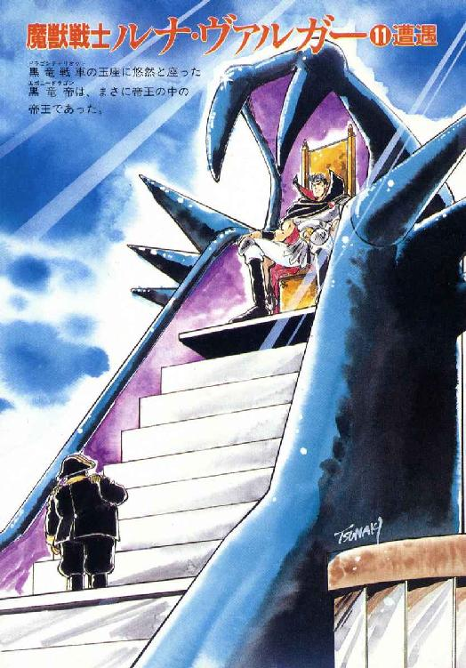
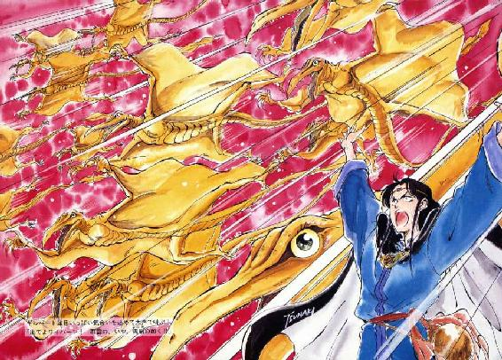
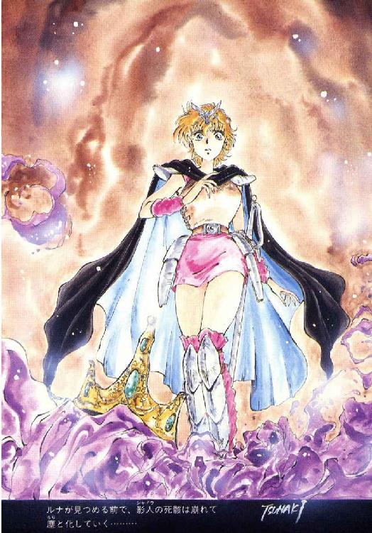
魔獣戦士ルナ・ヴァルガー
⑪遭遇
秋津 透
本作品の全部または一部を無断で複製、転載、配信、送信したり、ホームページ上に転載することを禁止します。また、本作品の内容を無断で改変、改ざん等を行うことも禁止します。
本作品購入時にご承諾いただいた規約により、有償・無償にかかわらず本作品を第三者に譲渡することはできません。
本作品を示すサムネイルなどのイメージ画像は、再ダウンロード時に予告なく変更される場合があります。
本作品は縦書きでレイアウトされています。
また、ご覧になるリーディングシステムにより、表示の差が認められることがあります。
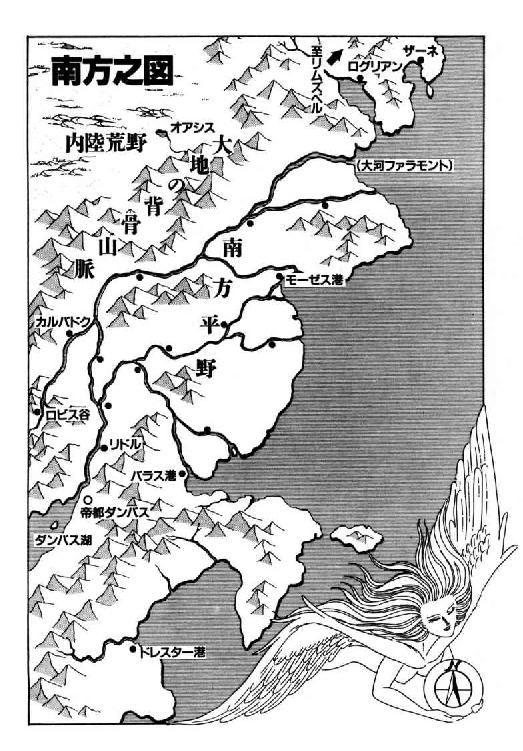
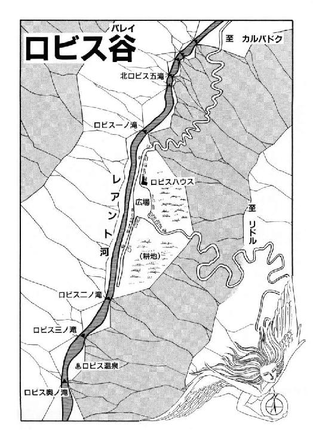
登場人物
ルナ・ド・リムズベル リムズベル公国の第二公女。巨竜魔獣と合体中。竜神公。
巨竜魔獣ヴァルガー ルナと合体している伝説の魔獣。強大な力を秘める。
ミル・ユード カルバドク侯爵家嫡男卿。強化斬魔獣剣士。ルナの婚約者。
ギルバート・エゼン 飛行竜召喚魔道士。気障で間抜けているが、実力はある。
レイピア・ロナ ミル・ユードに忠誠を誓う女戦士。ギルバートの世話役。
バト・ロビス ロビス谷の領主。無謀戦士の異名を持つ。
ロコ ルナの使い魔の有翼猫。少年に変身できる。
デューク 混血影人族の暗殺者。竜神公の配下になっている。
チャーラン・ポーラン 海栗召喚魔道士。情報通だが、騒々しく非常識。
スミス・チョーサー 晴天を呼ぶ魔道士。駄洒落の才能で、大魔道士に弟子入りする。
リム・リリス 縞兎獣人娘。色仕掛けが特技。影人族に捕まっている。
影人第一番 影人族（影を走る者）の族長。ルナたちの行動を妨害する。
ノワール・ダンバス ダンバス帝国の新皇帝。通称黒竜帝。重度の健忘症。
ザシャム 伝説の大魔道士、ではないかと思われる老人。
第一章 天才魔道士対帝国超戦士
１
「出でよ、黄金飛行竜！ 群雲の如く！」
きりっと表情を引き締めた魔道士ギルバート・エゼンが、両腕を高々と頭上にかざし、これ以上はないと言うくらい気合の籠った声で叫ぶ。同時に、彼が仁王立ちになっている物見台の上に、土埃混じりの突風が煽るように吹きつけ、ギルバートとその傍に立つ女戦士や魔道士の髪やマント、衣類の裾を、ばさばさばさっと派手な音を立てて巻き上げる。
しかし彼は、鋭い眼差しで天空の一角を見据えて微動もしない。すると、まるでその視線に耐えかねたかのように、空間が突然ぴっと裂け、次の瞬間、その裂け目から鮮やかな黄金色の奔流が、堰を切ったように溢れ出す。一瞬、物見台、いや、カルバドク市全体が、目を灼かんばかりに強烈な、黄金色の反射光で覆い尽くされる。
そして、いったんは無秩序な集団となって空間に出現した大量の黄金飛行竜は、空中で急遽ばたばたと態勢を立て直すと、あっと言う間に整然とした編隊を組みあげる。くえーっ、くえーっと啼きかわしながら、悠々と旋回飛行を開始する黄金飛行竜の総数は、大ざっぱに勘定しても百体以上はいるだろう。
「す、凄えっ......」
「こりゃあ、圧倒的だぁ......」
魔道士たちから少し距離を置いて、物見台の上で様子を窺っていたカルバドク侯爵家の監視兵たちが、天空を見上げて賛嘆とも戦慄ともつかないざわめきを洩らす。その声が耳に入ったのかどうか、魔道士は引き締めていた表情を緩めると、口元にふっと気障っぽい微笑を浮かべる。そして彼は、垂れてもいない前髪を左手の指で軽く額から払いのけ、周囲の人々に充分聞こえる程度の声で呟く。
「ふっ。黄金飛行竜群雲召喚の術、何の問題もなく成功だな」
「そうかしら。確かに召喚は成功したみたいだけど、何の問題もないかどうかは、まだわからないわ」
魔道士の傍に立つ女戦士レイピア・ロナが、やや硬い口調で応じる。彼女は片手を額にかざして、琥珀色の瞳を黄金の反射光から防御しているが、それでもまだ眩しいらしく、多少目を細めて柳眉をわずかに寄せている。
「とりあえず、召喚者が黄金飛行竜に乗った状態で、きちんと全体を指揮できるかどうか、実験してみなくちゃならないわね。物見台に二体、降下させてよ」
「よし、ちょっと待ってくれたまえ」
気取った調子で返答すると、魔道士は再び両腕を差し上げ、上空を旋回する黄金飛行竜の編隊に向かって短い呪文を唱えた。すると、即座に二体の黄金飛行竜が編隊から離れ、くえーっと甲高い咆哮を上げながら、召喚者を目指して一直線に降下して来る。その異様な迫力に、物見台の上に居合わせたカルバドクの監視兵たちは、思わず一斉に顔色を変え、あるいは表情を引き攣らせた。中には、たじたじっと数歩後退する者や、反射的に剣や槍をかざして防御の構えを取る者もいる。
するとその時女戦士が、凛とした鋭い声で警告した。
「静かに！ あの飛行竜は、魔道士が完全に制御しています。敢えて挑発するような愚劣な行動をしない限り、人間を襲うような事はありません」
「はあ、そうなんですか......」
半信半疑と言うか、四信六疑ぐらいの表情で、監視兵たちは不安げに、黄金飛行竜と魔道士たち、それに女戦士を見比べる。しかし彼女の方は、それ以上監視兵たちに声をかけず、琥珀色の目をわずかに上げて、黄金飛行竜が降下して来るのを待つ。
やがて、見る見る内に高度を下げてきた二体の黄金飛行竜は、そのまま物見台の上に着地しようとする。その態勢が、もろに襲いかかって来るように感じられたのだろう。監視兵のほぼ全員が、ほとんど反射的にざざざざざっと身を伏せる。
「わわわわわーっ！」
「クエーッ！」
「ギルバート！ 無理だわ！ 物見台の上じゃ、黄金飛行竜二体の着地には狭すぎる！」
半分以上恐慌状態になっている監視兵たちの悲鳴と、降りるに降りられずに躊躇している黄金飛行竜の咆哮の間を縫って、女戦士が金切り声で叫ぶ。すると魔道士は、ごくあっさりとうなずいて返答した。
「よし、それなら空中停止を命じよう」
「できるの？ そんな高等技能？」
レイピアが、切れ長の目を丸くして訊ねる。しかし、魔道士が応じるより先に、二体の黄金飛行竜は物見台の上方をすうっと滑るように旋回し、彼女たちの目の前まで移動して来ると、見事にぴたりと空中で停止した。どっちかと言えば単純で不器用な怪物と認識していた黄金飛行竜に、こんな高等技能が使えるなんて、と、驚愕の表情を見せる女戦士に、魔道士は会心の微笑を向ける。
「ふっ。驚く事はないよ、レイピア。私が召喚する黄金飛行竜は、本来、異世界の超生物だからね。尋常な生物では考えられない水準の、強力で、かつ応用範囲の広い能力を備えているんだ。何しろ、その気になれば超音速が出せるのだからね。空中停止ぐらいは、むしろできない方が不合理じゃないか」
「そーかしら......」
超音速飛行と空中停止では、技能の質がまるで違うと思うんだけど、と、女戦士は小さく首を傾げた。しかし魔道士は、左手で気障っぽく前髪を払いながら、いかにも得意げに言葉を続ける。
「もっとも、いかに黄金飛行竜と言えども、召喚者から適切な指令を与えられなければ、その能力を充分に発揮する事は不可能なんだ。つまり、空中停止であれ、超音速飛行であれ、一斉急降下火炎放射であれ、黄金飛行竜が見せる高度な技能は、すべて、このギルバート・エゼンが召喚者だからこそ、自由自在に使えるのさ。ふっ」
「それはいいけど、ギルバート、この黄金飛行竜たち、ちょっと過大な負担がかかってるんじゃないの？」
柳眉をわずかに寄せて、女戦士が訊ねる。確かに、空中停止している二体の黄金飛行竜は、前肢と後肢の間の皮膜を苦しげに大きく波打たせ、くぇ、くぇ、くぇ、と、哀れっぽい調子で小さく呻いている。どう見ても、あんまり長くは持ちそうにない。
「いくら空中停止ができるからって、無理な状態で長時間放置しちゃ可哀想よ。とにかく搭乗して、上空に昇った方がいいんじゃない？」
「なるほど。それもまた一案だね」
気取った口調で返答すると、魔道士は芝居がかった仕草で女戦士に片手を差し出す。
「では、まず君から乗りたまえ。私は、黄金飛行竜編隊の最後尾に位置して、全体の状態を把握しなくてはならないからね」
「はいはい、了解」
彼女は無雑作にうなずくと、空中停止している黄金飛行竜の背に、鮮やかな身のこなしでひらりと飛び乗った。束ねた黒髪が風に吹き上げられ、戦旗のように宙に翻る。
「よし。それでは私も、出立するとしようか」
格好をつけて呟きながら、ギルバートも黄金飛行竜の背にひらりと飛び乗ろうとする。しかし、もともと体術とは無縁の魔道士に、女戦士のような鮮やかな動作ができるはずがない。それどころか、長いマントを不意の突風にばさばさっと激しく煽られ、平衡を崩して危うく転落しそうになる。
「わわわっ！ わっ！ わっ！」
「あらら、大丈夫？」
万が一、いや、十が一、魔道士が転落したら即座に引っ張りあげようと鞭を構えながら、女戦士が苦笑混じりに訊ねる。しかし彼は、どうにか黄金飛行竜の背中にしがみついて体勢を立て直すと、かなり表情を引き攣らせながらも、ふっと笑って返答する。
「な、なに、この程度、どうという事はないさ。では、さっそく上空に昇るとしよう」
「転落しないように、ちゃんと注意してよ」
ちょっと揶揄気味に、女戦士が声をかけた。そして、ほとんど同時に魔道士が短い呪文を唱える。背中にそれぞれ人間を乗せた二体の黄金飛行竜は、きらきらきらっと陽光を反射しながら、空中を滑るような感じで上昇して行った。
「うーむうむうむ、さーすがは我が学友ギルバート・エゼン。飛行竜召喚の魔道は、まーたまた一段と水準を上げ、かつ洗練をも加えているではないか」
高空に昇ってゆく黄金飛行竜を物見台の上で悠然と見送りながら、魔道士チャーラン・ポーランが、例によって根拠もなく偉そうな口調で呟く。現在はとりあえず酒っ気も抜けており、いかにも自信ありげに傲然と腕を組んで胸を張ったその姿は、実態をまったく知らない人間が見たら、権威ある有力な魔道士に思えるかもしれない。
そして彼は、別に誰が聞いているというわけでもないのに、過剰なほど力説口調で言葉を続ける。
「しーかし、我が学友よ。召喚魔道の真髄は、洗練にあるのではなーいと私は思うぞ。召喚とは即ち、呼び出しの術ではないか。ならば、たーだひたすらに呼ーんで呼ーんで呼ーびまくる我が海栗召喚の術こそ、召喚魔道の真髄と言う事は不可能であろうか。いや、間違いなく可能なのであるよ」
単独で勝手に反語表現を締めくくると、海栗召喚魔道士は、どわっと大仰に両手を左右に広げた。
「そーゆーわけで、召喚魔道の真髄を、今こそ御覧に入れよーではないか。見よ、我が最強にして究極の必殺術、三段逆スライド召喚、海栗雪崩！」
何だかよくわからないが、とにかく異様なまでに気合を入れて、彼は空中から何かを取りだすような構えを取る。普段はどろんと濁っている両眼が、奇妙な迫力をたたえて爛々と光り、たるんだ笑いを浮かべている事の多い口元も、引き締まるとまでは行かないが、少なくとも緊張を含んで強張っている。おそらく、彼の生まれ育った魔道都市の住人といえども、ここまで真剣な表情をしたアチャラカ・スチャラカ・チャーラン・ポーランを見たことのある者は、誰一人としていないだろう。
しかし、一世一代の気合を籠めて、魔道士が召喚の声を上げようとしたまさにその時、いきなり上空から一体の黄金飛行竜が、凄まじい勢いで突っ込んできた。その背には、激しい憤怒と狼狽で血相を変えた女戦士が乗っている。
「やめやめやめやめっ！ 冗談じゃないわよっ！」
女戦士は刃物のように鋭い声で叫びながら、海栗召喚の奇怪な構えを取っている魔道士に向かって、右手に構えた細鞭をひゅっと振り出した。そして次の瞬間、彼女の狙い通り、目標の無防備な喉元に細鞭の先端が容赦なく絡みつく。あっという間に呼吸が詰まり、魔道士は白目を剝いて転倒する。同時に女戦士は、黄金飛行竜の背中から物見台の上に、危なげなく軽々と飛び降りる。もしも彼女の動作が一瞬でも遅れていたら、魔道士の頸骨は間違いなくへし折れていただろう。
「うー、ぐえー、ぐえー、ぐえーっ」
「まったく、このまま本気で絞め殺してやろうかしら」
首を絞め上げられてじたばたと悶える魔道士を琥珀色の瞳で見据え、女戦士が心底腹立たしげに呟く。
「よりにもよって、カルバドク市内で海栗雪崩を起こそうとするなんて！ 何のつもりか知らないけど、周囲がどんなに迷惑するか、全然わかってないんだから！ 本当に、油断も隙もありゃしない！」
「まあまあ。そう憤慨するなよ、レイピア」
彼女に続いて降下してきたギルバートが、黄金飛行竜の背に乗ったまま、気取った声をかけてくる。
「我が学友チャーランの行為は、確かに軽率そのものではあるがね。しかし、同門の召喚術師であるこの私が、目の前でかくも鮮やかな魔道を披露したとあっては、彼としても黙って見てはいられなかったのだろう。いわば、私の天才に触発されたわけだから、心情としては理解できるよ。ふっ」
「ねえ・ギルバート。吞気に解説してる暇があったら、黄金飛行竜をもう一体、物見台に呼び寄せてくれない？ とにかく、この大馬鹿者からは、一瞬でも目を離しちゃいけないみたいだから」
一応は依頼口調ではあったが、女戦士の声には、よほど鈍感な人間でなければとうてい無視できないほどの激しい苛立ちが含まれている。これにはさすがの能天気魔道士も、少々慌ててうなずいた。
「よし、わかった。君が乗る個体以外に、もう一体だね？」
「そうよ」
海栗召喚魔道士の首を、死なない程度に細鞭できゅうきゅう絞めながら、女戦士は面白くもなさそうな表情でうなずき返す。飛行竜召喚魔道士は、ごく真面目な表情になって、上空を舞う黄金飛行竜編隊を振り返る。
と、その時、魔道士の眉がわずかに寄った。
「おや？ 何だ、あれは？」
「どうしたの？」
女戦士の問いには答えず、彼は自分の乗っている黄金飛行竜の高度をすいっと上げる。そして少しの間、地平線付近を窺っていたが、やがて物見台へと降下して来た。そこへ、女戦士が多少苛立った声をかける。
「どうしたの？ 何かいたの？」
「いたなんてもんじゃない。これは一大事だぞ」
黄金飛行竜の背から物見台に降り立った魔道士が、声と表情にはっきりと興奮を現して返答する。
「陸上船が二隻、接近して来る。もうすぐ、物見台からも見えるはずだ」
「陸上船って、ドン・ドレスデン一味の？」
琥珀色の目を大きく見開いて、女戦士が訊ねる。すると魔道士は、意外なほど真剣な表情で訊ね返した。
「他にも存在するのかい？ 陸上船を実用に供している変人が？」
２
「さて、どうしよう......」
カルバドク南方に連なる丘陵の陰から姿を現した二隻の陸上船を見据えて、女戦士は柳眉を寄せて呟いた。物見台から遠望した限りでは、陸上船は二隻ともそれほど並みはずれた大型船ではないが、それでもしっかり甲板に大型投石機を据え、都市攻略の準備を整えてある。もしも投石機の射程まで接近して攻撃されたら、カルバドク陥落とまでは行かないまでも、かなりの被害が出るだろう。
「我が君は、帝国軍に対しては、できるだけ互いに損害を出さずに、ひたすら時間を稼げと指示をなさっている。でも、相手が陸上海賊の場合は、何も想定なさっていないわ」
困ったな、これは迷うな、と、女戦士は胸の中で唸る。先日、カルバドク市の北で行なわれた戦闘では、ルナ公女本人が魔獣変身して、陸上海賊の旗艦ガメラン号を叩き潰している。それを考慮すれば、今更、陸上海賊に対して遠慮や会釈は必要ない。
しかし、現在カルバドク市に接近している二隻の陸上船は、どうやってレアント河を越えたのか知らないが、都市の南側から出現している。これは、見方によっては帝国軍の先鋒部隊と解釈する事もできるわけで、それならば迂闊に攻撃するわけには行かない。
「暫時、相手の出方を見るべきかしら......。でも、そうすると必然的に先手を取られる事になるし、陸上船は速力があるから、もしかすると一気に防御土堤まで迫られるかもしれない。そうなったら、後々の事を考えても絶対にまずいし......」
柳眉をぎゅっと寄せて、女戦士は眼前の光景を見据える。都市の南側にはレアント河が悠々と流れ、その更に南の平地では、急造の防御土堤が都市防衛隊の手で、現在もせっせと構築されている。帝国軍が来襲した時には、この土堤で何とか阻止しようという作戦だ。
そして、どうやら土堤構築に当たっている部隊も陸上船に気がついたらしく、不意にばたばたと慌ただしく動き出す。その、右往左往と形容した方が良さそうな動きを見取って、女戦士は決断を下した。
「今、土堤構築を邪魔させるわけには行かないわ。それに、帝国軍と本格的に衝突する前に、飛行竜軍団の実力を、むしろ味方側に誇示しておくべきかもしれない」
カルバドク側だって、けっして一枚板で動揺皆無の状態じゃないしね、と、彼女は声には出さずに呟いた。そして背後を振り返り、飛行竜召喚魔道士に向かって告げる。
「ギルバート！ 飛行竜で、あの陸上船を叩くわよ！」
「わかった」
女戦士がちょっと意外に思うほど真剣な表情で、魔道士は小さくうなずく。
「どこまでやれるかわからないが、物見台から黄金飛行竜を遠隔操作して攻撃しよう。なに、エリオンで魔獣を攻撃した時の状況に比べれば、それほど難しい作業じゃない。心配する必要はないよ、ふっ」
そう言って魔道士は気障っぽく笑ったが、その頰と口元が明らかに引き攣っている。この自信過剰魔道士が、たかが陸上船相手の戦闘に、どうしてこんなに緊張してるのかしら、と、女戦士は不審そうに柳眉を寄せて訊ねた。
「物見台から遠隔操作で攻撃するの？ 私はてっきり、黄金飛行竜の背から陣頭指揮を取るつもりなんだろうと思ったけど」
「いや、それはできない。召喚呪文を無効化されて上空からいきなり墜落するなんて無様な真似は、一回やればもう充分じゃないか」
ごく一瞬ではあるが、通常の気取った能天気魔道士とはまるで別人のように苦い表情を見せて、ギルバート・エゼンが返答する。あっ、と、女戦士が、小さく喉の奥で呻く。
「ファンキー・ボーンの『言霊狩りの書』ね......」
「どんなに偉大で強力で天才的な魔道能力といえども、呪文を奪い取られてしまえば威力を発揮できない。そして、相手が陸上海賊となれば、師範殿が同行している可能性は大きい。私の予想では、おそらく黄金飛行竜編隊は、攻撃寸前に消えてなくなるだろう」
案外淡々とした口調で言うと、魔道士は女戦士に向かって、いささか気障っぽく肩をすくめて見せた。
「攻撃失敗の醜態は我慢できるにしても、同時に我々が搭乗する黄金飛行竜を消されて陸上船の目の前に墜落してしまっては、まさしく正真正銘の恥の上塗り、しかも生命の危険という付属条件つきだ。いくらなんでも、これは避けたいと思わないか？」
「確かに......」
女戦士は無意識に唇を嚙んで、着々と土堤に接近して来る陸上船を凝視する。魔道士は、攻撃失敗の醜態は我慢できると言ったが、彼女にしてみればそうはいかない。
もしも飛行竜編隊が、陸上船に攻撃をかける寸前に一斉に消滅したら、カルバドクの市民がいったい何と思うか。その結果を考えて、女戦士は思わず表情を引き攣らせた。市民たちが彼女や魔道士を非難するようなら、まだましだ。下手をすると、いや、おそらく、兵士を含む市民たちは深刻な恐怖から恐慌状態に陥り、雪崩をうって逃亡、あるいは敵に投降する可能性が高い。もともとカルバドク人の気質は、戦争よりは商売向きと言われており、彼女から見ればどうしても軟弱な傾向がある。
「攻撃をかけるなら、絶対に失敗するわけには行かないわ。どうやら、飛行竜は使わない方が良さそうね」
女戦士がぼそりと呟き、魔道士は安堵と残念の中間ぐらいの表情でうなずく。しかし、飛行竜が使えないとなると、陸上船を効果的に阻む手段はない。帝国軍本隊はまだ姿も見せていないのに、早くも目いっぱい苦しい事態になってしまった、と、女戦士は徐々に大きくなる陸上船の船影を睨み据え、奥歯をぎりっと嚙み締めた。
と、その時、誰かが彼女の服の裾をつんつんと引く。そして、険しい表情で振り返った女戦士の視界に入った顔は、こういう時に最も見たくない顔の筆頭格、根拠のない自信に満ち満ちた無責任魔道士の不遜な笑顔だった。
「いやー、どーもどーも、レイピアさん。お見受けしたところ、どーやらなーかなかお困りのよーですが、こーこはひとつ、この私めに出番をいただけませんでしょーか」
首に細鞭を巻きつけたままの格好で、海栗召喚魔道士はえっへんと偉そーに胸を張る。
「私にお任せいただければ、この窮地はたーちどころに解決、するかも知れないし、しなーいかも知れない。しーかし少なくとも、これ以上状況が悪くなる事は絶対にないという自信はあーる。だーからこの際、無駄で元々のつもりでいーから、大丈夫、私に任せなさいって」
「......やっぱり、一気に息の根止めておこうかしら」
女戦士は、半分以上本気で唸った。しかし、彼女が細鞭をぐいと引く前に、飛行竜召喚魔道士が気取った調子で学友に告げる。
「我が学友チャーランよ。いかに彼女が君の能力を評価していたとしても、具体的な方策を聞かずして、すべてを一任する事はありえないだろう。まずは具体的に事態打開の方策を説明して、その上で、彼女の判断を仰ぐべきではないのかな」
「ギルバート！」
迂闊な発言をしないでよ、と、女戦士は憤然と魔道士を睨んだ。私には、カルバドク市内で衝動的に海栗雪崩を起こそうと企てるような究極無責任魔道士なんかに、事態打開の方策を求める気なんて、最初っから毛頭ないんだから。説明なんかさせたって、時間と労力の完全な無駄だわ。
しかし、彼女が言葉を続けるよりも先に、好機を逃すまいとばかりにチャーラン・ポーランが説明を開始する。今更わざわざ止めさせるのも乱暴だし、とりあえず喧騒以外の実害はないし、仕方ない、一応は説明を聞くだけ聞きましょう、と、彼女は渋々口をつぐんだ。
「えー、私の考えている方策はですね、即ち、簡単に言いますと、陸上船の上空で我が必殺の海栗雪崩を起こし、一気に大量の海栗を浴びせ倒して沈没させてしまおー、という作戦であーります」
得意げに、かつ無闇矢鱈に自信ありげに、魔道士は自分の思惑を披露する。そして、いかにも胡散臭そーな視線を向ける女戦士の目の前に、ぱっと指を三本立てて突き出した。
「陸上船攻撃に、飛行竜ではなく我が海栗を使う利点は三つ！ まず第一に、敵の意表を突くことができーる！ 第二に、作戦の途中で呪文を無効化されても、いったん出現した海栗は消えなーい！ 第三に、失敗しても目立たなーい！ どーです、どれ一つ取っても実に捨て難い利点ではあーりませんか」
「失敗しても、目立たない？」
思わず訊ね返した女戦士の表情に、わずかではあるが興味と期待の色が現れる。
「どうして海栗で攻撃すると、失敗しても目立たないの？」
「よろしーですか、レイピアさん。ここは一つ、想像力を働かせていただきたーい」
ここぞとばかりに魔道士は、大仰な身ぶり手ぶりをまじえ、ほとんど俳優並みというか、どちらかと言えば漫才師級の熱演を見せながら説明を行なう。
「飛行竜召喚魔道は、確かに華麗にして迫力充分。並大抵の軍隊なら、飛行竜の集団が急降下して来ただけで、攻撃されなくても恐慌状態になる。そーれは間違いない、認めましょう」
「ふっ、さすがは我が学友チャーラン。飛行竜召喚魔道が備える強力無比な威圧効果を、的確に把握しているじゃあないか」
頼まれもしないのに、飛行竜召喚魔道士が気取った調子で口を挟む。すると海栗召喚魔道士は、これまた一段と偉そーに胸を張って哄笑する。
「わーははははははは。当然ではないかね、我が学友ギルバートよ。私は魔道都市最強の情報中継業者であり、同時に召喚術師でもあるのだよ。魔道都市最強の召喚術師であるギルバート・エゼンの魔道能力に対しては、常に鋭い観察眼を向け、本質を的確に把握しようと、日夜努力研鑽を怠らないのであるよ。どーだ、偉かろー。えっへん」
「なーるほど。我が学友チャーランよ。君が、真の価値を見抜く鋭い目を持っているのは良くわかった。さすがは魔道都市評議長の直接指名によって、特に南方特派員に任じられただけのことはある。しかし、我が天賦の才能が放つ華々しい光輝は、目のある相手には、どんなに隠したところで見抜かれてしまうものなのだな。これでは、どうにも謙遜のしようがない。困った事だ。ふっ」
「ちょっと、二人とも。魔道士漫才を競演するなら、もうちょっと余裕のある時にしてくれない？」
目いっぱい尖った声を出して、女戦士が両魔道士の間に割って入る。
「今は、どうやってあの陸上船を阻止するか、現実問題の討議をしているのよ。そういうわけで、ミスター・ポーラン。なぜ、海栗を使って攻撃すれば失敗しても目立たないのか、説明を続行して貰えませんか？」
さもなかったら、この場で細鞭を絞って呼吸を止めてやるから、と、彼女は声には出さずに付け足した。それが聞こえたわけではなかろうが、無責任海栗召喚魔道士は意外に大人しく本題に戻る。
「わーかりました。そーれでは説明を続けましょう。えーと即ち、飛行竜召喚魔道はとにかく何につけても印象が華麗で、我が海栗召喚魔道は、最終的な結果に大差がなくても、比較的地味な発動の仕方をする。そーれは、間違いのない事実であります」
そう言うと、魔道士はまるで手品師のように、両手をぱっと左右に大きく広げた。
「しーかし、事象の性質というものは、紙の両面、両刃の剣、昨日の有利は昨日の不利、与えられた条件一つで、適応不適応がころころ変化する可能性を秘めているわけでしてね。今回のような場合は、正しくこれに当てはまるのではないかと、まー、私は思うわけなのですよ。万物流転、色即是空、そのうち何とかなるだろう、と、いうのが、私の常日頃からの信条の一つで。うむ、この信条は、誰が何と言おうと否定不可能だぞ、えっへん」
「それで？」
またまた何やら脱線しそうになる魔道士に、女戦士が冷淡な声で訊ねる。
「要するに、何が言いたいわけ？ もしかして、海栗召喚魔道は飛行竜召喚魔道より地味だから、失敗しても比較的目立たないって、それだけ言えば済む事なんじゃないの？」
「おおっ、これは何と見事な推察！ これぞまさしく、天才的なまでに的確な、状況把握と言うべきでありましょうよ」
魔道士は大仰に驚愕しながら賛嘆したが、当の女戦士は彼を完全に無視して、わずかに肩を落とす。そして、ちょっと落胆した表情になって、小さく溜息をつく。
「やっぱり時間の無駄だったわ。陸上船阻止は、都市警備隊に任せるしかなさそうね」
「いや、私はそうは思わないぞ」
また頼まれもしないのに、飛行竜召喚魔道士が、気障っぽく前髪を払いながら口を挟む。
「いいかね、レイピア。私が召喚した黄金飛行竜が消滅していないのだから、少なくとも現在は、呪文の無効化は行なわれていないわけだ。つまり、師範殿は、準備万端を整えてこちらの行動を待ち構えているのかも知れないが、もしかすると陸上船の中で眠っているのかも知れないし、あるいは、ひょっとするとこの場にはいないのかも知れない」
「だから、何よ？」
柳眉を寄せて、女戦士が訊ね返す。すると魔道士は、意外に淡々とした調子で返答した。
「だから、師範殿の所在を確認するためだけでも、とにかく魔道攻撃はかけてみた方がいいんだ。そうでないと、今後我々は、陸上船が出現しただけで、師範殿の影に怯えて魔道が使えないという情けない状況に陥ってしまう。もしかすると、それこそが敵の真の目的ではないか、と、私は推察しているのだがね」
「だけど、ギルバート！」
抗言しかかった女戦士に向かって、魔道士はすっと片手を上げて言葉を制した。例によってかなり気取った動作ではあったが、なぜかそれ以上に彼の真摯さが感じられ、女戦士は思わず大人しく口を閉じる。すると魔道士は、軽くうなずきながら再び言葉を継ぐ。
「魔道攻撃をかける以上、失敗したら士気に関わる、と、君が判断しているのは承知しているし、確かにそれは正しい判断だろう。だから、私の飛行竜は、師範殿が不在、あるいは対応不能状態にあると判断できるまでは使えない。大量の飛行竜が空中で消えてしまっては、これは間違いなく恐慌要因だからね」
淡々とした調子で説明しながら、魔道士は口元にふっと笑いを浮かべる。いつもと同じ気障っぽい微笑だったが、女戦士の目には、何だか不思議に頼もしく映る。
「しかし、我が学友チャーランの海栗雪崩は、私の飛行竜召喚とは、かなり性質が違う。召喚前に呪文を無効化されれば、まったく何も起こらないだけだし、攻撃中に召喚中断に追い込まれても、単に海栗の流出が止まるだけだ。誰かが傍で見ていても、よほど魔道に対する知識があって、しかも師範殿と我々の間の事情に通じていなければ、何が起きたのか見当をつけるのは難しいだろう」
「そう言われれば、そうね......」
わずかに口籠りながらも、女戦士はうなずいた。すると海栗召喚魔道士が、ここぞとばかりに横から偉そーに哄笑を入れる。
「わーはははははははははは、どーやら御理解いただけたよーですな。我が海栗召喚魔道は、一見地味に思えるでしょーが、実は魔道の通にしか理解できない渋さが特徴、まーさに侘び寂びわさびの境地に達した、幽玄幽玄ゆーげんひーとも言うべき高度にして高尚な術なのです。そして、高度な術にのみ許される特権として、たとえ多少の齟齬があっても、それを見抜けるのは同等に高度な鑑賞眼を持った者のみ、とゆー事になるわけですな。どーだ偉かろー、えっへん」
「自慢するのは後にして、やるなら急いで攻撃をかけてよ！」
意味もなく長広舌をふるう相手に対する憤慨と、優柔不断に動揺を続ける自分自身に対する叱咜を重ね、女戦士が海栗召喚魔道士を怒鳴りつけた。実際、二隻の陸上船は、投石機の射程に入りかかる寸前まで防御土堤に接近している。もはや、悠長に時間を浪費してはいられない。
と、飛行竜召喚魔道士が、ごく真面目な表情で海栗召喚魔道士に訊ねかけた。
「ところで、我が学友チャーランよ。君は、この物見台から動かずに、遠隔召喚で陸上船に海栗雪崩を降り注がせることができるのか？ そうでないなら、何らかの手段で陸上船に接近しなくてはならないが」
「わーはははははははははは、大丈夫、大丈夫、私にすべて任せなさーい」
いかにも軽薄そのものの口調で請け合うと、海栗召喚魔道士は自分の胸をぽんと叩く。その動作を見た瞬間、もしかしたら私はとんでもない失策をしてしまったんじゃないかしら、と、不意に思い当たって、女戦士の顔からすうっと血の気が引いた。
何しろ相手は、魔道都市に悪名高い究極無責任魔道士アチャラカ・スチャラカ・チャーラン・ポーラン。わーはははははははははは、ちょーっと照準が外れました、とか称して、味方の頭上に海栗をぶちまける可能性はかなり高い。そして、そんな愚行をされたら最後、カルバドク側の士気は、即座に壊滅状態になる。
「いけない！ やめさせなくちゃ！」
思わず小さく口走りながら、彼女は魔道士の首に巻きついたままになっている細鞭を、ぐいと力を入れて引きかかった。だが、女戦士が動作を起こすよりも一瞬早く、飛行竜召喚魔道士が彼女の腕を押さえる。
「止めちゃいけない！ ここまで来たら、彼を信じるんだ！」
「あれを信じろって言うのっ？ あれをっー!?」
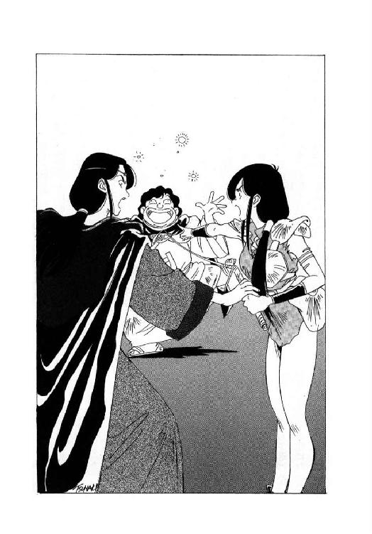
諸悪の根源、不都合の権化、究極無責任魔道士を指さし、女戦士は逆上寸前の声で叫ぶ。しかし、海栗召喚魔道士は彼女の絶叫を完全に無視して、両腕を奇妙な姿勢に構え、陸上船のやや上方を睨み据えたかと思うと、前置き抜きでいきなり喚いた。
「うーにーっー！」
「......」
一瞬、物見台の上を緊張に満ちた静寂が支配する。そして次の瞬間、ギルバート・エゼンが大声で叫んだ。
「やった！ やったぞ！」
「あら、うまくいったみたいね......」
興奮状態の魔道士とは対照的に、ほとんど虚脱していると言っても良さそうな、無感動な口調で女戦士が呟く。物見台の上の兵士たちも、驚愕というよりは、ほとんどあっけにとられたような表情で、目の前の光景を見やっている。
そして、彼らの視線の先では、陸上船の一隻が空中から大量に落下する海栗に直撃され、早くも大きく傾斜し始めていた。既に帆の大半は海栗の棘でずたずたに裂け、転針して逃げる事もできなくなっている。甲板では何人もの陸上海賊が右往左往しており、中には必死になって海栗を船外に投棄している者もいるが、とてもその程度では間に合わない。みるみる内に船体の傾斜角が大きくなり、数人の海賊が恐慌状態になって舷側から地面に跳び降りると、我先に逃走し始める。
するとそこへ、この事態を巻き起こした張本人と言うか功労者と言うか、とにかく海栗召喚魔道士の目いっぱい得意そうな大哄笑が響きわたった。
「わーはははははははははは。遠からん者は音に聞け、近くば寄って目にも見よ。我こそは魔道都市にその名も高き偉大なる召喚術師、アーチャラカ・スーチャラカ・チャーラン・ポーランなーるぞ。たった今、不埒な陸上海賊に天誅海栗雪崩を下し、陸上船を撃沈したのは、だれあろー、この私なーのだ。我が必殺魔道、海栗召喚の威力、見たか、見たか、しかと見ーたーかー。どーだ偉かろー凄かろー、安かろー悪かろー、わーはは、わーはは、わーはははははははははは」
「おっと、いけない。こうしちゃいられないぞ」
ほとんど舞い踊らんばかりに浮かれ騒ぐ学友を横目で見て、飛行竜召喚魔道士が女戦士の腕を放し、わずかに眉を寄せて呟く。
「海栗雪崩が成功した以上は、師範殿は不在か、少なくとも対応不能状態に間違いない。ならば、もはや遠慮は無用という事だ」
言うより早く、魔道士は両腕を勢いよく天に突き上げた。そして、ここぞとばかりに気合を籠めて大声で叫ぶ。
「行けっ、我が忠実なる黄金飛行竜軍団よ！ カルバドク市に仇成す陸上海賊を、完膚なきまでに叩きのめすのだ！」
「クエーッ！」
ここまで延々と上空で旋回を続けていた百余体の黄金飛行竜が、召喚者の命令を受け、一斉に甲高い咆哮を上げる。そして次の瞬間、黄金色に輝く凶暴な疾風が、海栗雪崩に潰される僚船を成す術もなく眺めていた残る一隻の陸上船に襲いかかった。
逃げようにも躱そうにも、とにかく速度の桁が違いすぎる。それこそ文字通りあっという間もなく、陸上船は帆と帆柱を引き裂かれ、行動不能になってその場に頓挫した。
「あ、あれ？ いったい何をやったの？」
女戦士が、半分あっけにとられたような表情で訊ねる。彼女の視力は一般人より遥かに鋭いのだが、それでも、黄金飛行竜の編隊がどんな攻撃をしたのか、まったく視認することができなかったのである。
「何だか、陸上船の上を通過しただけみたいに見えたんだけど？」
「ふっ、実は君が見た通りなのさ、レイピア。あれは、黄金飛行竜ならではの特殊攻撃、超音速衝撃波破壊戦法なのだよ」
ほとんど限界点に近いぐらい気取りまくった笑みを浮かべると、魔道士は前髪をさっと払った。
「黄金飛行竜が超音速で飛行すると、周囲の空気が切り裂かれて衝撃波が発生する。一体や二体ならとにかく、百体以上の黄金飛行竜が一斉に衝撃波を発生させれば、これは充分に攻撃手段として使えるというわけさ。まあ、火炎槍の一斉放射で焼き払う方が容易なんだが、一応は乗組員に逃走する余裕を与えてやった方が良いんじゃないかと思ってね。こう見えても私は、細かい配慮を忘れない性格なのだよ。ふっ」
「はいはい、今日はもう、好きなだけ自慢していいわよ」
軽く肩をすくめて、女戦士は苦笑を浮かべる。とにもかくにも二隻の陸上船を、ほとんど何も犠牲を出さずに、ほぼ完全に叩き潰すことができたのだ。これで、カルバドクの市民や都市防衛隊の兵士、それに侯爵家に仕える家臣たちも、魔道士が大きな戦力になる事実を理解しただろう。
「もっとも、この戦闘は前哨戦に過ぎないし、それに、ずいぶん偶然に助けられてるのよね。一つ裏目に出ていたら、きっと大変な事態になっていたわ」
レイピアは、声には出さずに呟いた。もしも陸上船に、呪文無効化の巻物を構えたファンキー・ボーンが乗り組んでいたら、あるいは、海栗召喚魔道士がカルバドク市内に海栗をぶちまけていたら、本気で深刻な事態になっていたに違いない。なんとか切り抜けられたのは、まさに僥倖と言うべきだろう、と、彼女は思っている。そして、その僥倖が、前哨戦だけで尽きてしまわずに、帝国軍を迎える正念場まで続いてくれるという保証はない。
「大変なのは、これからなのよね......」
傍に、気取った微笑を浮かべて前髪を払う飛行竜召喚魔道士と、大哄笑を続ける海栗召喚魔道士。地には頓挫した二隻の陸上船と、やっと歓声を上げ始めた都市防衛隊。空中には黄金飛行竜の大群が乱舞する騒々しい状況の中で、彼女はそっと、深く重く溜息をつく。
「我が君、どうか急いでお戻り下さい。やっぱり私には、荷が重すぎます」
３
「ふむふむ。やはり、魔獣は出てこなかったのだね」
陸上海賊艦隊司令ドン・ペドロ・カルロス・ドレスデンは、カルバドクに派遣した三隻目の陸上船、ワーテルロー号船長アレクサンドル・カエサルの急送報告書を検討しながら、極めて冷静な表情でうなずいた。
「魔道が使われた順番は、最初に海栗雪崩、それから飛行竜攻撃か。なるほど、呪文を無効化されるのではないかと心配しながら、おそるおそる仕掛けて来たわけだ。もしも魔獣が控えているのなら、こんな手間のかかる真似はしないだろうね」
「ですから、ですから、ですからーっ！ あたしが最初っから、はっきりきっぱり報告してるじゃないですかーっ！」
急送報告書を運んで来て、そのまま彼の傍に控えている使い魔が、この時いきなり、かなり激しい調子で喚き出す。彼女は現在人間の姿になっているが、両眼を濃い色の保護眼鏡で覆っており、それがちょっと異様な印象を与える。
「蜥蜴尻尾の怪獣女は、何の思惑だか知らないけど、カルバドクを抜け出して南方に出没してるんですってばーっ！あたしは、この目で、この目で、この目で、しーっかりばっちり確認して、おまけに怪光線まで浴びせられて来たんですからねーっ！ 噓じゃない、噓じゃない、絶対絶対噓なんかじゃないって言ってるでしょーっ！ これ以上、何の証拠が必要だっておっしゃるんですかーっ！」
「わかってる、わかってる。わかっているから、静かにしなさい。別に、お前の報告を疑っているわけではないと、何度も説明しただろう？」
ぎゃーぎゃーと騒ぎ立てる猫少女を、陸上艦隊司令はわずかに苦笑しながらなだめる。本来ならば、いくら相手が御寵愛の使い魔でも、これほど言いたい放題言わせておくドン・ドレスデンではない。しかし、ここしばらくの彼女の働きから考えれば、この程度の暴言は許容してやっても妥当だろう、と、彼は判断している。
「ただ、お前がリムズベルの公女と遭遇してから、もはや結構時間が過ぎているからね。もしかすると、相手は既にカルバドクに舞い戻って来ているかも知れない。その点を、どうしても確認しなくてはならなかったのだよ」
そして、確認した甲斐はあったね、と、彼は口元に薄く笑いを浮かべた。
自慢の超巨大陸上母船ガメラン号を魔獣に破壊され、いったんはカルバドクから手を引く決意を固めたドン・ドレスデンだったが、昨日、南方から飛んで帰って来た有翼猫の報告を聞いて、再びむくむくと欲が出て来た。
何と彼女は、魔獣を操るリムズベルの公女ルナをリドル市付近の山中で目撃し、その際いきなり攻撃された、と、言うのである。そして彼は、使い魔の報告を聞いた瞬間、この重大情報をカルバドク遠征の途上にあるダンバス皇帝に、直接売りこもうと決意した。
これまでドレスデン一族の間では、ダンバス帝国と交渉する権利、特に、皇帝と直接交渉する特権は、帝国海洋侯の肩書きを持つ大総裁４ＷＤが完全に独占しており、一介の艦隊司令、それも一族の主流から外れた陸上海賊如きが手を出せるような状況ではなかった。しかし、４ＷＤはもはや亡く、後継の大総裁はまだ決まっていない。今こそ、皇帝に直接関係をつける絶好の機会だ、と、彼は判断したのである。
そしてその日の午後、ドン・ドレスデンは乗艦コガメラン号を南に走らせ、リドル市から北上中の帝国軍団に合流して、皇帝に謁見を求めた。到着した時は既に夜になっていたが、黒竜帝は即座に彼を本陣黒竜戦車に招き、例によってごく鷹揚に用件を訊ねた。
その時の様子を、彼は後にこう語っている。
「陛下は、私が申し上げた魔獣に関する重大情報を、まるで世間話を訊くような気楽な表情で受け取られた。そして、傍の書記官に小声で何かお訊ねになり、それから闊達な微笑を浮かべて私に向かって仰せられた。
『そちの忠節、実に嬉しく思うぞ。しかし、心配はいらぬ。余は既に、リムズベルの大怪獣が余の軍団を避けて帝都を襲う場合を考慮して、対応策を記録してあるのだ。敵がいかに軽挙妄動しようと、余はひたすら王道を進み大義を貫くのみ。怪獣がいようがいまいが、カルバドク親征は予定通り行なう』
このお言葉を耳にした時、私の全身に異様な感動が走った。憚りながらドン・ペドロ・カルロス・ドレスデン、皇帝陛下に謁見するまでは、たとえ相手がどんな高い地位にいようと、内心では見下してかかって来た。今は亡き大総裁閣下に対しても、今は頭を下げているが、いつか絶対に凌いでやると嘯いて来た。正直に言おう。私は根本的に不遜な人間だ。
しかし、その私が、皇帝陛下に対してだけは、完全に負けた、という感覚を抱いた。いや、そもそも勝ち負けなどという問題ではない。最初から、人間の格が違いすぎるのだ。
私は最初から、帝国の力を自分の利益と権勢拡大のために利用するつもりでいたし、今もその思惑は変わらない。しかし、もしも皇帝陛下から直々にお声をかけられたら、たとえ損にしかならないような仕事でも、有り難く平伏して受けてしまいそうな気がする。これは、私のような商人にとっては、まったく怖ろしい心境なのだが」
そしてこの時、黒竜帝は陸上船舶侯の爵位をわざわざ新設して、彼に気前よく授けている。皇帝に直接関係をつけておこうという彼の思惑は、本人の予想を遥かに超える規模で見事に成功したわけだ。
もっとも、物事には必ず両面があるわけで、庇護を受ければ、たとえ強制されなくても義務が生じる。黒竜帝に謁見した翌日、帝国陸上船舶侯ドン・ドレスデンは、本当にカルバドクに魔獣がいないかどうか確認するため、配下の陸上船三隻を派遣し、老朽船二隻に強行偵察を命じた。もちろん魔獣が出現すれば、強行偵察船が叩き潰されるのは当然だし、見届け役のワーテルロー号も無事では済まないのは覚悟の上である。
そして、その結果、強行偵察用老朽船は二隻とも破壊されたが、魔獣は出現しなかった。ワーテルロー号の船長は、艦隊司令の命令通り、戦闘の一部始終を記録した詳細な報告書をしたためて、同乗している有翼猫に託して送り届けた。彼女の両眼は魔獣公女の怪光線に痛めつけられ、まだ完全には回復していないが、この程度の伝令役なら充分に勤まる。
もっとも、魔獣と遭遇するかも知れないこの任務は、魔獣を深刻に恐怖している有翼猫には精神的にかなり辛かっただろう、と、ドン・ドレスデンは想像している。だから彼は、柄にもなく猫少女に対して寛容に振る舞っているのだが、頭脳構造の単純な彼女に、それがわかっているかどうかは疑わしい。
「とにかく、魔獣は出現しなかった。この事実を、さっそく皇帝陛下にご報告申し上げるとしよう。コガメラン号、出帆！」
船長室の壁から突き出している伝声管の蓋を開けて、大船長が部下たちに出帆を命じる。たちまち、乗組員たちが忙しげに奔走する気配が、頭上からばたばたと伝わって来る。
以前ルナ公女が、転倒した亀とか内容過剰の鍋とか称して思わず爆笑した脱出艇コガメラン号だが、多少の外見の無様ささえ我慢すれば、陸上船として充分に使用できる。やがて、船体の規模とはまったく不釣り合いに高々と聳える帆柱に帆が張られ、コガメラン号は意外に高速で、南に向かって動き出した。
同時に、甲板に整列した専属音楽隊が、大船長の主題曲を賑々しく演奏し始める。この主題曲の演奏だけは、彼が最初に陸上船を手に入れて以来、どんなに乗艦の規模が変わっても、ずっと継続して来た慣習だ。
「それにしても、魔獣がカルバドクから姿を消して、魔道士に召喚された飛行竜や海栗が主戦力になっていると知ったら、ミスター・ボーンはさぞかし口惜しく思うだろうね。なにしろ、カルバドクに味方している魔道士たちは、彼の仇敵だそうだから」
使い魔に酒の用意を命じ、船長室に流れこんで来る主題曲の演奏に耳を傾けながら、ドン・ドレスデンは半分独言のように呟く。
長年にわたって彼の協力者だった魔道士ファンキー・ボーンは、伝説の魔獣ヴァルガーと敵対するのを怖れ、先日、自分で召喚した巨鳥に乗って、行き先も告げずに慌ただしく立ち去ってしまった。彼が秘蔵している巻物は、カルバドクに味方している魔道士たちの魔力を悉く無効にできる強力な魔道具だったから、事態がこうなってみると、彼の不在は確かに残念ではある。
とはいうものの、大船長には、いまさら巻物収集家の魔道士を探して呼び返す気は毛頭なかった。探しに行こうにも目算がない、とか、唯一巨鳥に追いつける機動力を持つ有翼猫が目を痛めていて探索ができない、とか、帝国諸侯になった以上は魔道士と積極的に関係しない方がいい、とか、細かい理由はいろいろある。しかし最大の理由は、いくら魔道士が味方したところで、魔獣不在のカルバドクは、最終的には黒竜帝陛下率いる帝国軍団に蹂躙される、と、彼が確信しているからだ。
一口に帝国軍団と言うが、進軍する十五万人の帝国戦士を実際に目の前に見ると、もはや圧倒的という以外、何の感想も思い浮かばなくなる。確かに魔獣も凄まじい存在ではあるが、誇張ではなしに大地を埋め尽くす帝国軍団の圧倒的迫力に比べると、しょせんはただの大蜥蜴という気がして来るほどだ。大船長は、魔獣と帝国軍団の両方を見た事があるから、これは自信をもって断言できる。
ましてや、魔獣のいないカルバドクなんぞが、あの大軍団に対抗できるわけがない。理屈ではなく実感として、大船長は心の底からそう確信している。
「しょせんカルバドクにとっては、絶対に勝てない戦争だ。せいぜい魔道を使って派手に抵抗して、傷を深くしてから斃れてくれた方が、私としては安心できる。まあ、いずれにしても、常識的に考えれば、帝国を正面から敵に回した時に、あの都市は事実上滅亡したも同じなのだがね」
大船長は、薄く笑いながら呟いた。究極の非常識とも言うべき魔獣がいなくなった以上、もはやカルバドクには、常識的な滅亡の道しか残っていない。そして、陸上交易の覇権は、黒竜皇帝陛下に任命された陸上船舶侯、ドン・ペドロ・カルロス・ドレスデンが握るのだ。
と、栄光の未来を想像していささか陶然となった大船長の前に、猫少女が間合い良く酒瓶と酒杯を持って来る。満足げにうなずきながら、彼は血のように果実酒がたたえられた杯を高々と掲げ、そして一気に飲み干した。
「うーむ、うまいっ！」
これほどまでに美味な酒は、生まれてこのかた飲んだ事がない、と、大船長は思わずにんまりと微笑する。そして、彼が卓上に置いた酒杯に、猫少女が二杯目を注ごうとしたとたん、伝声管の蓋がぱかっと開いて、甲板からの報告が届いた。
「大船長、東南東に進軍中の帝国軍団を発見しました。ちょいと本船の針路からずれていますが、転舵してよろしいですかい？」
「うむ、転舵を許可する。私もすぐに、甲板に出るよ」
即座に返答して、大船長はわずかに眉を寄せた。どうやら帝国軍団は、彼の予想よりも速い速度で北上しているらしい。
「もう少し、時間があると思ったんだがね」
ちょっと未練がましい表情で、大船長は猫少女の抱える酒瓶を見ながら咳いた。しかし、酔っ払った状態で皇帝陛下の前に参上するわけにもいくまい、と、彼は小さく首を振って使い魔に命じる。
「チャフよ、その酒を片づけなさい」
「はーい、はいはい、はーいはい」
無雑作にうなずくと、猫少女は酒瓶の栓をきゅっきゅっと閉め、酒杯をひょいと取りあげて隣室に去ってゆく。もう一杯ぐらい構わないんじゃないですか、とか、言ってくれても良かろうに、と、大船長は一瞬思ったが、使い魔にそんな配慮を求める方が間違っている。彼はいささか憮然とした表情になって、船長室から出ていった。
そしてドン・ドレスデンは、この時の自分の決断を、生涯悔やむ事になる。酒豪揃いの帝国人を統べる黒竜帝陛下は、拝謁に来た臣下がたとえぐでんぐでんに泥酔していても、全然まったく気にしない御方だ、と、後になって判明したのである。
しかも彼は、この時の一杯ほど美味な酒に、そのあと二度と巡りあう事がなかった。瓶に残った酒は、いったん栓を開けたためにあっと言う間に変質してしまい、再び飲んだ時には似ても似つかぬ味になっていたのである。
この顚末は後日『陸上船舶侯の幻の一杯』と言われて有名になった。
４
「うむうむ、そうか。持ち船を犠牲にしてまでの敵情視察、誠に御苦労であった」
移動本陣黒竜戦車の玉座に悠然と座った黒竜帝ノワール・ダンバスは、平伏して奏上を述べる陸上船舶侯を見やって、例によって極めて鷹揚にうなずいた。
「そちの労苦を、帝国はけっして無駄にはせぬぞ。正式な論功行賞は事態に決着がついてから改めて行なうが、とりあえず、そちが犠牲にした二隻の陸上船に相当する補償を、余と帝国の名において執行しよう」
「ははあっ。陛下の有り難き御言葉に、臣ドン・ペドロ、ただひたすらに恐懼するばかりでございます」
これは幸運、実に幸運、まったくもって大幸運、と、踊り出したくなるのをひたすら押さえ、ドン・ドレスデンは恭しく謝辞を述べて、皇帝陛下の御前からそそくさと退出する。もちろん内心では、廃船寸前の老朽陸上船をねたに、どの程度まで補償請求を水増しできるだろうか、と、素早く計算を始めているのは言うまでもない。少なくとも、陸上船を新たに二隻購入できるだけの実質金額は当然請求するとして、後は東方からの輸送料に関税を加え、相場の変動分と手数料仲介料紹介料、保証金運上金冥加金、その他もろもろを最大限に見積もれば、結構な金額を請求できるはずだ。
一方、陸上船舶侯を退出させた後、黒竜帝は随行する二人の将軍、グラ・ゴルンとマセクス・イザを黒竜戦車に呼びつけ、臨時御前会議を行なった。すぐさま参上して恭しく頭を下げる将軍たちを前に、若い皇帝は無雑作に話を切り出す。
「先刻、陸上船舶侯ドン・ドン、ドン、ドンドコ、ではない、えーと......」
「ドン・ドレスデンでございます」
「うむ。そのドレスデンがやって来て、興味深い報告をしていった。彼は今日、手持ちの陸上船を使ってカルバドクに強行偵察をかけたらしい」
「ほほう」
グラ・ゴルン将軍が、わずかに片眉を上げて首を傾げた。
「陸上船舶侯と申しますと、先日、リムズベルの大怪獣が帝都付近に侵入している、と、怪しい情報を持って来た男ですな？ 確か、ドレスデン一族の一員でありながら、ひどく船酔いする体質なので、特殊な船を使って陸上で海賊をやっているとか？」
「そうだったかな。うむ。確か、そうだった」
うむうむ、と、黒竜帝は例によって鷹揚にうなずく。すると歴戦の老将軍は、露骨に眉を寄せて若い君主に訊ねる。
「どうも臣には、ひどくいかがわしい人物のように思えますが、そのドン・ドレスデンとやらは、信用に値する人物なのですか？」
「信用はできぬ。しかし、利用はできるな」
ごくあっさりと、黒竜帝が返答する。
「先日死んだ海洋侯の、えーと、名前は忘れたが、とにかくあの老人と同じだ。油断はできぬが、馬鹿な真似はせぬ。少なくとも、現在の状況のもとで、わざわざ帝国皇帝相手に詐欺を仕掛けるほど無謀な男ではあるまい」
あの男の思考範囲では、おそらくは、陸上船の補償請求を懸命になって水増しする程度が関の山。それとて、海賊商人にしては可愛らしいほど慎ましい行為ではないか、と、皇帝陛下は仁慈に満ちた笑みを浮かべた。
「なるほど。陛下がそのような判断を下しておられるなら、臣としてはそれ以上申し上げる事はございません」
必ずしも完全に納得した表情ではなかったが、グラ・ゴルン将軍は一応そう言って頭を下げる。すると、老将軍とは対照的に、やや迎合的な臭気を帯びた口調で、マセクス・イザ将軍が黒竜帝に訊ねかけた。
「それで、陛下。陸上船舶侯の報告とは、いかなる内容だったのでございますか？」
「うむ。彼が派遣した陸上船は、カルバドクに味方する魔道士が召喚したと思われる、飛行竜と海栗に潰されたそうだ。この時、リムズベルの大怪獣は出現しなかったらしい。もっとも、陸上船相手に姿を現さなかったからといって、即座に大怪獣がカルバドクからいなくなったと断言できないのは、当然である」
悠然と、しかも極めて自然な威厳をこめて、黒竜帝は将軍たちに事態を説明する。すると、今度はマセクス・イザ将軍が小さく首を傾げた。
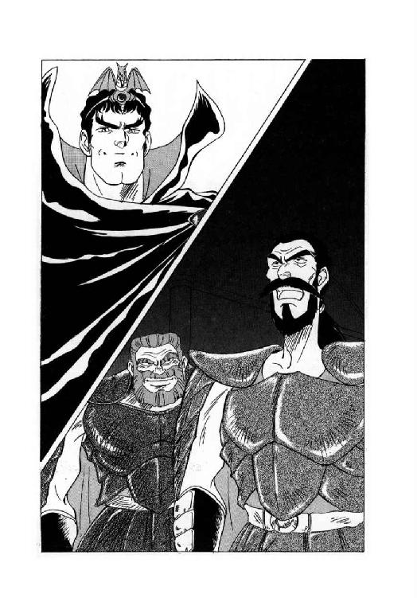
「飛行竜を召喚する魔道士ですと？」
「そうだが、何か心当たりでもあるのか？」
わずかに玉座から身を乗り出して、黒竜帝が訊ねる。
「大北征の途上で、そのような魔道士に遭遇した事があるのか？」
「え、えーと、その......」
中年の、あまり風采の上がらない将軍は、躊躇気味にもごもごと口籠った。するといきなり若い皇帝の口から、まさに獅子吼と表現するのがふさわしい、強烈な一喝が放たれる。
「何をためらうか！ 速やかに答えよ！ 余の下命である！」
「は、ははーっ」
皇帝の凄まじい気合に打たれ、マセクス・イザ将軍は、思わず腰砕けになって平伏する。仮にも帝国の将軍たる者が、何と無様な、と、傍の老将軍グラ・ゴルンが露骨に顔を顰めるが、叱咜された本人の方はそれどころではない。まるで審問に引き出された重罪人のような態度で、マセクス・イザは床に額を擦りつけ、全身をぶるぶると震わせながら許しを乞う。
「ももも、申し訳ございません、陛下、ど、どうか、どうか御許しを......」
「許すも許さぬもない。余は、そちの罪を問おうとしているのではないのだからな」
一転して、普段と変わらぬ穏やかで鷹揚な調子で、黒竜帝は恐怖と戦慄で身動きもできない将軍に声をかける。
「そちはただ、飛行竜を召喚する魔道士に関しての心当たりを、包み隠さず正直に述べてくれれば良い。わかったか、マサクセ、いや、マクセス、ではない、マクスセ......」
「マセクス・イザ将軍でございます」
玉座の傍に控えた書記官がすかさず囁き、黒竜帝は泰然とした表情でうなずいた。
「うむ。とにかく、そういうことだ。マセ......将軍。栄光ある帝国の将軍らしく、堂々と立って報告を行うが良いぞ」
「は、ははーっ」
腹の底から絞り出すような、苦しげな声で返答すると、マセクス・イザ将軍はいかにも大儀そうによろよろと立ち上がった。そして、蒼白な顔を俯き加減にして、半分独言のような調子でぼそぼそと語り始める。
「あれは、そう、エリオン攻略戦の最終段階でした。臣の元に、エリオンの魔女テオドラに恨みを抱く者という触れ込みで、一人の魔道士が訪問して来たのです。むろん、ただやって来たわけではなく、しかるべき帝国貴族の紹介があったのですが、それにしても臣としては魔道士などと関与するのは、当然ながら躊躇いたしました。しかし、陛下も御存知の通り、当時臣の率いる軍団は、テオドラの邪悪な魔力をなかなか打ち破ることができず、極めて苦しい戦闘を強いられていたのです。そこへ、テオドラの魔力を封じる事のできる偉大な魔道士が、味方をしようと持ちかけて来たものですから、臣もつい、我が身の名誉よりも兵士の苦境を救う事が重要なのではないかと判断いたしまして、その魔道士と会ってみる事に致しました。いや、後になってよくよく考えてみれば、この判断は一時の気の迷いだったとしか言いようがないのですが、それでもその時は、正直なところ藁にもすがりたい心境で......」
「ええい！ 説明がくどいぞ、マセクス・イザ！」
マセクス・イザ将軍の自己弁護をまじえたくどくどしい説明に、黒竜帝より先に、老将グラ・ゴルンが怒声を発した。
「要するに、その、貴様の元にやって来た魔道士が、飛行竜を召喚したのだなっ！ 貴様は結局、その魔道士にまんまと欺かれたのだろうっ！ 違うかっ？」
「結論としてはそうなのだが、しかし、事情はそれほど簡単ではない」
さすがに多少むっとした表情で、マセクス・イザは老将軍に言い返す。
「その魔道士は、ギルバート・エゼンと名乗っていたのだが、途中までは確かに、我が軍団の味方をしていたのだ。彼は、我が軍団の兵士を威圧していたテオドラの巨大な幻影を消し、そのおかげで兵士の士気は上がり、最後の総攻撃が可能になった。ところが総攻撃の途中で唐突に、お主の軍団をも敗走させたリムズベルの大怪獣が現れたのだ」
「つまり、その、何とか言う魔道士は、そちの軍団をいったん高揚させておいて、大怪獣と遭遇させ、結果的に死地に追いやったというわけなのか？」
言い争う二人の将軍をじっと見やっていた黒竜帝が、ここで、わずかに眉を寄せてマセクス・イザに訊ねる。下問を受けた将軍は、慌てて皇帝陛下の方に向き直って奏上する。
「はあ、まあ、その、客観的に申し上げれば、死地と称するほど絶望的な状況ではなかったように思われます。現に臣は、かなり苦労は致しましたが、最終的には軍団の大半をまとめて、バードラの砦まで撤収することができたわけですから。ただ、いったん高揚した分だけ士気の低下は深刻で、一時は全軍が恐慌を起こし、完全な総崩れ状態になりましたが」
「ふん」
それは貴様の統率力不足が原因だろうが、と、口に出そうになるのを、老将軍はかろうじて押さえた。一方、黒竜帝は、やや不審そうな表情で首を傾げると、更に重ねて下問する。
「で、リムズベルの大怪獣と遭遇して、そちの軍団が総崩れになった後、その魔道士はどうしたのだ？ 行方をくらませたのか？ それとも、敗走するそちの軍団に追い討ちをかけて来たのか？」
「いえ、それが、どうも、大怪獣の出現は彼にとっても意外だったようで、少なくとも臣の見るところでは、魔道士は暫時呆然としていたようです。しかしその後、彼は急に自信を取り戻しまして、リムズベルの大怪獣を斃して見せると臣に広言いたしました。それから魔道士は、空中から大量の飛行竜を召喚し、リムズベルの大怪獣に挑んだのです」
「おい、ちょっと待て、マセクス・イザ。口先だけではなく実際に、魔道士がリムズベルの大怪獣に挑んだのか？ そいつらは、同盟者ではなかったのか？」
グラ・ゴルン将軍が、半分あっけにとられたような口調で訊ねる。するとマセクス・イザ将軍は、陰気な表情で首を振った。
「あの戦闘が芝居だったかどうか、それはわからん。しかし少なくとも、魔道士ギルバート・エゼンが飛行竜を召喚して、リムズベルの大怪獣に挑んだのは確かだ。もっとも、大怪獣の凄まじい咆哮を受けて、飛行竜はすべて粉砕されてしまったが」
「ログリアンの港を一声で潰したという、大怪獣の咆哮か」
その一瞬、老将軍も思わず相手と同様に陰気な表情になって唸った。
「儂はまだ実際には、見た事はないが......」
「凄い威力だ。想像を絶する。あれが、兵たちに直接向けられなかったのは、僥倖としか言いようがない。その件については、皇帝陛下には御報告申し上げてあるはずですが」
やや口早に言いながら、将軍は黒竜帝の玉座をちらっと見上げた。すると皇帝は、傍の書記官に向かって小声で訊ねる。
「記録があるか？」
「はい、一応は。マセクス・イザ将軍が北方から帝都に召還された時、御前で述べた報告の中に『リムズベルの大怪獣の咆哮には、山を砕き谷を埋める怖るべき威力があり、臣はそれを実際に見ました』という言葉が記録されております。ただし、飛行竜や魔道士については、将軍は何も述べておりません」
健忘症の黒竜帝に代わって、あらゆる事項を記録している書記官が、即座にひそひそと囁き返す。その返答を聞いて若い皇帝は鷹揚にうなずき、よく鍛えられた鋼鉄に似た色の瞳を将軍へと向ける。
「うむ。大怪獣の咆哮に凄まじい破壊力がある、という報告は、確かに記録されておる。しかし、その咆哮で飛行竜の大群が粉砕されたという事実は、初めて聞くぞ」
「お、畏れ入ります」
今度は土下座はしなかったが、マセクス・イザは恐縮しきった表情で顔を伏せた。そこへ黒竜帝が、穏やかな口調で訊ねる。
「で、大怪獣の咆哮で飛行竜を粉砕された後、魔道士はどうなったのか？」
「それは、えー、その、術を打ち破られた衝撃のためか、魔道士は一時的に虚脱状態になっていたようです。臣は撤収に当たって彼を同行しようとしたのですが、彼を紹介した帝国貴族の配下が、いずこかへ連れ去ったらしく、行方がわからなくなってしまいました」
将軍は顔を伏せたまま、多少つかえ気味に返答する。すると皇帝が、間合いをおかずに続けて訊ねる。
「ところで、そちに魔道士を紹介した帝国貴族とは、誰だ？」
「そ、それは......」
下を向いた顔を盛大に引き攣らせて、ぽたぽた脂汗を垂らしながら、マセクス・イザ将軍は苦しげに絶句する。これは再び、陛下の獅子吼が出るぞ、と、グラ・ゴルン将軍も一瞬、身体を強張らせた。
ところが黒竜帝は意外にも莞爾と微笑し、怯えきった将軍に悠然と声をかけた。
「言えぬか。しかし、そちが言わずとも、既に余には見当がついておる」
「へ、陛下......」
マセクス・イザ将軍は思わず、蒼白な顔を上げる。彼にとっては、若い皇帝のすべてを見通したような穏やかな口調が、一喝されるよりも遥かに怖ろしい。新皇帝陛下は武人としては優秀だが、単純でしかも健忘症だから、きっと先帝より扱い易いだろう、などと判断していた自分の甘さを、将軍は心底悔いていた。
そして黒竜帝は、威厳をこめてゆっくりと言葉を続ける。
「考えれば、誰にでもわかる事だ。帝国貴族の中で、他人に魔道士を紹介できるほど北方に詳しい者は、さほど多くはない。しかもその上、その者と関係があった事を口にするのが憚られる相手となれば、これはもはや言わずとも知れておる。それは、我らがこれより遠征に向かう当の目的地、カ......」
と、そこまで言ったところで、皇帝は不意に絶句した。そして、傍の書記官を見やって、ほんの少し情けなさそうに小声で訊ねる。
「済まぬ。今の今まで覚えていたのだが、口に出そうとした瞬間に忘れてしまった。余が遠征に行く先は、いったいどこであったかな？」
「カルバドクでございます」
毛筋ほども感情の動きを見せずに、ごく淡々と書記官が答える。そして黒竜帝は、再び威厳に満ちた鷹揚な表情に戻って、マセクス・イザ将軍に言い渡す。
「うむ。その、カルバドクであろう？ 違うかな？」
「御明察、誠に畏れ入りましてございます」
押し殺したような低い声で返答し、将軍は深々と頭を下げた。依然として顔色は蒼白だが、その表情からは怯えの色が薄れ、どこか開き直ったような沈着さが見える。
「臣は、エリオン攻略戦においてカルバドク侯の嫡男卿から魔道士を紹介され、その者を実際に使った事を認めます。しかし、これはあくまで、帝国に勝利をもたらすための便宜的手段でありました。カルバドク側の思惑はどうあれ、臣にはそれ以外の意図は全くなかったと、これは誓って申し上げます」
「それならば、なぜ、最初から事実をそのまま報告しなかったのだ？」
咎める調子ではなく、むしろ、どちらかと言えば憐れみを帯びた口調で、黒竜帝が静かに訊ねる。そして、相手が再び絶句するのを見やって、彼はすぐに言葉を継いだ。
「まあ、よい。そちの処遇は、追って沙汰する。それより、そちの説明を聞いた限りでは、カルバドクの嫡男卿がそちに紹介した魔道士は、最後まで帝国の味方として戦ったように思えるのだがな。それなのに、なぜ、そちは最終的に欺かれたと判断したのか？」
「それは、その、一つには、その魔道士があまりに自信ありげに大言壮語するので、臣も釣られて、つい過大な期待を抱いてしまったからだと思います。つまり、確かに彼は帝国のために働きはしましたが、言ったほどの働きはしなかった、と、いう事です」
そう言って、マセクス・イザ将軍は、顔面全体に滲み出している脂汗を、半ば意識せずに右手の袖で拭った。
「それから、カルバドク侯爵家に不審な動向が目立ち始めた頃、臣は、この魔道士の件について思い返しまして、いささか愕然といたしました。それまで臣は、最後は魔道士まで使ったにもかかわらず、エリオンを攻略できなかったと思っていたのですが、もしかすると、魔道士を使ったからこそ、エリオンを攻略できなかったのではないかと考え直してみたわけです。すると、その、具体的に根拠があるわけではないのですが、何か、まんまと陰謀に乗せられたような気がいたしまして......」
「なるほど。要するに、疑い始めれば限界がない、という事か」
納得した表情で、黒竜帝は悠然とうなずいた。
「まあ、実際にそちが欺かれたのかどうか、その真相を知る者はカルバドク侯自身か、嫡男卿の、えーと......」
「ミル・ユード卿でございますか」
「うむ、そうであった。その者以外にはあるまい。現在は無理だろうが、いずれはその者たちにも、何らかの形で真相を語って貰いたいものだな」
半分独言のような調子で呟くと、皇帝は、畏まる将軍に改めて視線を向ける。
「いずれにしろ、現在カルバドクの守備についている魔道士が、そちが以前に、えー、エリ、エリ......」
「エリオンでございますか」
「うむ。そのエリ、エリ......えーい、とにかく北方で紹介された者と同一人物である可能性は、かなり高いと思われる。いくらカルバノク、いや、カルバロク、ではない、カルバルク、だったかな？」
「カルバドクでございます」
「ああ、そうか。まあ、何であれ、いくら北方と縁の深い交易商人でも、飛行竜を大量召喚する魔道士を、二人も三人も抱えているとは思えないからな」
そう言って黒竜帝は、ふう、と、小さく吐息をついた。すると書記官が、皇帝の耳元にひそひそと囁きかける。
「陛下。畏れながら、どうも少しお疲れなのではないかと御拝察申し上げます。差し出がましいとは存じますが、暫時御休息なさった方がよろしいのではないでしょうか」
「そう見えるか。なるほど、確かにそうかも知れぬな」
わずかに苦笑して、若い皇帝はうなずいた。
「正直なところ、いろいろと憶測を重ねたためか、だいぶ頭脳が疲れた。本日の会議はこれまでとしよう」
小声で呟くと、黒竜帝は将軍たちに御前会議の終了を告げ、退出を命じる。だが、将軍たちが深々と頭を下げて背を向けた瞬間、その背後から、ちょっと慌てたような皇帝の声がかかった。
「おっと、待て待て、マ、マ、マ......ええと、とにかく、そこの将軍。最も肝心な事項を、訊くのを忘れていた」
「な、何でございましょうか？」
全身の血が凍りつくような思いで返答しながら、将軍はぎこちなく振り返る。すると黒竜帝は、悠然とした口調で訊ねた。
「飛行竜に対処するには、どうしたら良いのだ？ 飛行竜の戦闘を、実際に見ているのはそちだけなのだからな。何か良い思案があったら、進言して貰いたい」
「左様でございますな」
ここで役に立つ事が進言できるかどうかで、罪に問われるか名誉挽回できるかが決まる、と、マセクス・イザ将軍は懸命に記憶の底をひっかき回した。
「そう言えば、一つ心当たりがございます。先ほど申し上げました通り、飛行竜はリムズベルの大怪獣の咆哮で消し飛ばされたわけですが、その時、逃げたり避けたりする事が一切できませんでした。つまり、破壊される以前に、咆哮の大音響で既に金縛りになっていたのでございます。ですから、これはあくまで想像ですが、もしかすると飛行竜は大きな音が苦手なのかも知れません」
「ふむふむ、そうか。他には何か、ないかな？」
黒竜帝の無雑作な質問に対し、とにかく何か返答しようと、将軍は更に必死になって頭をひねる。
「他にと申しますと......えー、そうですな。これは飛行竜対策ではありませんが、怪物を召喚する魔道士と戦う場合、召喚された怪物への対処もさることながら、むしろ魔道士本人を斃す作戦をお考えになった方が上策かと存じます。苦心惨憺して怪物を発しても、魔道士が健在でいる限り、再び怪物を召喚されて苦労のやり直し、という事態になりかねません」
「うむうむ、なるほど。左様であるか」
鷹揚にうなずくと、黒竜帝は傍の書記官を見やる。
「この意見を、記録しておくように。そして、余が魔道士に対する作戦を考える時に、忘れず提言するようにせよ」
「心得ましてございます」
冷静な表情で、書記官がうなずく。何の根拠もあるわけではないが、これで何となく免罪されたような気になって、マセクス・イザ将軍は小さく吐息をついた。
と、ここまでしばらく黙っていた老将軍グラ・ゴルンが、真摯そのものの口調で黒竜帝に訊ねかける。
「ところで、畏れながら皇帝陛下にお訊ね申し上げたい。もしも万一、陸上船舶侯の情報が真実で、リムズベルの大怪獣がカルバドクを空にして帝都を急襲していたとすれば、陛下はいかが対処される御存念なのですか？」
「それについては、帝都に出した使者が戻った時に考える。さもなくば、帝都から新たな使者が来た時に」
これ以上はないぐらい堂々とした態度で、黒竜帝はきっぱりと言いきった。
「たとえ大怪獣に帝都を破壊されたとしても、その程度で潰れるダンバス帝国ではない。それよりも、余が動揺して、無意味に軍を右往左往させる方が、よほど問題だ。従って、今のところ、軍を進めてカルバドクを完全制圧する方針に変化はない」
「御意」
さすがは剛胆で知られた黒竜太子殿下、帝位に昇られても、御気性は少しもお変わりになっておらぬ、と、老将軍は言葉には出さずに呟いた。この御方を総指揮官に仰ぐ限り、相手があのくそいまいましいリムズベルの大怪獣であっても、帝国軍団に無様な敗退はあるまい。もしも武運つたなく敗れる時は、名誉ある壊滅になるだろう。
それならそれで悪くないかも知れん、と、グラ・ゴルン将軍は、若い皇帝をじっと注視しながら思った。
５
「ロナ補佐官！ 起きて下さい！ 帝国軍です！ 帝国軍が来ました！」
陸上海賊の襲撃から三日後の早朝、カルバドク侯爵邸内の、レイピア・ロナに割り当てられた部屋の扉を激しく叩きながら、伝令兵が大声で叫んだ。
「南の丘の陰から進出してきた軍勢を、監視兵が見つけました！ 魔道士の出撃をお願いします！」
「わかった！ すぐ行くわ！ あんたはついでに魔道士を起こして！」
衣類と戦闘防具を手早く身につけながら、女戦士は声をぴんと張って返答する。ついに、我が君が戻らないうちに、帝国軍が来てしまった。
「でも、来てしまったものは仕方がない。この上は、力の限り防ぐのみ！」
決意を秘めた調子で呟きながら、女戦士は扉を開けて廊下に飛びだす。見ると、若い伝令兵が隣の扉をどかどか叩きながら、幾分困惑の混じった声で喚いている。
「起きて下さい！ 魔道士の皆さん！ 帝国軍です！ 帝国軍の来襲です！ 頼むから起きて下さい！ 起きて下さいったらーっ！」
「あいつら......」
わずかに柳眉を寄せて、レイピアは扉の前に歩み寄った。そして、伝令兵を脇にどかせて、いきなり勢いよく扉を蹴り開く。
「こらーっ！ 起きろーっ！ 帝国軍よーっ！ 敵襲よーっ！ 肝心要の時に、いつまでものんびり寝てるんじゃなーいっ!!」
「な、何だい、レイピア？」
四つ並んだ寝台の一番手前から、ギルバート・エゼンが上体を起こし、寝惚けた顔で女戦士に訊ねる。
「こんなに早朝から、いったい、何が始まったんだ？」
「戦争が始まったのよ！ さあ、四の五の言わずに、起きて起きて！」
ぶっきらぼうな口調で言い放つと、女戦士はつかつかと二つ目の寝台に歩み寄った。そこには海栗召喚魔道士が、口をだらしなく半開きにして、涎まで垂らして寝こけている。
「こらっ！ 起きろっ！ 起きないとひどい目にあわせるわよっ！」
「かーっかーっ、くかーっ、かーっ」
女戦士の半分以上本気の恫喝をものともせず、魔道士は太平楽に鼾をかき続ける。もはや、こいつには実力行使あるのみ、と、彼女は即座に判断を下した。
「起きろ、このぼけーっ!!」
「わわわわわーっ！」
レイピアの気合が一閃したかと思うと、いったいどこをどうされたのか、魔道士の身体は寝台から空中に跳ね上がり、凄まじい勢いで顔面から床に叩きつけられた。べしっ、と不快な音がして、どうやら鼻が潰れたらしい。
「あ、あー痛て。いーきなり何をなさるんですか、レイピアさん」
さすがに目は覚めたらしく、魔道士は鼻を押さえてのろのろと起き上がりながら、憮然とした口調で抗議する。しかし女戦士は返事もしないで、三つ目の寝台に歩み寄る。
その寝台にはスミス・チョーサーが眠っているのだが、彼はチャーランに輪をかけて、いったん寝たらなかなか起きない体質をしている。チャーランならとにかく、ミスター・チョーサーをぶん投げるのはまずいかな、と、彼女は口には出さずに呟いた。今朝はどうやら晴天のようだし、むりやり晴天魔道士を起こす必要はないかも知れない。
ところが意外にも、スミス・チョーサーは女戦士に声をかけられる前に、自分からむっくりと起き上がった。そして、例によってにこやかに笑いながら、例によって思わず力が抜けるような駄洒落を飛ばす。
「いやー、はっはっはっはっはっはっはっは。レイピアさん、おはよーございます。今日は空も晴れていて、良い朝ですねー。良い朝の、こりゃさ、なんちゃって」
「......良い朝かどうかは知らないけど、とにかく、帝国軍が進撃して来たわ。みんな、すぐに身支度を整えて。出撃よ」
柳眉を寄せて額を押さえながら、女戦士は事務的な口調で宣告した。すると晴天魔道士が、寝台から降りながらにこやかに笑ってうなずく。
「おやおや、そうですか。とうとう帝国軍が攻めてきましたか。そうすると、預かった魔道具が早速役に立ちますね。この魔道具を使えば、相手も困る、なんちゃって」
「預かった魔道具？」
最後の駄洒落は聞かなかった事にして、女戦士が訊ねかける。すると魔道士は、平然とした調子で驚くべき返答をした。
「いやー、実はですね。昨夜、お師匠様がいきなり目覚めまして、その時、私に、魔道具を預けられたんですよ」
「大ザシャム尊師が、目覚めたのっ!?」
女戦士は切れ長の目を大きく見開き、四つめの寝台に視線を向けた。そこには、伝説の大魔道士ザシャムを自称する不思議な老人が、嫡男卿たちが帝都に旅立った日以来、食事も排泄もせずに昏々と眠り続けている。
この老人が本当に伝説の大魔道士なのか、レイピアはどうも今一つ信じられないのだが、とにかく斬魔獣剣を強化し、魔獣隠身冠を作り、鮫鷲獅子を使い魔にしているわけだから、尋常な老人ではないのは間違いない。そして、もしも老人が目覚めたら、カルバドク防衛のために何か助力程度の事はしてくれるのではないか、と、彼女も多少は期待をしている。
しかし、駄洒落の才能を認められて老人の弟子になっているスミス・チョーサーは、にこやかに笑いながら首を横に振った。
「いやー、それがですね。お師匠様は私に魔道具を預けると、もう少し寝るぞ、と、おっしゃって、たちまち再び御休眠になってしまったんですよ。申し訳ないですけれども、おや、済みません、なんちゃって」
「......それで、あなたが預かった魔道具というのは、いったい何なの？」
あ、頭痛い、と、思わず捻ってしまったものの、この人物に文句を言っても始まらない。女戦士は、とにかく会話を建設的な方向に進めようと、額を押さえながら質問する。すると晴天魔道士は、まったく屈託のない笑顔でうなずいた。
「それがですね。私はお師匠様に、先日の陸上船の話をしたんですよ。先日は幸い現れませんでしたけれど、ミスター・ファンキー・ボーンが、もしかすると再び出現するかも知れない。そうすると、私たちの呪文は、あの人の持っている『言霊狩りの書』に吸収されて、全部無効になってしまう。何か対策はないでしょうか、と、お訊ねしたわけです。するとお師匠様は、『言霊狩りの書』に対抗できるだけの魔道具はちょっと持ちあわせていないが、ファンキー・ボーンがいるかどうかを調べる事ならできる、と、おっしゃいまして、私にこれを渡されたわけです」
そう言って、チョーサーは寝台の枕元から、片掌に乗る程度の小さな水晶を取りあげた。わずかに紫がかった半透明の球の内部で、黄色い光点が二つ、赤い光点と緑の光点、それに桃色と金色の光点がそれぞれ一つずつ輝いている。
「何なの、これ？」
「えーと、お師匠様の説明によればですね、この水晶球は、魔道士探知用の魔道具なんだそうです。球の位置から一日旅程ぐらいの範囲内に、死霊術師がいれば白、観相術師なら青、召喚術師が黄色、力素術師は赤、移送術師は緑、変形術師は橙、心理術師は桃色の光点が、人数分だけ出るわけです。ちなみに、この金色の光点は、お師匠様御本人を示すんだそうです。お師匠様は、いろいろな能力が複合している魔道士なので、特別な色にしておかないと支障があります、なんちゃって」
どーしよーもない駄洒落をまじえながら、晴天魔道士は得々と魔道具の説明をする。
「そういうわけで、この二つの黄色い光点は、ミスター・ギルバート・エゼンと、ミスター・アチャラカ・スチャラカ・チャーラン・ポーランを示すわけです。ミスター・ファンキー・ボーンも召喚術師ですから、黄色い光点が三つに増えたら危ない。これが本当の、黄三が悪い、なんちゃって」
「......あら？ だけど、おかしいじゃない？ この赤い光点はミスター・チョーサーでしょうけど、それ以外に、心理術師と移送術師が一人ずつ、カルバドク付近に存在している事になるわ」
そう呟くと、女戦士は不審そうな表情で首を傾げる。
「どっちか片方は、侯爵夫人かも知れないわね。あの方は、魔道都市出身だから。でも、二人というのは、どういう事かしら？」
もしかして、未知の魔道士が帝国軍に協力してるんじゃないでしょうね、と、レイピアはわずかに柳眉を寄せた。まさかとは思うが、陸上海賊に協力しているファンキー・ボーンの例もあるし、彼女自身、飛行竜召喚魔道士を帝国軍のために働かせた前歴がある。絶対にありえない、とは言いきれない。
「もしも、この魔道士が帝国側の人間だったら、厄介な事になるかも知れないわね」
水晶球の内部で輝く微細な光点を琥珀色の目で見据え、女戦士は小さくぼそりと呟いた。するといきなり彼女の背後で、鼻をぷくっと腫れ上がらせた無責任海栗召喚魔道士が、目いっぱい偉そーに哄笑を始める。
「わーははははははははははは。大丈夫、大丈夫、心配なーい。たとえ蛮人帝国に味方する不埒者の魔道士が存在しても、そーれは下っ端、大した魔道能力かを持たない小者に過ぎません。魔道都市を代表する召喚術師である我が学友ギルバート・エゼン、及びこの私の敵では、とーてーありえませんな。わーはは、わーはは、わーははははははははははは」
「おや、これは頼もしい発言ですね。ミスター・ポーラン」
にこやかな笑顔で、晴天魔道士が見るからに太平楽にうなずく。しかし、続く彼の質問は、意識してかどうかは知らないが、なかなか鋭い代物だった。
「ところで、その発言の根拠は何ですか？」
「根拠？ ふっふっふっふっふ、そーんなものは、いまさら言うまでもなーいではありませんか」
偉そーに笑いながら、無責任魔道士はえっへんと胸を張る。その無様に脹れた鼻に、女戦士は白けきった視線を向けた。また、どーせこの馬鹿の事だから、根拠など言うまでもないから言わない、とか、下らない詭弁を抜かすつもりに違いない。
ところが、彼女にとっては意外にも、チャーラン・ポーランはいかにも自信たっぷりの態度で、自説の根拠を滔々と弁じ立て始めた。
「いーですか、ミスター・チョーサー。こー見えても私は魔道都市最強の情報中継業者で、しかも、正確かつ迅速な魔道士情報で定評のある『でいりい・あるたいお』の編集長なーのですぞ。そーの私が、強力な魔道能力を備えた魔道士の動向を、常にきっちり把握しておくのは、いわば生業の一部、職業的常識、当然以前の生活必需行動ではあーりませんか」
「はー、そーなんですか。それはちーとも知りませんでした」
思わず気の抜けるような調子で、晴天魔道士はにこやかに応じる。
「どーも私は、自分の趣味に適合する女性に関する情報を除けば、あんまり情報には関心を持たない性格らしくて。商売をやっている以上、そういう態度では損をするぞと、前々から忠告されてはいるんですけどね。ほら、よく言うでしょう？ 情報はとっても重宝する、なんちゃって」
「うぐぐぐぐぐぐ......と、と、とーにかくですね」
駄洒落直撃の衝撃に少なからず動揺したものの、何とか体勢を立て直し、情報屋魔道士は再び熱弁を振るう。
「何をさておいても、強力な魔道士の動向については、私の情報網は完にして壁、まーさに右にも左にも匹敵する者がなーい。そーしてその私が、絶対の自信を持って断言する！ 現在、魔道都市から外に出ている魔道士の中には、四級以上の等級を持つ強力な移送術師及び心理術師は一人もいなーい！ ま、エリオンのテオドラ王女が移送術師及び心理術師の能力を持ってはいるが、彼女は複合型魔道士だから、大ザシャム尊師同様、単純な緑色や桃色の光点では表示されない。うーむ、まさに完璧な論証であることだよ、えっへん」
いったい何が完璧なんだか、そもそも論証になってるのかどーかも目いっぱい怪しいが、とにかくチャーラン・ポーランは、自信たっぷりの態度で胸を張る。するとそこへ、駄洒落魔道士がにこやかに笑いながら口を挟んだ。
「なーるほど。さすが『でいりい・あるたいお』の編集長だけあって、魔道都市の出入りは、把握してあるたいお、なんちゃって」
「うぐぐぐぐぐぐ......」
この、まさにどーしよーもない痛恨の駄洒落を受け、直撃された本人はもちろん、傍の連中まで、額を押さえてころころとこけまくる。だが、扉が開いて以降、ずーっと廊下で呆然としていた伝令兵には、この一撃は一種の衝撃療法になったらしい。彼はいきなり我に返った表情になって、女戦士に向かって切実な声を張り上げる。
「ロナ補佐官！ お願いですから、急いで下さい！ 帝国軍が、既に見えるところまで来ているのを、お忘れなく！」
「そ、そうだった......」
魔道士漫才なんかに付き合っていられる場合じゃない、と、女戦士はぷるぷると頭を左右に振りながら呻く。正体不明の魔道士に関する懸念も、とりあえずは後回しにしなくてはならない。今は文字通り、一刻を争う局面なんだ。
「とにかく、全員、出撃するわよ！」
６
「うっ......」
物見台に上がって南を見た瞬間、レイピア・ロナの顔から血の気が引いた。
「さすがに凄いわね......」
「お、おい、レイピア。あれが全部、敵軍かい？」
彼女に続いて上がって来たギルバート・エゼンが、驚くというより、むしろ呆れたような声を出す。
「冗談抜きに、大地を埋め尽くしてるじゃないか。こうなると、もう、人間の軍隊って感じがしないな。鼠か蟻か、さもなきゃスライムの大移動みたいな雰囲気だ」
「......これが総勢十五万の軍団なのね」
半分途方に暮れたような表情で、女戦士が呟く。確かに覚悟はしていたが、これ程までに圧倒的とは思わなかった。
カルバドク南方丘陵地帯の陰から出現した帝国軍の前衛部隊は、街道を中心に大きく左右に散開し、都市を半包囲するような陣形で北進して来る。普通、そういう陣形を取ったら、包囲網自体は比較的薄くなるはずだが、後から後から押し寄せる後続部隊が、ほとんど間隔なく前衛の後を埋めてゆく。前進速度はそれほど速くないが、どんな障害でも阻止できないと思わせる力強さに満ち満ちている。
これこそが本当の人海戦術だわ、と、女戦士は冷たい戦慄と共に呻いた。もたもたしていたら、都市の一つぐらい、あっと言う間に兵士の怒濤に吞まれて消滅してしまう。いや、それ以前に、接近して来る敵の迫力に守備兵が恐慌を起こして、勝手に降伏しかねない。
彼女は、多少上擦り気味の声で、飛行竜召喚魔道士に向かって叫んだ。
「ギルバート！ 黄金飛行竜を、思いっきり派手に、大量に召喚して！ それ以外に、帝国軍の迫力に対抗する手段がないわ！」
「わかった。思いっきり派手に、大量に、だな」
通常なら気障っぽくふっ、と、笑うところだが、圧倒的大軍を目の前にしているためか、それとも女戦士の戦慄が伝染したか、さすがのギルバートも緊張した表情でうなずく。そして彼は、傍の晴天魔道士に真面目な口調で訊ねた。
「ミスター・チョーサー、水晶球に変化はないね？」
「特にないようですね。光点の数、種類とも相変わらずです」
にこやかに笑いながら、スミス・チョーサーが返答する。この緊迫した状況下でも、彼だけは泰然と微笑して、まったく動揺を見せない。もしかすると、これはこれで意外に大人物なのかも知れないな、と、女戦士はふと思った。まあ、単に泰然とした地顔をしてるとゆーだけの可能性の方が高いけど。
と、飛行竜召喚魔道士が、ちょっと神経質な調子で、独言のように呟いた。
「よし。それでは少なくとも、師範殿は近くにいないわけだな。ならば、とりあえず、これを好機と見て、総力召喚を試みよう」
何しろ、この期に及んで失敗したら、とうてい冗談じゃ済まないからな、と、これは口の中でもごもごと続けながら、彼は無意識に左手で前髪を払う。そして、そのまま両腕を高々と天に差し上げると、これ以上はできないくらい正確に黄金飛行竜大量召喚の呪文を唱え、最後に掛値なしに目いっぱい気合を籠めて大声で叫ぶ。
「出でよ、黄金飛行竜！ 群雲の、いや、雪崩の如く!!」
「おおーっ！」
その瞬間、よく晴れた天空いっぱいに凄まじい大音響が轟き、カルバドク勢も、帝国軍も、思わず一斉に頭上を振り仰いだ。そして、彼らが見上げると同時に、天頂付近の空間が大きく裂け、まさしく雪崩が谷に突進していくような勢いで、無数の黄金飛行竜が降り注ぐように出現する。その数は、前回試みた群雲召喚の数倍、いや、もしかすると数十倍に及ぶかも知れない。
「むむむむむむーっ！ これはっ！ これはっ！ こーれは凄いっ！」
両腕を組み、くわっと両眼を見開いて、海栗召喚魔道士が感嘆の唸りを上げる。
「この、この、こーの圧倒的な召喚量！ 黄金飛行竜をこれ程までに召喚するとは、まさに、召喚術の精華にして真髄！ さすがの私も、こーれには完全に感服つかまつったと、潔く脱帽せーずばなるまい！」
「やるじゃない、ギルバート......」
他のカルバドク兵や帝国兵たちと同様、半ば呆然と天空を見上げながら、女戦士が小さく呟いた。
「これなら充分、帝国軍に対抗できるわ。だけど、正直言って、あんたがこれほど強力な魔道士だとは思わなかった......」
「ふっ、単純に召喚個体の数量を増やすだけなら、実は、それほど難しくはない」
魔道士が、気取った口調で返答する。だが、その声が妙に弱々しい事に気付いて、女戦士は慌てて彼に琥珀色の目を向けた。
「ギルバート、あんた、どうしたの？ 何だか、ふらついてるんじゃない？」
「技術的には難しくはないんだが、問題点は他にある。その一つは、体力の消耗だ」
ふう、と、吐息をついて、魔道士はふらっと昏倒しかかる。じょ、冗談じゃない、と、彼女は急いで彼の身体を支え、小さいが切迫した声で囁いた。
「ちょっと、ちょっと、待ってよ！ 今、あんたが倒れたら、この黄金飛行竜、全部一度に消えちゃうんでしょう!? そんな事態になったら、それこそ元も子も無いじゃない！」
「大丈夫。意識を保てるだけの体力は、ちゃんと残してある。何か、計算違いさえしていなければ......」
ぽそぽそと返答しながら、魔道士は再び、ふう、と、吐息をつく。こんな状態、迂闊に他人に見られたらまずいじゃないの、と、女戦士は狼狽気味に左右を見回した。しかし、幸いと言うか何と言うか、周囲にいる者は、二人の魔道士を含めて全員天を見上げており、召喚者の状態に気付いたのは、すぐ傍にいた彼女だけらしい。
実際、それも当然で、その時天空では、千頭に及ぶ黄金飛行竜の乱舞という、滅多な事では見られない絢爛豪華な光景が展開されていたのである。
既に天頂に開いた亀裂は閉じ、黄金飛行竜雪崩は止まっている。しかし、異空間からあふれ出た黄金飛行竜たちは、甲高い声で啼きかわしながら、縦横に天空を乱舞していた。整然とした編隊は組んでいないが、むしろその分、陽光の反射が千変万化の煌きを見せ、まるで夢幻のように妖しく美しい。カルバドク勢も、帝国兵も、ほとんどが酔ったような表情になって、現実とは思えないほど壮麗な光輝の乱舞に、暫時うっとりと見惚れている。
そして、帝国軍十五万の総帥、黒竜帝ノワール・ダンバスも、その例外ではなかった。
「ううむ、見事......」
移動本陣黒竜戦車の頂上に据えられている望楼の玉座から、黄金飛行竜が自由奔放に乱舞する天空を見渡し、黒竜帝は純粋に感動した表情で唸る。
「まさか、これほどとは思わなかったぞ」
陸上船舶侯から報告を受け、マセクス・イザ将軍の体験談を聞き、彼は彼なりに、飛行竜攻撃に対していろいろ想像をしてはいた。しかし、これ程までに雄大で、しかも華麗な光景が展開されようとは、全く完全に意表をつかれたと言わざるを得ない。いや、これぞまさしく敵ながらあっぱれ、あっぱれ、誉めてつかわす、と、若い皇帝は何回も悠然とうなずいた。
とはいうものの、彼は武勇を至上価値とするダンバス帝国の皇帝である。戦場を目の前にしている以上、どれほど美しく不思議な光景であろうと、延々と心を奪われていられるほど夢想的な精神構造はしていない。
「うむ。どうやら、あの黄金の怪獣、ひたすらに飛び回っているばかりで、実際に攻撃して来る気配はないと見たぞ」
天空を見上げていた黒竜帝が、不意に片頰に微かな苦笑を浮かべて呟く。
「余の軍団を相手に、威嚇のつもりか。それとも、何か突発事故でもあったか。まあ、いずれにしても、攻撃してこないうちは気にする必要はなかろう」
鷹揚な調子で言い放つと、皇帝は玉座の下方に控える直衛兵に声をかけた。
「伝令を出し、全軍に前進を再開させよ。天空の怪物に注意を払いつつ、あくまで通常の歩速で所定の配置に向かうよう命じるのだ」
「御意！」
竜の頭を形どった漆黒の兜をかぶった黒竜帝直衛兵は、恭しく一礼すると、黒竜戦車の更に下方に控えている直属伝令兵たちに命令を伝える。これらの黒竜帝直属伝令兵たちも、大半は黄金飛行竜の乱舞に見とれていたが、ひとたび命令が下った瞬間に、脇目も振らずにそれぞれが担当する部隊へと疾走する。
そして間もなく、黒竜帝の命令が再前線の部隊まで行き渡り、総勢十五万の帝国軍は再び整然と前進を開始する。よし、これで良い、と、皇帝は黒竜戦車の望楼から、満足げに麾下の軍団を見渡した。
何万、何十万を数える大軍であろうとも、指揮官である余の命令によって、少人数の部隊と全く同様に、いや、それどころか余自身の身体と同様に、完全に意のままに動かすことができなくてはならぬ、と、いうのが、太子時代から一貫した黒竜帝の軍隊指揮方針である。そのため彼は、伝令兵を特に重視して直属部隊とし、命令が迅速かつ正確に伝わるよう、徹底的に訓練を施している。
今、予想外に大規模な飛行竜の出現があったにもかかわらず、十五万の軍団が一時停止する以上の混乱を起こさず、しかも、実に円滑に進撃を再開する事ができた。この事実は、軍団全体の練度及び士気の高さを示すと同時に、余の指揮方針が浸透している証明である、と、彼は解釈したのである。
しかし、黒竜帝の満悦した表情は、次の瞬間、鋭く変貎した。優秀な戦士だけが備える天性の直感力に導かれ、彼は天空に視線を向け、相変わらず縦横に乱舞している黄金飛行竜の大群を見据える。
「むむ。攻撃の気配か。来るか、黄金の怪物どもめ」
この怪物の名称は、確か、ワイ、何とかといったな、と、ちらりと脳裏に浮かんだが、今はそんな瑣末事はどうでもいい。黒竜帝は玉座からすっくと立ち上がり、直衛兵に向かって大声で命じた。
「伝令を出し、全軍を停止させ、天空の怪物に対して備えるよう命じよ！ この命令は、至急である！」
「御意！」
一礼する間も惜しいような態度で、直衛兵が伝令兵に命令を伝え、次の瞬間、命令を受けた伝令兵が全速で四方に疾走する。その間、黒竜帝は玉座の前に仁王立ちになったまま、天空の黄金飛行竜を見上げている。
そして、今までほとんど無秩序だった黄金飛行竜の群れが、急速に編隊を整えるのを認め、若い皇帝は小さく呟いた。
「備えが間に合えば良いが......」
７
「飛行竜をひたすら大量召喚した場合の問題点は、体力の消耗の他に、もう一つある」
ほとんど俯せにへたりこむような体勢で黄金飛行竜の背に乗ったギルバート・エゼンが、こちらは颯爽と黄金飛行竜に騎乗して傍を飛んでいるレイピア・ロナに向かって、ぽそぽそと大儀そうに説明する。
「それは、飛行竜制御力の拡散なんだ。これだけの数の黄金飛行竜を召喚してしまった以上、その群れの中央に位置を占めないと、全体をうまく制御する事ができない。少なくとも、急降下地上攻撃のような高度な制御を行なうつもりなら、とにかく可能な限り距離を詰める事が必要なんだ」
「ええ。それはもう、充分承知してるわ」
だからこうして、墜落する危険を敢えて無視して、黄金飛行竜の背中から空中指揮を取ることにしたんじゃないの、と、女戦士は小さく苦笑した。実は、彼が飛行竜制御力の拡散と、その対応策について説明するのを、彼女は既に物見台の上で一回、空中に飛び立ってから三回、計四回にわたって聞いている。
通常の彼女だったら、同じ話を何回繰り返すつもりなのよ、この馬鹿！ などと言って、とっくの昔に叱りつけているところだろう。しかし、今度ばかりは、彼が何回同じ説明を繰り返そうが、彼女は大人しく付き合うつもりでいる。黄金飛行竜大量雪崩召喚という破天荒な大技を炸裂させた飛行竜召喚魔道士が、疲労のためにぼやけそうになる意識を、彼女に話しかける行為によって懸命につなぎ止めているのが、明白に察知できるからだ。
「頑張ってよ、ギルバート。今、あんたが崩壊したら、すべてが水の泡なんだから」
女戦士は、声には出さずに、しかし切実な思いを込めて呟く。実際、彼女の命運も、カルバドク市の命運も、もちろん彼自身の命運も、飛行竜召喚魔道士がどこまで召喚術を維持できるか、その一点にかかっている。
もしも今、彼が意識を失ったら、黄金飛行竜は一斉に消え失せ、魔道士と女戦士は一緒に帝国軍の鼻先に墜落、カルバドク市は恐慌状態になって、そのまま陥落するだろう。また、彼が充分な制御力を発揮できず、地上の帝国軍を攻撃できなかったら、何のために大量の黄金飛行竜を召喚したのか、全く訳がわからなくなる。
「もしもそんな結果になったら、帝国軍の勝利を祝うために、大量の黄金飛行竜が天空に出現し、見事な乱舞を披露した、とでも伝承されるのかしら」
我ながら馬鹿馬鹿しい、とは思ったが、女戦士は思わず小さく口に出して呟いた。するとギルバートが、その言葉を小耳に挟んだらしく、制御力の説明を止めて、ちょっと怪訝そうにぽわぽわと訊ねる。
「はぁ？ 何だって？ 何が、誰の勝利を祝うんだ？」
「そうね。私たちのだったら、いいね」
何だか妙にしんみりとした口調で、女戦士が意味不明の返答をする。魔道士は、ますます怪訝そうに首を傾げていたが、やがて、不意に夢から覚めたような表情になり、黄金飛行竜の背に腕をついて上体をぐいと起こす。
「ここが制御点だ！ 感じるぞ、黄金飛行竜の群れ全体を、制御できる！」
「本当!?」
女戦士が、思わず興奮した声を出す。するとギルバートは、先刻までとはまるで別人のように、大きく力強くうなずいた。
「ああ、間違いない。他の事ならいざ知らず、飛行竜の召喚と制御に関しては、私の感覚は絶対だ。これなら大丈夫、自信がある。ふっ」
例によって左手で前髪を軽く払い、飛行竜召喚魔道士は、自信に満ちた気障っぽい微笑を浮かべる。ま、これが出るなら、当前は安心ね、と、多少苦笑気味ではあったが、女戦士も笑い返す。
「それじゃ、さっそく攻撃にかかりましょう。帝国軍は、また前進を始めたみたいだし」
「ちょっと待ってくれ。まずは、編隊を整えないとね」
いささかわざとらしいほど落ち着いた口調で告げると、魔道士はゆっくりと周囲を見回す。すると、それだけで、今まで全く勝手気ままに飛び回っていた千余体の黄金飛行竜が、急速に編隊を整えてゆく。群れ全体の制御を、彼が完全に掌中に収めたのは、どうやら間違いないらしい。
「ならば私は、地上の攻撃目標を定めておくわ」
魔道士に声をかけ、女戦士は黄金飛行竜の首越しに地上を見下ろした。眼下の大地は周囲一面悉く帝国兵で埋められ、まさしく人間の大海としか言いようがない。
その時まで気がつかなかったが、どうやら彼女たちの乗った黄金飛行竜は、制御点を求めて飛行しているうちに、いつの間にか帝国軍の鼻先どころか、ほぼ中枢近くまで進入してしまっていたらしい。すぐ目の前の地上を、噂に高い帝国軍移動大本営、黒竜戦車の魁偉な姿がゆっくりと進んでいくのを発見して、さすがの女戦士も思わず息を吞んだ。
「あそこに、この軍団の総指揮官、新皇帝ノワール・ダンバスがいるのね......」
総力で黒竜戦車を叩こうか、と、彼女は一瞬、半ば本能的に考えた。確かに黒竜戦車は、あらゆる意味で敵の中枢、うまく叩ければ全軍を一気に混乱に落としこめる。
しかし、レイピアはすぐに首を振った。黒竜戦車に直接攻撃をかけて、もしも皇帝を負傷させたり、殺したりしてしまったら、帝国軍を逆上させる危険性が高すぎる。十五万の帝国軍兵士が全員火の玉と化し、犠牲を厭わず一斉突撃して来たら、飛行竜をどう使おうと防ぎきれる道理がない。そして新皇帝には、確かにそれだけの人望がある。
それに、黒竜帝を戦死させたら最後、時間を稼いで最終的には帝国と講和する、という我が君の思惑が、完全に崩壊してしまう。そんな危険は絶対に冒せない、冒せるわけがない、と、彼女は意識せずに唇を軽く嚙む。
「そうなると、やっぱり目標は攻城兵器部隊。それに、兵糧輸送隊ね」
呟くと、女戦士は琥珀色の瞳を凝らし、地上を注意深く見渡した。すると、黒竜戦車よりもかなり前線寄り、彼女から見ても完全に背後になる位置に、かなりの数の攻城弩砲が配置されているのが目に入る。
「よし、まずはあれを叩こう！」
即座に決断して、女戦士は魔道士に声をかける。
「ギルバート！ 後方の、ちょっと右の方に、攻城弩砲隊がいるんだけど、確認できる？」
「どれどれ、えーと......」
魔道士はきょろきょろと地上を見回すと、すぐに心得顔でうなずいた。
「ああ、荷車に大型弩弓をくくりつけた不細工な兵器が、ごちゃごちゃと群れてるようだな。あれが攻撃目標なのかい？」
「ええ。それから、できるだけ攻城弩砲だけを潰してほしいの。あんまり兵士に被害を与えたくないんだけど、でも、難しいでしょうね」
ここまで敵が密集してちゃね、と、女戦士は軽く肩をすくめる。すると魔道士は、ふっと軽く笑って返答した。
「簡単な作業だ、とは言わないが、絶対不可能と言うほど困難でもなさそうだ。少し高度を下げて、目標に接近して制御を行なえば、何とかなると思う」
「なら、任せるわ」
女戦士がうなずくと、二人の乗った黄金飛行竜は、それぞれ小さく旋回を始めた。そして、その側方を、整然と編隊を組んだ百余体の黄金飛行竜が、速度を上げて追い抜いていく。その編隊を横目で見ながら、魔道士が小さく呟いた。
「一回の攻撃に使える個体数は、どうやらこの程度が限界だな。これ以上増やすと、さすがに制御が追いつかない」
「ねえ、ギルバート。数は絞ってもいいから、制御を優先してね」
ちょっと懸念気味の表情で、女戦士が声をかける。しかし、彼女の声が耳に入っているのかどうか、魔道士は視線を地上に移し、攻撃目標をじっと見据えたまま返答しない。そのまま暫時、緊張した沈黙の時が過ぎる。
そして、女戦士にはずいぶん長く感じられたが、実際にはほんの数秒後、魔道士の唇から鋭い気合が発せられた。
「よし、行けっ！」
「クエーッ!!」
甲高い咆哮を一斉に上げて、百余体の黄金飛行竜が、帝国軍の攻城弩砲部隊目がけて急降下をかける。すると不意に、その咆哮に呼応するかのように、地上からがんがんがんがんと凄まじい騒音が上がる。
「な、何だぁー!?」
思ってもいなかった敵の反応に、一瞬、魔道士の目が点になった。そのとたん、動揺のため制御が乱れたらしく、黄金飛行竜の編隊が目に見えてがたがたっと崩れる。
「しまった！ 戻れ！」
魔道士が狼狽した声で叫ぶのと、ここぞとばかりに地上から一斉に矢が放たれるのが、ほとんど同時だった。黄金飛行竜は、四肢と皮膜をばたばたと動かして反転上昇するが、その身体に矢がぷすぷすと突き刺さる。くえーっ、くえーっ、と悲痛な声で啼きかわしながら、何体もの黄金飛行竜が、よろめきながら地上へ墜ちる。
「お、おのれ、ふざけた真似を！」
日頃の能天気魔道士とは別人のような表情で、ギルバートが奥歯をぎりっと嚙み締める。召喚した飛行竜が斃されても、召喚者まで損傷が及ぶわけではないが、これはもう個人的名誉の問題だ。
「意表を突くだけの戦法が、何度も通用すると思うなよ！ 今度は、雑音なんぞは完全無視して、徹底的に叩き潰してやる！」
「ギルバート！ 弩砲だけよ！ 叩き潰すのは、攻城弩砲だけにして！」
こ、これはまずい、と、少々蒼ざめながら、女戦士が必死になって声を張り上げる。ここで魔道士が逆上して、帝国軍に大損害を与えてしまったら、その場はとにかく、後が怖い。少なくとも、我が君の計画は完全に崩壊する。
「腹が立つのはわかるけど、冷静になって！ この程度の損害で余裕を失うなんて、魔道都市最強の召喚術師らしくないわよ！」
「そ、そうかな？ まあ、確かにそうだな」
魔道都市最強の召喚術師、という言葉が効いたのか、ギルバートは一転して、ちょっとにやけた苦笑を浮かべた。
「大丈夫、私は充分に冷静だ。無い知恵を絞って必死に抵抗する蛮人を、むやみに虐殺するような蛮行はしないよ。とりあえず、武器を取り上げてやればいいわけだからね」
「そーね。とりあえず、そーゆー事ね」
通常なら、帝国は舐めてかかれる相手じゃないわよ、と、警告するところだが、今はとにかく錯覚でもいいから、彼に余裕を持って貰わないと困る。女戦士は曖昧な微笑を浮かべてうなずき、魔道士は例によって気障っぽく前髪を払う。
「ふっ。それでは蛮人帝国の諸君に、黄金飛行竜の真の力を披露するとしようか。行け！ 第二波攻撃隊！」
「クエーッ!!」
魔道士の命令に応じて、上空を旋回する黄金飛行竜の大群から、新たに百余体が分かれる。そして、再び整然と編隊を組み、攻城弩砲部隊に向かって急降下する。
「今度は絶対に、文句なしに成功させるぞ」
降下してゆく黄金飛行竜編隊を視線で追いながら、魔道士は、声には出さずに呟いた。
８
「うむ！ 効果あったぞ！」
帝国兵たちが一斉に手近の金属品を打ち鳴らすと、急降下してきた飛行竜が、突然ばらばらっと編隊を崩した。そこへ、待ち構えていた弓兵隊が矢を射かけるのを、黒竜戦車の望楼から見やって、若い皇帝は満足げに莞爾と笑う。
「あの怪物は、確かに騒音に弱いようだ。マサクス、ではない、マサセス、でもなかったな、マサクセサスセ、サシスセソ、でもなさそうだし......」
「マセクス・イザ将軍でございますか」
例に依って書記官が冷静な口調で囁きかけ、黒竜帝は苦笑混じりにうなずいた。
「そう、それだ。その将軍の進言が、役に立ったな」
このまま、飛行する怪物を順調に撃退できれば、すぐにでも進撃が再開できる。そして、その時こそ、この地に問題の大怪獣が存在するのかしないのか、嫌でも明確になるに違いない、と、彼は判断している。
しかし、飛行竜の第二波が襲ってきたとたん、黒竜帝は、自分の判断を大急ぎで修正しなくてはならない事に気がついた。
第二波の飛行竜は、がんがんと鳴り響く激しい騒音を完全に無視して、攻城弩砲隊に向かって一直線に急降下をかけてくる。そして、猛烈な火炎を吹きつけると、そのまま整然と編隊を組んだまま上空に戻っていく。むろん、弓兵隊は再び一斉に矢を射かけたが、命中した矢は数えるほどで、墜落した飛行竜は一体もいない。
そして、飛行竜が吐き出した火炎に直撃され、帝国軍の誇る攻城弩砲隊は、あっという間に文字通り火の車になってしまった。周囲の兵士たちが慌てて消火作業にかかるが、牽引用の牛羚羊を逃がすのが精一杯で、燃え上がる弩砲本体には迂闊に手がつけられない。
それでも砂をかけ、土をかけ、どうにかこうにか火を消し止めると、それを待っていたかのように、第三波の飛行竜が急降下して来る。そして、焼け残った弩砲や第二波攻撃を免れた弩砲に、容赦なく火炎を浴びせかける。
「ううむ。これはいかん！」
傍若無人に急降下攻撃を繰り返す飛行竜編隊を睨み据え、黒竜帝は一転して緊張した表情になって稔った。彼がこういう表情になる事態は、滅多にあることではない。
なぜ、不意に騒音戦術が効かなくなったのかはわからないが、とにかく現状のままでは、上空からの攻撃で、好き勝手に蹂躙されるばかりだ。もっとも、戦術に長けた黒竜帝の目には、敵がなぜか兵器のみを狙っており、少なくとも意図的には人間に攻撃を加えていないのが察知できたが、だからと言って放置しておいて良い状況ではない。
「それにしても、あの黄金の怪物、予想以上に手強いな」
弓兵隊が必死になって射かける無数の矢を、悠々と擦り抜けて急降下、上昇を繰り返す黄金飛行竜編隊を見やって、黒竜帝は低く呟く。飛行能力を備えた怪物が厄介な敵になるだろうとは予想できたが、まさかここまで高速かつ敏捷とは思わなかった。もしかしたら帝国は、とんでもない存在を相手にしてしまったのかも知れない、と、彼は一瞬、生涯これまで感じた経験のない、内臓が凍るような凄まじい戦慄を覚えた。
しかし、強敵を目前にして戦慄を覚えながら、自分を戦慄させるほどの敵を斃せば生涯の名誉になるぞ、と、本気で同時に考えるのが真のダンバス戦士である。そして黒竜帝こそは、まさに当代随一の典型的ダンバス戦士であった。
「確認したい。あの、何とか将軍は、騒音以外にもう一つ、飛行する怪物の弱点を挙げていたような気がする。それはいったい、何だったかな？」
真剣そのものの表情で、黒竜帝は秘書官に訊ねかける。すると秘書官は、通常と全く変わらない口調で、ごく淡々と返答した。
「あの怪物は、魔道士に召喚された存在でございます。そして、召喚者を斃せば、召喚された怪物は消滅いたします。ですから、飛行竜と戦うよりも、召喚者である魔道士を斃した方が上策でありましょう、と、マセクス・イザ将軍は進言いたしました」
「うむ。そうであったな」
うなずくと、黒竜帝は炯々と眼光を輝かせ、無数の黄金飛行竜が旋回する天空を見渡す。
「攻撃の気配は、天より来た。意志を持つ者は、天にいる」
呟きながら、若い皇帝は細心の注意を払って黄金飛行竜の動きを観察する。その目つきは、敵と対面した瞬間にその急所を見抜く、卓越した戦士の目にほかならない。
そして黒竜帝は、わずか数秒間の観察で、黄金飛行竜の運動が、どの場所を中心点としているか明確に見切った。しかも、更に目を凝らすと、その中心点付近に位置する飛行竜の背に、ちらりとではあるが人間らしき影が見える。
「あれか」
軽くうなずくと、黒竜帝は階下に控える直衛兵に向かって、鋭く命令を下した。
「余の弓矢を持て！」
「御意！」
一礼するが早いか、直衛兵は階段の横手に走り、臣大な鉄弓と矢筒を取り出す。そして身を屈め気味にして階段を駆け上がると、玉座の前に仁王立ちになっている皇帝陛下に向かって、恭しく差し出した。
「うむ」
鷹揚にうなずくと、黒竜帝は矢筒を肩にかけ、鉄弓をぐっと押し曲げて弦を張る。一見すると無雑作な動作に思えるが、実は、この弓を押し曲げて弦を張れる戦士は、帝国中を探しても十人いるかどうかという、とんでもない強弓なのである。
その、凄まじい威力を秘めた鉄弓に弦を張ると、黒竜帝は肩の矢筒から、太く長い鋼鉄の矢を取り出した。鏃の先端が二つに分かれ、三日月型の研ぎ澄まされた刃がつけられた、見るからに物騒な矢である。
「これならば、相手が怪物でも効果があろう」
呟くと、黒竜帝は左手に鉄弓、右手に矢を摑み、むんと両脚を踏ん張って天空を見上げる。そして、鉄弓を頭上に高々と掲げると、右手でゆっくりと弦を引く。滅多な戦士には弦も張れない強弓を、きりきりと引き絞る黒竜帝の腕に、捩り併せた太綱のような筋肉の束が、むくむくと凄まじいばかりに盛り上がる。
いや、腕だけではない。脚も、首も、顔面すらも、外から窺える彼の筋肉は、一つ残らず瘤のように隆々と脹れ上がっている。むろん、衣服や鎧に覆われた筋肉も、まず間違いなく緊張しきっているだろう。
そして、文字通り渾身の力を総動員して、黒竜帝は巨大な鉄弓を、ほとんど腕の長さの限界まで引き絞る。ぎぎぎぎぎぎぎと不気味な音を立てて歪む鋼鉄の弓を、人間離れした筋力で支え続けた若い皇帝は、その反発力が頂点に達した瞬間、すべての筋力と気合を籠めて矢を放った。
「たああっ！」
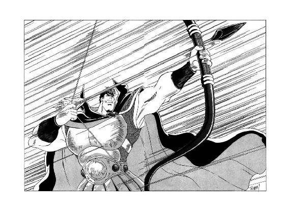
凄まじい気合とともに放たれた矢は、ぎゅうんと轟音を立てて一直線に飛び、常識ではとうてい考えられない速度と勢いを保持したまま、見事、標的となった黄金飛行竜の頸部に命中する。その瞬間、黄金飛行竜の首は三日月型の鏃にすっぱりと切り裂かれ、胴体から離れてすぽーんっとどこかへ飛んで行ってしまった。次の瞬間、その切り口から血液が勢いよく噴き出し、空中に撒布される。
一方、黄金飛行竜の首を刎ねとばした矢は、ほとんどその威力を失わず、思わず身をのけぞらせた搭乗者の鼻先を掠め去る。実際、もしもこの飛行竜に乗っていたのが魔道士だったら、まず間違いなく彼の首も、乗騎同様、胴体から離れて飛んで行ってしまっただろう。
しかし、これを幸いというべきか、黒竜帝が狙った黄金飛行竜に乗っていたのは、女戦士レイピア・ロナだった。鋭敏な戦士の感覚を備えた彼女は、黒竜戦車の望楼から尋常ならぬ気迫が向けられているのに気付いてはいたが、まさか、この高度まで矢が飛んで来ようとは思わない。えっー!? と思った時にはもう遅く、黄金飛行竜の首は見事に刎ねられ、危うく彼女自身の首まで飛ばされるところだった。
そして、自分の首はかろうじて保持したものの、空中では唯一の頼みの綱である黄金飛行竜の首を飛ばされては、乗っている人間も無事では済まない。ひえっ、と身を躱した次の瞬間、彼女は首なしの黄金飛行竜に乗ったまま、地上に向かって速やかに墜落する。
「わあっ！」
「レイピア！」
何が起こったのか、全く状況が摑めないまま、魔道士が狼狽した叫びを上げる。その声を耳にした瞬間、女戦士は不思議なほど冷静な心境になって、彼に向かって叫び返した。
「来ないで！ 私に構わず、地上攻撃を続けて！ 迂闊にこっちに来ると、あんたまで狙撃される！」
「お、おいおいおい!! いったい何が、どうなってるんだ!?」
混乱の極致のような状態で、魔道士は落下してゆく女戦士に向かって叫ぶ。彼には、彼女の乗っている黄金飛行竜が、首を失っている事すらわかっていない。
なぜ彼女の黄金飛行竜が反応しないのか、来ないでというのは何の意図か、狙撃というのは何の意味か、何が何だかわからないまま、半分以上恐慌状態になって、魔道士は女戦士を追おうとする。しかし、精神が不安定なためか、自分自身の乗った黄金飛行竜さえ正常に制御することができず、彼女との距離は、あっという間に開いてゆく。焦りに焦りながら、危機感だけを煽られて、魔道士は女戦士の名を連呼する。
「レイピア！ レイピア！」
「来ちゃ駄目！ 黒竜戦車に気をつけて！ 高度を上げないと、射落とされるわよ！」
彼にとっては理解不能な忠告をしながら、彼女の声が遠くなってゆく。ギルバートは、思いのままにならない黄金飛行竜を、ほとんど無意識のうちに拳で殴りつけながら、血を吐くような声で叫ぶ。
「今行く！ レイピア！ 死ぬな！ 死ぬんじゃない！」
「駄目！ 来ないで！ 私には構わないで！ そして、カルバドクをお願い！ お願い！ お願い！」
お願い、お願いと叫びながら、彼女の声が消えて行く。どう命じても高度を下げない黄金飛行竜の背で、ギルバート・エゼンは生涯初めて髪を無茶苦茶に搔き毟り、喉も裂けよとばかりに絶叫する。
「カルバドクなど、糞でも食らえ！ こんな戦争でお前が死ぬのなら、構うものか、カルバドクも、帝国も、魔道都市も、世界の全部が滅びてしまえ！ 魔道士ギルバート・エゼンも、さっさと消えてなくなってしまえ！」
何もかも消えてなくなれ、と、彼は本気で、天に向かって慟哭する。その瞬間、彼が乗っている個体を含め、すべての黄金飛行竜が消滅した。
９
「どうやら、墜落死はしないで済むかしら......」
背後で絶叫していたギルバートの声も消え、耳元に聞こえるのは唸り過ぎる風の音だけという状態で、レイピア・ロナは小さく呟いた。
彼女の乗った首なし黄金飛行竜は、急速に高度を下げてはいるものの、その身体に何か飛行魔力が残っているのか、墜落というよりは半滑空ぐらいの速度を維持している。このままの速度で着地できれば、よほど着地場所の条件が悪くない限り、死ぬような事態にはならないだろう。
しかし問題は、その、着地場所の条件だ。地形をとやかく言う以前に、とにかく右も左も見渡す限り帝国軍の陣営である。こんな場所に、黄金飛行竜に乗った女戦士が降りてきたら、良くて捕虜、悪くすれば魔道の使い手と見なされて、その場で即座に殺されかねない。もちろん彼女だって、そう簡単に殺される気も捕虜になる気もないが、どこに降りようが多勢に無勢は一目瞭然、魔獣変身能力でもない限り、とうてい切り抜けられないのは明白だ。
「せめて、森か山に近い方へ......」
女戦士は、呟きながら地上を見渡す。しかし彼女のささやかな願いも空しく、首なし黄金飛行竜は、よりにもよって帝国軍の中枢、黒竜戦車の方へふらふらふらと漂って行く。方向を変えようにも、どうしたらいいのか見当もつかない。えい、こうなったら、どこに墜ちても大差はないわ、と、彼女は開き直って黒竜戦車を睨み据える。
一方、黒竜戦車の望楼からも、接近して来る首なし黄金飛行竜と、その背に乗った女戦士の姿は、既に明確に見てとれた。黒竜帝は右手に二の矢を持ち、いつでも巨大鉄弓を構えられる体勢を取ってはいたが、その表情には緊張よりも興味の色が濃い。
「ふむ、首を刎ねられても飛行できるのか。怪物とはいえ、丈夫なものだな」
よたよたと高度を下げながら接近して来る首のない怪物を見やって、若い皇帝は悠然とした調子で呟く。
「だが、あの様子では、墜落は時間の問題であろうな。おそらくは、望楼の上をすれすれに飛び越して、戦車のすぐ背後ぐらいに落ちるか」
黄金飛行竜の予想墜落軌道を素早く目測して、黒竜帝は階下に控える直衛兵を呼んだ。
「後方の部隊に伝令を出し、怪物に乗って降りて来る者を捕えるよう命じよ。抵抗されるであろうが、決して死なせてはならぬ。殺さないのはもちろんだが、自害させる事も許さぬ。とにかく、生きたまま余の元に連れて......」
そこまで言った時、彼のほぼ真上で狼狽した叫び声が発せられた。
「あ、あっ!?」
「何っ？」
一瞬、意表を突かれた表情になって、黒竜帝は頭上を振り仰ぐ。と、その鼻先を掠めるようにして、女戦士が勢いよく落下してきた。
もしも彼女が、自分の意志で黄金飛行竜の背中から黒竜戦車の望楼に跳び移ったのなら、そこは卓越した勘を備えた黒竜帝、即座に気配を察知して身構えただろう。しかし、この落下は女戦士自身にとっても、完全に予想外の現象だった。何しろ、望楼の上空まで来たとたん、いきなり首なし黄金飛行竜が、かき消すようにいなくなってしまったのである。
実はこの時、カルバドク上空にいた黄金飛行竜が、すべて一斉に消滅していたのだが、彼女にはそこまで気を回す余裕はない。何が起きたのか認識するより早く、身体がすとんと短く落下し、堅い床の上に足から着地する。ほとんど反射的に膝を曲げて腰を屈め、どうにか衝撃を吸収した瞬間、女戦士の頭上から、穏やかな、しかし、凄まじいばかりの威圧感に満ちた声が降って来る。
「推参である。名のある者なら、速やかに表明せよ」
「カルバドク嫡男卿ミル・ユード配下の戦士、レイピア・ロナと申します」
素早く跳び退がって間合いを取りながら、彼女は圧倒されまいと声を張る。すると相手は、莞爾と笑ってうなずいた。
「左様か。余は、ダンバス帝国皇帝ノワール・ダンバスである。皇帝の本営に単身で推参したのは、余の生命を取らんとしての斬り込みか」
「いえ、偶然でございます。我が主君、カルバドク嫡男卿には、陛下を害し奉る意図は毛頭ございません」
返答しながら、彼女はほとんど無意識に腰の細鞭に手をかける。その動作をじっと注視しながら、黒竜帝は鷹揚な調子で訊ねる。
「ふむ。ならば、なぜ魔道の怪物を操り、余の軍団に敵対するか。真に余を害する意図がないなら、即座に敵対行動をやめ、城門を開き、余の審問に服すのが当然であろう」
「畏れながら、カルバドクには何の罪もございません。一方的に審問に服せとは、理不尽でございます」
相手とは対照的に緊張した調子で、女戦士が返答する。とにかく黒竜帝の威圧感は、面と向かった者にしかわからない。声を荒げているわけでも、気合を叩きつけて来るわけでもないのに、少しでも緊張が維持できなくなったら最後、へなへなと膝を着いて平伏しそうな気分になってしまう。
と、黒竜帝が女戦士から視線を外し、彼女の背後に向かって軽く眉を寄せて首を振る。はっとして彼女が振り返ると、剣を構えた直衛兵が数人、血相を変えて階段を昇って来るところだった。しかし、他ならぬ皇帝陛下の制止に、彼らは足を止め、当惑した表情になって主君を見上げる。
すると黒竜帝は、落ち着いた口調で直衛兵たちに声をかけた。
「お主たちの忠節は、良く承知している。しかし、刺客ならいざ知らず、堂々と名を告げる戦士が話をしている時に、横から妨害する行為は控えねばならぬ。よいか、余の命があるまで、そのまま待機せよ」
「御意」
完全に納得した表情ではなかったが、とりあえず直衛兵たちは、恭しくうなずいて剣を降ろす。しかし、誰一人として剣を鞘に収める者はなく、指示があったら即座に駆け寄って戦闘できる体勢で身構えている。
「さすがは皇帝直衛兵、良く訓練されてるわ」
この連中と本気で戦闘になったら、まず、生きては帰して貰えないでしょうね、と、女戦士は言葉には出さずに呟いた。と、同時に、黒竜帝が再び悠然と声をかけて来る。
「では、話を戻すとしようか。しかし、えーと、どこまで話が進んでおったかな？」
「はあ？」
一瞬、女戦士の琥珀色の目が、真円状に見開かれる。黒竜帝の健忘症については、確かに話には聞いていたが、まさか、この状況でこんな台詞を言い出すとは思わなかった。
そして、彼女が絶句している間に、皇帝の傍に端然と控えた書記官が、全く何の感情も窺わせない声で、囁くように告げる。
「この戦士は、カルバドクには陛下への害意はなく、審問に相当する罪もない、と主張しております」
「うむ、そうか。しかし、臣下諸侯に罪が有るか否かを審問するのは、皇帝たる余の権限である。潔白を主張するなら尚更に、自ら余の前に出て審問に応じ、事実を明らかにするべきではないか。違うかな？」
あくまで穏やかに、しかし、内側からにじみ出る威厳に満ちた口調で、黒竜帝は女戦士に向かって訊ねかける。その態度は、まさに王者の中の王者と称するにふさわしく、とても健忘症とは思えない。
実際、皇帝陛下は、決して無理難題を押しつけてるわけじゃない、と、女戦士は言葉には出さずに呟いた。この方は、事実を明確にして、カルバドクの行動を釈明するよう、ごく常識的に要求しているだけだ。
しかし、困った事に、事実の方があまりにも非常識すぎる。伝説の魔獣が解放されて、世界そのものが破滅の瀬戸際に陥っている、なんて事実を、どう釈明したって絶対に信じて貰えるわけがない。だいたい、真顔でそんな事実を述べ立てたら、愚弄していると見られるか、さもなければ正気を失ったと思われてしまう。
そして彼女は、正気を失ったと思われるのだけは、どうしても避けたかった。ならば、事実を述べずに身を躱す以外に手段がない。
「陛下、畏れながら私は、カルバドクに仕える一介の戦士に過ぎません。主君の許可も得ないまま、これ以上、陛下に対して己の私見を申し上げるのは、明らかに分を越えます」
女戦士は琥珀色の目をわずかに伏せて、それこそ型通りの責任回避答弁を口にした。せっかく帝国皇帝と直接話す機会が得られたというのに、こんな気の利かない台詞しか言えないのは目いっぱい不本意ではあったが、事実が述べられない以上、仕方がない。
すると黒竜帝は、片頰に軽く苦笑を浮かべた。
「分を越えるか。なるほど。ならば、話はこれまでだな。これより後は、そちの本来の立場通り、帝国に弓引く者の一配下として扱うぞ」
悠然とした口調で言い放つと、黒竜帝は巨大鉄弓を無雑作に脇に放り、腰に差した斧剣をすらりと抜く。
「大人しく降伏するか、それとも、あくまで手向かうか？」
「私も戦士です。敵わぬながら、お手向かいさせていただきます」
緊張でやや蒼ざめながらも、女戦士はきっぱりと返答した。その顔を見やって、若い皇帝はゆっくりとうなずく。
「そう言うであろうと思った。では、行くぞ！」
宣言すると同時に、黒竜帝は猛然と女戦士に向かって斬りつけた。その刃先を、文字通り間一髪で躱しながら、彼女は素早く横手に回りこみ、細鞭を何条にも分けて繰り出す。向き直って斧剣を振り下ろそうとする相手の、顔面と喉元を集中的に狙って、細鞭の先端が毒蛇のように襲いかかる。
「むっ！」
ほとんど反射的に黒竜帝は左腕を上げて、顔面と喉元を完璧に防御する。ぴしぴしぴしっと鋭い音を立てて、何条もの細鞭が彼の左腕に絡みつき、防具から露出している皮膚と筋肉を容赦なく裂く。
しかし黒竜帝は、腕の負傷など気にも留めず、逆に、強引に左腕を振る。一瞬、細鞭を奪われかかった女戦士が、引きずられるように二歩ほど踏み込む。そこを狙って、皇帝の斧剣が、片手殴りに振り下ろされる。
「くっ！」
女戦士は細鞭の柄を放し、半分転がるような体勢で斧剣を避ける。同時に細剣を抜いて身構えたものの、最も得意とする武器を簡単に奪われてしまったのだから、これではとうてい勝負にならない。
「さすが、帝国に名高い黒竜帝ね。この強さ、半端じゃないわ」
もはや恐怖や戦慄を通り越し、素直に賛嘆の表情になって、女戦士は斧剣を構える黒竜帝を見やった。この相手になら、斃されても捕虜にされても、とりあえず納得できる。心残りなのは、我が君から託されたカルバドクの行く末だが、これはもう、飛行竜召喚魔道士を信頼するしかない。
と、そのとたん、頭上から、切迫してはいるがどこか素っ頓狂な声が、彼女の耳に飛び込んできた。
「いたいたっ！ 見つけたっ！」
「ギルバート!?」
驚愕というよりは、むしろあっけにとられた表情で、女戦士は頭上を振り仰ぐ。見ると、黄金飛行竜に乗ったギルバート・エゼンが、必死の形相で上空から望楼へ急降下して来る。
「レイピア！ これに乗れ！」
魔道士が叫ぶと同時に、彼女のすぐ傍で空間がぴっと裂け、新たな黄金飛行竜が出現する。しめた、と、思うよりも早く、女戦士はほとんど反射的に、黄金飛行竜の首にすがりつく。そして、彼女を乗せた黄金飛行竜は、即座に皮膜を震わせて上昇にかかる。
もしもその場に黒竜帝がいなければ、魔道士と女戦士は首尾よく脱出していただろう。しかし、帝国でも指折りの卓越した戦士ノワール・ダンバスが、この状況を目の前にして、何もしないで傍観しているわけがない。
「むん！」
低く、力の籠った気合を発し、黒竜帝は女戦士の乗った黄金飛行竜に向かって、右手の斧剣を投げつけた。今、まさに上空へと飛翔しかかった瞬間、重い斧剣を頭部に食らった黄金飛行竜は、一撃でべしゃっと望楼の床にへたりこむ。
「あっ！」
「お、おのれっ！」
魔道士が、更にもう一体黄金飛行竜を召喚しようと、大慌てで呪文を唱える。しかし、それより先に、床に放ってあった巨大鉄弓を黒竜帝が素早く拾い上げ、魔道士の乗る黄金飛行竜に向かって、腕力に任せて投擲する。
「むん！」
「グエーッ！」
「わあーっ!!」
胴中に鉄弓の痛撃を受けた黄金飛行竜が、悲鳴を上げて空中で横転する。女戦士なら何とかしがみつけたかも知れないが、しょせん魔道士は体術には縁がない。ギルバート・エゼンは、あっさり黄金飛行竜の背中から振り落とされると、望楼に勢いよく転がりこみ、そしてそのまま、どたたたたたたたたーっと階段を一気に転落した。
「ギルバート！」
女戦士が悲鳴のような声を上げ、黒竜帝に背を向けて、望楼から階下へと疾走する。見ると魔道士は、階下で待機していた皇帝直衛兵たちを見事に下敷きにして、階段の最下段でひっくり返っている。その傍に駆け寄って、彼女は金切り声を張り上げた。
「ギルバート！ ギルバート！ しっかりしてよ！」
「う、うーん......」
眉を寄せて唸りながら、飛行竜召喚魔道士は、それでも自力で上体を起こす。どうやら、致命的な負傷はしていないみたいね、と、女戦士は小さく安堵の吐息をつく。おそらく、直衛兵を巻き込んで下敷きにした分、衝撃が大幅に緩和されたのだろう。それが証拠に、彼の下敷きにされた直衛兵たちは、鎧兜を身につけているにもかかわらず、全員揃って目を回してしまっている。
「ギルバート、大丈夫？ まったく、無茶苦茶するんだから！ 私には構わずに地上攻撃を続けてって、あれほど頼んだのに、聞こえなかったの？」
さすがに意識が朦朧としているらしく、直衛兵たちの上に座り込んだまま頭を振っている魔道士に向かって、女戦士は口早にぽんぽんと言い放つ。
すると魔道士は、ふうっ、と溜息を一つ吐き、意外に淡々とした口調で返答する。
「君が死ぬかも知れない、と思ったとたんに、精神の均衡が崩れて、召喚術が完全に破れた。何が何でも君を助ける、と決意を固めて、やっと飛行竜を制御する能力が回復した。君に構わずに行動するのは、はっきり言って私には無理だ」
「まったく、しょうがないわね。手間が増えるばっかりじゃない」
首を左右に振って、女戦士は苦笑混じりに肩をすくめた。しかし、彼女の琥珀色の目には、柔らかく暖かい光が宿っている。
「まあ、来てしまったものは仕方ないわ。とにかく、急いで脱出する算段をしなくちゃ。ギルバート、今すぐ黄金飛行竜を呼べる？」
「ちょっと待ってくれ。さすがに魔道能力が......」
そこまで言って、魔道士は不意に大きく目を見開いて絶句した。女戦士も、一転して切迫した表情になって振り返る。階上の望楼から、ゆっくりとした足取りで、黒竜帝が階段を降りて来たのである。
「そう簡単に、逃がすわけにはいかぬ」
黄金飛行竜の血に染まった斧剣を右手に構え、皇帝は悠然と言い放った。
10
「そちが、あの、飛行する怪物を操る魔道士か」
丹念に鍛えられた鋼鉄に似た色の目で、黒竜帝は飛行竜召喚魔道士をじっと見据える。
「戦士ならば、敵であってもそれなりに処遇する方法もあるが、魔道の使い手は何をしでかすか予想ができぬ。本来なら、有無を言わさず斬り捨てるのが、最も安全確実な対処方法なのであろう」
「な、何を抜かす、蛮人が......」
むっとして言い返そうとする魔道士を、女戦士が素早く制した。そして、油断なく細剣を構えたまま、黒竜帝に訊ねかける。
「陛下が本当にそうお考えなら、声もかけずに斬りつけて来られるはず。それをわざわざ口に出して告げられるのは、何か別の御思案あっての事ですか？」
「うむ」
真摯そのものの表情で、若い皇帝はゆっくりとうなずく。
「家臣たちからは無用な好奇心と思われるであろうが、余はこの魔道士に多大な興味がある。できれば、いくらかなりと話がしたい。ただし、逃げようとしたり、魔道の呪文を唱えようとしたら、容赦なく斬る」
そう言って、黒竜帝は斧剣の先端をすっと動かした。
「魔道士本人はどうか知らぬが、そちらの戦士にはわかるだろう。余はこの間合いから、一動作で魔道士を斬り斃すことができる。秘かに呪文を唱え、余の攻撃を防ごうとしても、その気配を隠す事はできまい。余は、気配を感じたら即座に攻撃をかける。まあ、本気にしないのであれば、それはそちたちの自由だが」
「いいえ。陛下ならば、間違いなく可能でございましょう」
女戦士は、静かに頭を左右に振る。黒竜帝は、口先だけの空威嚇など絶対にしない。自分も戦士である彼女には、それが理屈抜きで納得できる。
あとは、ギルバートが納得してくれればいいんだけど、と、彼女は祈るような気持ちで呟いた。彼が黒竜帝の言葉を本気にせず、飛行竜召喚が呪文を一言、いや半言でも唱えたら、口に出そうが出すまいが、確実に相手に察知される。そして、その次の瞬間には、彼は黒竜帝の斧剣で一刀両断されているだろう。それを防ぐ力量は、彼女にはない。
と、不意に魔道士が勢いよく立ち上がった。そして、黒竜帝の巨軀を見据えながら、皮肉と憤慨を混ぜたような調子で言い放つ。
「レイピアが陛下と言うところを見ると、あんたは蛮人帝国の皇帝らしいな。なるほど、他人と対話をするために、まず斧剣を突きつける、という無作法は、いかにも蛮人のやりそうな流儀だ」
「ギルバート！」
女戦士が驚いて口を挟みかけると、魔道士は片手をわずかに上げて軽く動かし、逆に彼女を制止するような動作をする。はて、何か目算があるのかしら、と、彼女が内心首を傾げていると、黒竜帝がわずかに眉を寄せて魔道士に訊ねる。
「北方の魔道士は、帝国の戦士を蛮人と見なしているのか？」

「自分が理解できない相手がいると、とりあえず叩き斬ろうとする人間を、蛮人と呼ばずに何と呼ぶのかね？」
辛辣な軽蔑をこめて、魔道士が訊ね返す。
「断っておくが、私は別に、南方に住んでいる人間すべてが蛮人と思ってはいない。現に、カルバドクの人々は、北方でも充分に敬意を払われている。私が蛮人と称するのは、危害を加えられたわけでも、遺恨があるわけでも、利害関係が深刻なわけですらないのに、いきなり他人の土地に兵を送り、乱暴狼藉の限りを尽くす連中の事だ」
「なかなか遠慮のない事を言うな」
多少苦笑じみた表情になって、黒竜帝は小さく首を振った。
「しかし、聞くところに依ると、そちは北方の何とかいう王国で、帝国軍に協力して闘ったそうではないか。なぜ、それが今になって、余の軍団を非難し、対抗しようとするのだ？」
「私は、エリオンの女王に対して、浅からぬ個人的遺恨がある」
今度は魔道士の方が、わずかに苦い表情になって返答する。
「そのため、エリオンの窮地を好機と見て、一時は蛮人軍に協力したのだ。しかし、私の行動は軽率だったと言わざるを得ない。今は個人的な遺恨に気を取られている時ではない、と、私を諭したのは、事もあろうに魔獣ヴァルガーだった」
「魔獣ヴァルガー？ それは、いったい何者であるか？」
ごく無雑作な口調で、黒竜帝が質問する。そして、まさか魔獣を知らないとは、と、一瞬当惑気味に絶句した魔道士に代わって、女戦士が素早く説明を入れる。
「魔獣とは、南方ではリムズベルの大怪獣と呼ばれている、直立巨竜の名です。この巨竜は、リムズベルの公女ルナに召喚されて出現しますが、凶暴な外見に似合わぬ高い知性を持っていて、性格は比較的温和です」
「ふうむ。リムズベルの大怪獣は、知性が高く、温和、か。......そう言えば、同じような話を、以前に誰かから聞いた覚えがあるな」
呟いて、若い皇帝は小さく首を傾げる。そして、例によって皇帝の背後に控えた書記官が、すっと身を寄せて囁きかけようとした瞬間、彼は大きくうなずいて口に出した。
「思い出したぞ、バト・ロビスだ。リムズベルの大怪獣は、性格温順、人が良い、と、確か、あの戦士が申しておった」
「左様でございます」
書記官は恭しく頭を下げて、一歩退がる。すると、その間を捉えて、魔道士が再び喋り出した。
「魔獣ヴァルガーは、こう言って私を諭した。今は、魔道士同士が諍いをしていられるような場合ではない。更に言えば、北方人と南方人が戦っていられる場合でもない。間もなく世界に激烈な変動が起こり、生き延びようと思う者は、すべて力を合わせなくてはならない。だからこそ魔獣ヴァルガーは、魔道士であれ帝国軍であれ、たいていの敵対者は一撃で壊滅させる力を持ちながら、防戦以外の戦闘をしないのだ、と」
「はぁ......」
いったい、いつ、魔獣があんたにそんな話をしたのよ、と、女戦士は不審と当惑が混ざったような目で魔道士を見やった。彼女の知る限りでは、魔獣、あるいはルナ公女が、彼にわざわざ説得をしたという事実はない。だいたい、他人を説得するのは、魔獣公女よりも我が君の方が得意だが、我が君が魔道士相手に、こんなに理詰めの説得をしたという記憶もない。
しかし、その場で口から出任せを言っているにしては、ギルバートの態度は真摯な信念に満ちているし、言葉もそれなりに筋が通っている。いったい、何がどうなってるのかしら、と、思わず首を傾げる女戦士を尻目に、魔道士は更に話を続ける。
「私は、魔獣の言葉を信じた。その最大の理由は、私自身が一度ならず魔獣に敵対しているにもかかわらず、彼が私をまったく咎めず、力を貸してくれと言ってきたからだ。魔獣の力は強大だが、彼はどんな場合でも、たとえ敵であろうと、他者の破滅を望まない。敵でなくても他者を破滅させようとする、いわゆる蛮人とは、完全に正反対の思考法だな」
そう言って魔道士は、ふっと笑った。
「実のところ、私が胸を張って帝国軍を蛮人呼ばわりできるのは、少なくとも現在、私が魔獣と同じ思考法で闘っているからだ。私が召喚し、制御する黄金飛行竜は、帝国軍の指揮官を狙い撃ちにして火炎放射をすることができる。もちろん、その場合、最初に狙われるのは皇帝陛下、あんた自身だ。そして、この戦法を使えば、たとえ狙った相手をすぐに殺せなくても、帝国軍の指揮系統は大混乱になり、戦争続行はできなくなる」
「なるほど。それは、怖ろしい戦法だ」
あまり怖ろしがっているようには見えない表情で、黒竜帝はゆっくりとうなずく。
「しかし、そう思うなら、なぜ、その戦法を使わない？」
「最終的に、本当に和解したいからだ。指揮官を殺して憎悪を呼んでしまっては、勝つことはできても和解はできない」
当然のような口調で言うと、魔道士は小さく肩をすくめた。
「それに対して、あんたは飛行竜を召喚する指揮官、つまり、私を殺そうと矢を射た。魔獣に会う以前の私だったら、先刻、レイピアを助けようと黄金飛行竜を突っ込ませた時、まずあんたに火炎放射を食らわせていただろう。そうすれば、こんな窮地に追い込まれずに済んだ」
「しかし、そちはやらなかった」
黒竜帝が、魔道士の言葉を引きとって淡々と応じる。
「生命を奪える好機をわざと見逃したのだから、感謝してくれ、とでも言いたいのか？」
「ふっ、まさか。蛮人相手に報恩などという高級な行為は、最初から期待してはいないよ」
この期に及んでいい度胸というべきか、魔道士は気障っぽく笑って左手で前髪を払う。
「ただ、私の行動原理を、あんたは全く理解できないようだったからね。それでも関心はあるようだから、一応、解説してやったまでさ」
「なるほど。面白い話を聞かせて貰った。礼を言うぞ」
悠然とした態度で、黒竜帝はギルバートに軽く会釈する。
「そちの話を真に受けるなら、たとえ、その、えーと、怪物が出現したとしても、さほど怖れるには及ばないわけだ。何しろ、それは、敵を破滅させる事を嫌悪しているのだからな。これほど安心して闘える相手もなかろう」
「ふっ。蛮人の考える事は、どうせその程度の水準だろう」
魔道士は、怖れげもなく皮肉っぽい微笑を浮かべる。
「魔獣の戦闘力は、私の召喚する黄金飛行竜をすべて併せたよりも更に上回る。リムズベル、エリオン、ログリアンと、あんたがたは惨敗だと思っているんだろうが、魔獣は犠牲を最小限にしようと、目いっぱい手加減しているんだぞ。万一、何かの理由で魔獣が本当に怒ったら、帝国軍十五万が、たとえ百万だろうと一瞬の内に皆殺しになる」
どちらかといえば淡々とした口調で言い放つと、魔道士はいささかわざとらしく腕を組んで唸って見せた。
「うーん、そうだな。魔獣の説得を受け入れて、忠実に行動している人物を殺害するとか、都市を蹂躙するとか、そういう言語道断の蛮行を働いたら、温和な魔獣もさすがに怒り出すかも知れないな」
「それは脅迫のつもりか」
黒竜帝が、軽く苦笑して訊ねる。しかし、魔道士が答えるより先に、グオーンという遠雷のような音響が、カルバドク市と帝国軍陣営を覆う空いっぱいに轟く。
「何だ？ ......おおっ!?」
滅多な事では動じない黒竜帝が、この時ばかりは驚愕の叫びを上げた。いったい、いつ、どこから現れたのか、巨大な直立竜が上方から覆いかぶさるようにして黒竜戦車を覗き込んでいる。
「こ、これがリムズベルの大怪獣か......」
低い声で呻きながら、黒竜帝は無意識に斧剣を上げ、直立竜に対して防御の構えを取る。その瞬間、ギルバートが口の中で素早く呪文を唱える。
「むむっ!?」
さすがに自分で広言しただけあって、黒竜帝は即座に魔道士の呪文に気がつき、射竦めるような鋭い視線を向ける。だが、頭上の巨大直立竜に注意が散っているせいか、一瞬、その目に躊躇の色が見えた。
そして、黒竜帝が魔道士に斬りかからないうちに、いきなり黒竜戦車がぐらっと大きく揺れる。魔獣が何か攻撃をしたのかしら、と、女戦士は反射的に頭上を振り仰いだが、直立竜は全く動きを見せない。ならば、いったい何が、と、思う間もなく、彼女の足元で床がばきばきっと音を立てて割れる。
「な、何なのっ!?」
「つかまれ、レイピア！」
鋭い声で叫ぶと、ギルバートはすがりつく女戦士を抱き寄せ、素早く後方に跳ぶ。同時に黒竜帝が、斧剣をかざして二人に迫ろうとしたが、一瞬早く、彼の足元で、ばりっと床が大きく亀裂を起こす。
「おのれ！ してやられたか！」
かろうじて後方に跳び退がり、亀裂の中に転落するのは避けられたものの、既に魔道士と女戦士は、戦車の前部側に姿を消している。さすがに一瞬、口惜しげな表情を見せたが、黒竜帝はすぐに斧剣を腰の鞘に収め、相変わらず気絶している直衛兵たちを、まとめて軽々と担ぎ上げる。
「戦車が壊れる。外に出るぞ」
「御意」
相変わらず何の動揺も見せずに恭しくうなずくと、書記官は黒竜帝に従って戦車の後部昇降口へと消えた。すると、皇帝たちが去ったのを見澄まして、魔道士と女戦士の二人が、戦車の前部側から階段の下に戻って来る。
「こ、これ、いったいどうなってるの？」
下から何かに突き上げられるようにして、ばきばきと砕けていく黒竜戦車の床を見やって、女戦士はちょっと不安そうに傍の魔道士に訊ねた。すると魔道士は、意外なほど落ち着いた口調で返答する。
「大丈夫、心配はいらないよ。召喚のために空間を裂いた余波が出ているだけだから」
「召喚のためって、この破壊は、あんたの技能なの？」
半信半疑の表情で、女戦士は魔道士の顔を見やる。すると魔道士は、ごく無雑作にうなずいた。
「そうだよ。さっき魔獣の幻像が現れた時に、私が皇帝の隙を見て呪文を唱えただろう？ あれが効果を発揮しているんだ」
「魔獣の幻像って......」
半ば呆然となった女戦士は、出現して以来、全く微動もせずにこちらを見下ろしている巨大直立竜を振り仰いだ。
「あの魔獣、幻影なの？」
「ああ。残念ながら、ルナ公女が戻ってきたわけじゃない。あれは、カルバドク侯爵家の第二子、ヤンリー・ユード君が、自分の描いた絵を空間に投影した幻像なんだ。ほら、大ザシャム尊師の水晶球に、正体不明の移送術師が表示されていただろう？ あれは、実はヤンリー君だったんだよ」
まるで自明の事のように、魔道士は淡々と事情を説明する。下の若君に、そんな能力があったなんて、と、女戦士はあっけにとられた表情で呟いたが、やがて、きゅっと柳眉を寄せて魔道士に訊ねる。
「だけど、ギルバート。あんた、どうしてそんな事情を知ってるの？」
「それは......」
魔道士がわずかに口籠った時、不意に、黒竜戦車の床に生じた亀裂から、にゅっと異様な物体が突き出てきた。黄褐色の堅そうな皮に包まれたそれは、最初はまるで筍のように亀裂の中から頭を出したが、すぐに二人の身長の数倍の高さまでずんずんと伸び、その長さに見合った幅を備えていく。まるで、促成栽培された塔のような正体不明の物体を見やって、女戦士が当然の疑問を口に出した。
「な、何、これ？」
「これは多分、巨大飛行竜の嘴だと思う」
やれやれ、やっと出現したか、と、ほっと安堵した表情で、魔道士が説明する。女戦士は琥珀色の目を丸くして、相手の顔を見返した。
「巨大飛行竜？ あんた、そんな怪物まで召喚できるの？」
「ああ。通常の黄金飛行竜で脱出しようとしたら、どうせまた蛮人皇帝に射落とされるに決まっているからね。実際に使うのはこれが初めてなんだが、とにかく巨大飛行竜召喚の呪文を唱えてみたんだ」
そう言って、魔道士は軽い苦笑を浮かべる。
「巨大飛行竜なら、いくら蛮人皇帝の非常識強弓で攻撃されても、そう簡単には墜ちないだろう。何しろ、この巨体だからね」
「まあ、それはそうかもしれないわね......」
黒竜戦車の床の亀裂から、みるみる内に姿を現す巨大な飛行竜の頭部を見やって、女戦士は小さな声で呟いた。
巨大飛行竜は黄金飛行竜や通常の飛行竜と違って、鋭角的な嘴と、蝙蝠のように折り畳み可能な面積の広い皮膜の翼、そして、比較的細めの四肢と胴体を備えた、いかにも飛行に適した姿をしている。しかし、何よりも大きな違いは、巨大飛行竜という名の通り、とにかく身体全体が桁違いに巨大な事だ。
黒竜戦車をほぼ完全に二つに割って、地上に全貌を現した巨大飛行竜は、その傍に立つ幻像の直立巨大竜と互角、とまでは言わないが、充分に匹敵できる貫禄を備えていた。身長にすると約三分の二、翼をいっぱいに広げると、直立巨大竜をも包みこめそうな印象がある。この大怪物が、ばさりと音を立てて翼を広げた時には、さすがの黒竜帝も、思わずわずかに身をのけ反らせた。
破壊された黒竜戦車から降りた若い皇帝は、直立巨大竜に攻撃の気配どころか、微細片ほどの生気も感じられないため、これは魔道の詐術であろうと断定した。そして、即座に兵士に命じて戦車の周囲を完全に包囲させ、自分自身は魔道士たちが飛行竜で脱出したら射落としてやろうと、巨大鉄弓を手にして悠然と待ち受けていたのである。
しかし、この巨大飛行竜の出現を見て、彼は小さく首を振って包囲陣を後退させた。この巨大飛行怪物は、積極的に攻撃はかけてこないようだが、確かに生気に満ち溢れ、明らかに実在している。迂闊に攻撃をかけたら、どんな返報を受けるかわからない。
「あの怪物も、先刻の魔道士が召喚した存在なのか。本当に彼らは、帝国軍を壊滅させようと思えばできるのに、敢えて防戦に徹しているのか」
残骸と化した黒竜戦車を地に残して、翼を広げて上空に舞い上がる巨大飛行竜を振り仰ぎ、黒竜帝は言葉には出さずに呟く。その怪物の首筋付近に、魔道士が女戦士とともに乗っているのだが、彼の位置からは視界に入らない。
そして黒竜帝は、巨大飛行竜が飛び去っていく先、カルバドク市の方向へと、ゆっくりと視線を巡らした。
「しかし、余は現状を鑑みて、即座に和を講じようとは思わぬ。少なくとも、余の軍団が壊滅の危機にでも陥らない限り、和議を申し入れるべきは明らかに相手側であろう。正式に、礼を尽くして和を講じようというのなら、その時は余も考える。和議を受け入れるかどうかは、考えてから決める事だが」
呟くと、彼は傍に控える直衛兵を顧みて、全軍に再進撃の命令を出そうとする。黄金飛行竜の大群は消え、直立巨竜は何もせず、巨大飛行竜は去っていった。とりあえず、帝国軍が進撃する邪魔をしそうな存在はない。
ところがその時、不意にカルバドク市が七色の光輝に包まれた。
11
「さて、そろそろいいかな」
帝国軍の陣営が、遥かとは言わないまでも後方に去り、カルバドク市がほぼ目前に近付いたのを、巨大飛行竜の背から確認し、ギルバート・エゼンが小さく呟いた。その顔を見やって、女戦士が不審そうに訊ねる。
「いいかなって、何が？」
「そろそろ黄金飛行竜を召喚して、乗り換えても安全かな、という意味だよ。まさか、巨大飛行竜に乗ったまま、カルバドク市内に降りるわけにはいかないからね」
そう言って、魔道士は背後を振り返る。いくら黒竜帝が非常識な超戦士でも、ここまで矢を飛ばして来る事はできまい。
「よし、召喚しよう。出でよ、黄金飛行竜！」
魔道士が短い呪文を唱えると、例によって空間に裂け目が現れ、二体の黄金飛行竜が飛び出して来る。そして、あれに乗り換えればいいのね、と、女戦士が視線を向けた瞬間、いきなり彼女たちが乗っている巨大飛行竜が消滅する。
「えっ!?」
「しまった！」
あっと思う間もなく、二人の身体は一直線に地上へと墜落する。しかし、幸いにも、たった今召喚された二体の黄金飛行竜は消滅せずに、全速力で魔道士と女戦士の下方に回りこむ。数秒後、二人とも多少の衝撃は味わったものの、とにかく無事に、それぞれ黄金飛行竜の背に受け止められた。
「ああ、驚いた」
黄金飛行竜の頸部に半分しがみつくような体勢で、女戦士は深々と溜息をついた。そして、傍を飛ぶ黄金飛行竜に、彼女同様しがみついている魔道士に向かって、思わず尖った声をかける。
「気をつけてよ、ギルバート。ここまで危機を切り抜けてきた挙げ句に、飛行竜が消えて墜落死したんじゃ、冗談の種にもなりゃしない」
「すまん。頭に血が昇っていたんで気がつかなかったが、どうやらそろそろ、魔道能力が限界らしい。なんだか、気が遠くなってきた」
返答する魔道士の苦しげな声を聞いた瞬間、レイピアの憤慨は即座に雲散霧消した。考えてみれば今日の彼は、黄金飛行竜の桁外れ大量召喚に始まって、地上攻撃の制御をこなし、そして、ついには巨大飛行竜の召喚まで敢行している。しかもその間、彼女を救出しようと奔走し、黒竜戦車の望楼から転がり落ちたり、黒竜帝と議論を闘わせたりして、休息らしい休息はほとんど取っていない。これでは、力が尽きない方がどうかしている。
そして、本当に限界を越えて魔道能力を使い果たした魔道士は、往々にして死に至る事すらある、という知識が、不意に彼女の脳裏に、今更のようにぽっかりと浮かんできた。彼女は、彼の限界を全く配慮していなかった自分の非情さに、胸を突き通されるような痛みを覚えながら、魔道士を気遣って声を張る。
「ギルバート、大丈夫？ しっかりして！」
「大丈夫。何とか、着陸までは耐えられそうだ」
そう言って、彼は気障っぽく、しかし彼女の目から見ると痛々しいほど弱々しく、ふっ、と微笑を浮かべる。
「確かに、ここで力尽きて君を墜落させたんじゃ、何のために必死になって頑張ったんだかわからないからな。せっかく、大ザシャム尊師から智恵を授かったっていうのに......」
「大ザシャム尊師から？」
魔道士の呟きに、女戦士は一瞬不審そうに柳眉を寄せる。しかし、半分死人のような顔色になった魔道士が、黄金飛行竜の背にがっくりと顔を伏せるのを見た瞬間、彼女の脳裏からそんな疑問は吹っ飛んでしまった。
「ギルバート！」
「大丈夫、ちゃんと降ろす。少なくとも君だけは、ちゃんと降ろす......」
既に顔すら上げず、まるで瀕死の譫言としか思えない調子で、ギルバート・エゼンはぼそぼそと呟く。そして彼女は、あたしはそんな事を心配してるんじゃないわよ、この馬鹿、と、ほとんど怒声に近いような調子で叫ぶ。
「ギルバート！ 死ぬんじゃないわよ！ 魔力の使い過ぎで消耗して死んだ、なんて、やっぱり冗談の種にしかならないんだから！ そんな死に方したら、私が承知しないわよ！」
承知しないならば具体的にどうするのか、それは彼女にも良くわからなかったが、魔道士はもはや返答はおろか、譫言すら口にできない状態に見えた。やがて彼女も口を閉ざし、力尽きかけた魔道士を琥珀色の目でじっと見詰める。
しかし、それでも二体の黄金飛行竜は消滅もせずに、ゆっくりと高度を落としてカルバドク市の物見台へと接近していった。そこには監視兵の他に、チャーランとチョーサーの二人の魔道士、ジェニファーとヤンリーのユード母子、そして大ザシャム尊師を名乗る白髪白髯の老人が顔を揃えていたが、女戦士は魔道士ばかりを見据えていたので、まったく彼らに気がつかない。
そして、最終着地態勢に入ると同時に、黄金飛行竜は力尽きたかのように消滅する。女戦士は、ほとんど反射的に身を翻して物見台に飛び降りたが、さすがに魔道士を受け止めるところまでは手が回らない。完全に失神状態の魔道士は、そのまま物見台に墜落するかと見えたが、激突寸前にその身体がふわっと浮き上がる。
「ほっほっほっほっほ。良く頑張ったのう、ギルバート・エゼン。お主がここまでとことん尽力しようとは、正直言って儂も予想せんかったぞ」
「大ザシャム尊師！」
女戦士が、一瞬何か問いたそうな表情で叫んだが、すぐに彼女は魔道士の傍に走り寄る。そして、物見台の床すれすれに浮いている魔道士の身体を、両腕でしっかりと抱え上げた。
「良かった......とりあえず、呼吸はしてるわ」
「左様。確かに、ギルバート・エゼンは生きておる。しかし、果たして再び目覚めるかは、儂にも確言はできんぞ」
淡々とした口調で、老人がとんでもない宣告をやらかす。ほっと安堵しかかった女戦士が、この言葉を聞いて再び蒼くなった。
「二度と目覚めないって言うの!? ギルバートが!?」
「そうなっても仕方がないほど、この男は魔道の力を濫用しておる。その余波で、仮にも大魔道士などと称されておるこの儂が、眠りから覚めるほどじゃからな。しかも、それほどの強力な魔道を、連続して使ったのじゃから、生ける屍になっても不思議はない」
そう言って老人は、手にした杖で、女戦士の肩を軽くこつんと叩いた。
「それもこれも、娘御や。この男にしてみれば、すべてはお主に頼まれたからこそ、あるいはお主の生命を助けたいからこその尽力じゃぞ。少しは感謝してやっても、罰は当たらぬと思うがのう」
「感謝は、してます！ ......してるつもりです」
心外そうに叫んだものの、不思議な光を湛えた老人の目にじっと見据えられ、女戦士は少しずつではあるが動揺を覚えはじめた。改めて思い返してみると、今回に限らず、自分はギルバートの尽力に対して、まともに感謝していただろうか？
と、魔道士を両腕に抱えたまま、ちょっと立ち尽くすような体勢になった女戦士に、老人が穏やかな声をかけた。
「まあ、良い。この都市を帝国軍から守る仕事は、とりあえず儂が引き受けよう。お主は、その男が目覚めるまで、しばらく面倒を見てやるがよい」
「ええ、それは......」
言われなくてもやるつもりよ、と、彼女は言葉には出さずに呟く。そして、周囲の人々にちょっと会釈をすると、女戦士は魔道士を抱えて、そそくさと物見台から降りて行った。
そして、二人の姿が消えると、老人はさも愉快そうに笑い声を上げる。
「うむ、うむ、若いのう。二人とも、実に若い。儂のような老人にとっては、まったく羨ましい限りじゃ。ほっほっほっほっほっほっほ」
「あのー、ザシャム様。お訊ねしますが、ギルバート・エゼンは、本当に、二度と目を覚まさないような重態なんですかぁ？」
ちょっと間延びしたようなおっとりした口調で、ヤンリー・ユード少年が訊ねる。すると老人は、ごく無雑作に首を振った。
「可能性が皆無とは言わんが、まあ、儂の見るところ、長くて三日も寝ていれば、自然に目を覚ますじゃろう。あの男は若いし、回復力も旺盛じゃからのう」
「そうですか。それは良かった」
安心した表情になって、ヤンリー少年がうなずく。しかし老人は、無雑作な口調のままで、とんでもない言葉をつけ加える。
「もっとも、あと三日、世界が存続しているかどうかは、儂にもわからん。ギルバートが目覚めぬ可能性より、世界が滅びてしまう可能性の方が、実はよほど大きいんじゃ」
「ザシャム様。それは、あの、闇の魔獣の......」
カルバドク侯爵夫人ジェニファー・ラゼル・ユードが、おずおずと訊ねかかる。すると老人は、何を考えているのか判断し難い表情で、再び首を横に振った。
「まあ、もはや心配しても始まらぬ。とにかく儂は、やらねばならぬ事はすべてやった。もしかすると、やらなくてもいい事までやっているような気もするが、この際、敢えて深くは問うまい。いずれにしても、この世はすべて成りゆき任せ。どう足搔いたところで、成るようにしか成らん。善哉、善哉」
何だか良くわけのわからない事を呟きながら、大ザシャム尊師を名乗る老人は、杖をさっと差し上げ、先端が弧を描くように横に振った。すると、さあっと七色の光輝がほとばしり、カルバドク市の周囲を覆う。
「ザシャム様、これはいったい......？」
「ただの空間障壁じゃよ。こうしておけば、帝国軍は入ってこれぬ。こちらからも、出て行く事はできんがのう」
鳶色の目を見張る侯爵夫人に、老人は事もなげに説明する。
「これで、帝国軍に対しては、ひとまず安心して良かろう。食糧や水は、まさか備蓄してあるんじゃろう？」
「ええ、それはもちろん、用意してありますわ。節約すれば、半年ぐらいは籠城できる量があります」
侯爵夫人は、即座に答える。すると老人は、小さくうなずきながら呟いた。
「おそらくそれまでには、決着がついているじゃろう。いくら長くかかろうと、まさか、半年には及ぶまい。まあ、これはあくまで予想じゃが」
そして一方、魔道士ギルバート・エゼンは、老人の予想より遥かに早く、この時既に意識を取り戻しかけていた。
「ん？ ここは、どこだ？」
「あっ！ 気がついたのね、ギルバート！」
ぼやけていた視界が明瞭になると同時に、ギルバートは目の前の至近距離にレイピアの顔がある事に気がついた。これは夢かな、現実かな、と、目を丸くする魔道士に、女戦士はにこっと笑いかける。
「良かった。二度と目が覚めぬかも知れんぞ、なんて、あの爺さんが脅かすものだから、私、気が気じゃなかったのよ。もっとも、そう簡単に生ける屍になっちゃうようなギルバート・エゼンじゃない、とは思ってたけど」
「あの爺さんって、大ザシャム尊師の事かい？」
朦朧としている頭脳を少しでも明晰にしようと努めながら、魔道士は女戦士に訊ねかける。するとレイピアは、彼女にしてはずいぶん軽い調子でうなずいた。
「そうよ。あんまり大きい声じゃ言えないけど、私、あの爺さん、あんまり好かないな。何もかも自分一人で心得てるような顔して、肝心の事は何も話さないんだもの」
「おいおい、大ザシャム尊師に対してそんな事を言っちゃ悪いよ」
そう言ってギルバートは、思わず上体を起こしかかる。するとレイピアの手が、その動作を柔らかく押し止めた。
「まだ、起きない方がいいわ。途方もない無理をしたのは間違いないんだから」
「わかった。だけど、今だから白状するけど、私は、君を射落とされて半分以上自暴自棄になり、飛行竜召喚の魔力すら失ないかかったんだ。その時、私に行動指針を与えてくれたのは、大ザシャム尊師なんだ。心理術師の能力を持っている侯爵夫人を通じて、思考通信回路を開いてくれたんだよ」
再び寝台に横たわった魔道士は、身体を動かさない分、熱心な言葉で状況を説明する。女戦士は、多少理解し難い用語があったらしく、無意識に首を軽く傾げたが、敢えて口を挟まずにそのまま相手の話を聞く。
「大ザシヤム尊師に君を助けるための適切な指示を貰ったから、私は黄金飛行竜を再び召喚しなおして、蛮人皇帝の戦車に直行できた。そうでなかったら、おそらくそのまま墜落死したか、たとえ死なずに済んだとしても、どうしていいのかわからず、途方に暮れてしまったに違いない。それに、これまでの状況についても、尊師に教えられて、初めて理解できた事がずいぶんある。そして、尊師の教えで自分の行動に確信を抱くことができたから、蛮人皇帝の凄まじい気迫にどうにか吞まれずに済んだ、と、私は思ってる。やっぱり、大ザシャム尊師は偉大だよ」
「まあね。偉大なのは認めるし、感謝もするけど、好感を抱くかどうかはまた別よ」
あっさりと言うと、レイピアは再びにこっと笑う。
「それに、危険を顧みずに身体を張って、私を助けに来てくれたのは、大ザシャム尊師じゃなくて、ギルバート・エゼン、あんただもの。好感を抱くなら、相手はあんたよ」
「まあ、無我夢中だったけど、とにかく君が無事で良かった」
そう言って魔道士は、少し照れたような、しかし充分に満足そうな微笑を浮かべた。それから、ふと気がついたような表情になって、女戦士に訊ねる。
「ところで、私が気を失っていて、君がここに付き添っているとなると、カルバドク市の防衛は、いったい誰が担当しているんだ？」
「さあね。でも、大ザシャム尊師が目覚めた以上は、もう心配はいらないんじゃない？」
皮肉や憤懣の微細片すらも含まない、見ているだけで気持ちが楽になるような屈託のない笑顔を見せて、レイピアが返答する。たとえ単身でもカルバドクを守り抜く、と、痛々しいほど気を張っていた今朝の彼女とは、まるで別人のようじゃないか、と、魔道士は改めて目を丸くした。
「呪縛が解けた、と、言うべきなのかな......」
いかにも魔道士らしい表現で、ギルバートは口には出さずに呟く。すると彼女が、すっと上体を離して、軽い口調で訊ねる。
「朝から何も食べてないんだから、おなか空いてるんじゃない？ 何か欲しい食べ物があったら、調達して来るわよ」
「そうだね......」
寝台に横になったまま、魔道士は小さく、ふっと笑った。
「君が傍にいてくれるのなら、食べ物などはどうでもいいよ。君がいれば、他には何もいらない」
「......気持ちは嬉しいけど、そういうわけにもいかないでしょ」
やや当惑気味の苦笑を浮かべ、レイピアは小さく肩をすくめる。
「とにかく何か、誰かに頼んで用意させるわ。その前に、えーと、御褒美をあげるから、ちょっと大人しく待っててね」
そう言うと、彼女は再び魔道士の顔に自分の顔を近づけ、相手の唇に自分の唇を強く押しつける。そこまでの冗談めかした態度とは裏腹に、その接吻は、とてもぎこちなく、しかも真剣な代物だった。そして、彼女はすぐに唇を離すと、頰を真っ赤に染め、ほとんど逃げるようにして、ものも言わずに部屋を飛び出す。
しかし、魔道士ギルバート・エゼンにとって、これ以上価値のある報酬は、世界のどこを探しても存在しなかった。
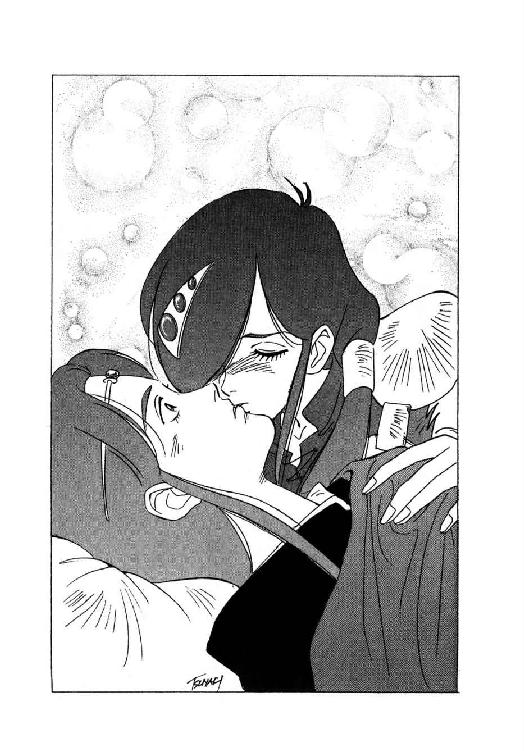
第二章 影との対決
１
「魔獣誅伐光線！」
巨竜魔獣戦士ルナ・ド・リムズベルの鋭い気合が地下通路の壁に響き、真紅の光線が矢のように伸びる。その直撃を受けて、今まさに彼女に襲いかかろうとしていた影人族の戦士が、一瞬のうちに悶絶して倒れる。
「ぐぐぐぐぐぐぐぐぐう......」
「だから、反抗せずに我々を通せと言ったのだ」
混血のはぐれ影人族で、南方世界に悪名を轟かせた暗殺者、そして今は、竜神公ルナの忠実な腹心を自称する十九ことデュークが、憐れみと優越感が混ざったような口調で呟く。
「影人族がいかに優秀といっても、しょせん従属種族には違いない。それが、巨竜神獣公の化身であるルナ様を阻もうなどという不遜な真似をして、無事に済むとでも思っているのか」
「黙れっ！ 不遜なのは貴様だ！ 最下位者の分際で！」
罵声をあげて、影人族の戦士が一人、デュークに向かって跳びかかろうとする。しかし、彼が迎撃の構えを取るのとほぼ同時に、逞しい戦士が彼と敵の間に強引に割って入る。
「目の前の魔獣を怖れぬ、その意気は、壮！」
言わずと知れた無謀戦士バト・ロビスは、腹の底に響くような声と共に、有無を言わさぬ速度で鉄拳を繰り出す。躱す間も受ける間もなく、影人族戦士は破城槌のような無謀戦士の鉄拳を真正面から叩き込まれ、そのまま通路の壁際まで吹っ飛ぶ。
「しかし、実力が足らん！ 全く足らん！ 仮にも魔獣に挑まんとするなら、少なくとも十年みっちり修業して、改めて出直して来ぉい！」
「あ、あのねぇ、おっさん......」
気絶しているのか、それとも一撃で息を引き取ったのか、影人戦士は壁際にひっくり返ってぴくとも動かない。その動かない身体に向かって、修業して出直して来いと本気で喚いている無謀戦士に、ルナはいささかうんざりとした声をかけた。
「お願いだから、影人族の人たちを露骨に挑発するような行動、あんまり取らないで欲しいのよね。それに十九も、陰に籠った挑発はやめなさいって」
「俺の行動の、どこが挑発だ！」
デュークは無言で肩をすくめただけだったが、無謀戦士は例によって、憤然とした調子で吠え立てる。
「俺は単に、この連中に、自立した戦士としての心得を説いているだけだ。魔獣を崇める種族だか何だか知らんが、生まれながらに他者に従属するものと決めてかかっている奴など、真に自立した戦士とは言えん！」
「だからぁ、それがそもそも挑発だって言ってるのよ。影人族の誇り高さは、獣人族の比じゃないんだから」
適当にあしらって放置しておけば良いものを、妙なところで律儀なルナは、困惑で額を押さえながら説明する。
「おっさんだって誇りを傷つけられれば、相手が善意だろーが悪意だろーが、故意だろーが過失だろーが、正当だろーが不当だろーが、何でも構わずとにかく即座に激怒するでしょ？ そーゆー、相手の誇りを傷つけるような行為を、世間では普通、挑発って言うのよ」
「なるほど、そうか」
とりあえず納得したような表情で、無謀戦士は大きくうなずく。しかし、魔獣公女がやれやれと吐息をつきかけた瞬間、彼は再び不穏な言葉を口にする。
「しかし、真に自立した戦士でもないのに誇りを持つというのが、そもそもの間違いではないか。誇りを持つなら、その誇りに見あうだけの実力と自立心を持たねばなるまい。それを持たぬ雑輩の無意味な誇りを傷つけたところで、何か問題があるとは俺には思えん」
「あのねー、おっさんが問題あると思わなくても、現に、問題が起きてるんだってばー」
ったくもー、この無謀戦士はー、と、魔獣公女は思わず頭を抱える。すると、不意に影人戦士たちの後方から、嘲弄を含んだ良く通る声が響きわたった。
「おやおや、たかが人間の戦士一人、まともに服属させる事もできないのですか。それでも貴殿は、本当に神獣公の化身なのですか」
「とうとう出てきたか、影人族長」
この、高慢な声は間違いない、と、デュークが低く呟く。魔獣公女も、無謀戦士も、さすがに揉めるのを止めて、通路の奥に視線を向ける。
と、通路を封鎖していた影人戦士たちが、さっと左右に空間を開き、その奥から数人の影人族が姿を現した。老人、壮年、若者と、年齢層はさまざまだが、全員布で顔を隠さずに、小さな冠をかぶっている。
「第五番、第七番、第九番、第十二番、第十六番、第二十番、第二十五番、第二十七番」
進み出てきた上級影人族の顔ぶれを見やって、デュークが小さく呟く。
「族長を入れて、全部で九人か。仮にも神獣公を迎えるのに、意外に少人数で来たな。しかも最上階級から四人しか来ないとは、どういうわけだ。他の連中は、何をやってる」
「うるさいぞ。下賤の者は、しつかりと口を噤んでいろ」
上級影人族の中央に立つ、華麗な冠をかぶった長身の男が、デュークに向かって軽侮に満ちた声をかける。その声に、彼はいささか渋い顔になって黙り込んだ。
デュークが渋い顔になった理由は、公然と軽侮されたからではない。族長の声が聞こえた瞬間から、彼は自分の認識攪乱能力を発動させており、本来なら彼の呟きは、竜神公以外には認識できないはずだった。しかし、うすうす予想してはいたが、この相手には彼の能力はまったく通用しないらしい。
「さすが、族長」
今度は声に出さずに呟くと、デュークは、絶対年代では八百年ぶり、自分の認識では二十年ぶりに、影人族長の顔を見据えた。彫りが深く、繊細で、端整なその容貌は、いささか異形ではあるが、まず美男子と称して差し支えないだろう。しかし、その眼光や口元からは、覆いようもない冷酷、高慢、傲岸な雰囲気が臭ってくる。
これは、支配し、服従させる事が当然だと思っている容貌だな、と、人間社会で二十年暮らしてきたデュークは呟いた。しかし、いくら影人族長が傲岸不遜な支配者でも、他ならぬ神獣公に正面から逆らう事はできまい。さて、いったい族長がどう出るか、と、彼は興味をつのらせて状況を見守る。
「お初にお目にかかります、竜神公殿」
上級影人族を従えて、魔獣公女の前に進み出た影人族長は、まずは恭しく一礼した。彼女の周囲にいる者たちなどには、全く目もくれようともしない。
「私が影を走る者の族長、第一番です。どうぞ、お見知りおき下さい」
「竜神公ルナ・ド・リムズベルです」
警戒しながら、ルナは会釈を返した。その瞬間、影人族長の目に露骨な軽侮の色が現れ、口元には慇懃無礼そのものの微笑が浮かぶ。
「ほほう。竜神公殿は、たかが従属種族の族長である私に、わざわざ礼を返されるのですか。いや、これはどうも、光栄の至りですな」
「あたしは、自分が礼をするべきだと思った時に礼をします。それを光栄に思うのは、あなたの自由です」
しまったかな、と、内心思いながらも、ルナは昂然と言い放った。とにかく、こういう相手に対しては、気弱になったり動揺を見せたりするのが一番まずい。
すると影人族長は、あからさまに相手を見下す目つきで、しかし言葉遣いだけはあくまで丁寧に訊ねる。
「ところで竜神公殿。我ら影人族の巣窟に、わざわざ出向いて来られるとは、いったい何の御用ですかな？」
「まず第一の用件は、影人族がリムズベルから拉致したあたしの部下、獣人族のリム・リリスを返して貰う事です」
魔獣公女は、意識して高圧的に、かつ単刀直入に返答した。
「そして第二の用件は、影人族をこの地から退去させる事。第三の用件は、この地に封印されている闇神公を解放する事。もっとも、第三の用件は神獣公同士の問題、従属種族には直接の関係はありませんね」
しかも、第三の用件を正確に言えば、封印を解きかかっている闇の魔獣を引っ張り出して、完全に撃滅するのが目的なんだけど、もちろん、この場でそこまで明かすつもりはない。
そして、彼女が第三の用件を宣言すると、影人族長の端整な容貌に、そして彼の左右に控える上級影人たちの間に、明らかな動揺が走った。
「貴殿は、本当に、闇神公を解放するために来られたのか？」
上級影人の老人が、とうてい信じられないと言いたげな表情で訊ねる。
「だが、竜神公は反逆を企て、闇神公に討たれる事になっていたのではないか？ それをわざわざ解放するなど......」
「それは八百年前の、先代竜神公レギオンの話でしょ？」
屈託のない調子で言うと、ルナは影人族の老人に向かって、にこっと笑いかけた。
「あたしは確かにレギオン公の子孫だけど、八百年前の先祖と同じ事をするとは限らないわ。とにかく、あたしは神獣公としての誇りに懸けて、闇神公の封印を解きます」
「そ、それこそが、我ら影人族の望んでいた事です」
老人は、今にも土下座して、魔獣公女を伏し拝まんばかりの態度になる。
「本当に闇神公の封印を解いていただけるなら、影人族は貴殿の命に服します。捕虜ももちろんお返しいたしますし、この地から退去せよとおっしゃるなら、すぐにでも......」
「やめろ、第十六番。お主は、いつから族長になったのだ？」
影人族長が、老人に向かって冷ややかな声をかけた。
「竜神公の命に影人族が服するかどうか、お主に決めて貰おうとは思わない。控えておれ」
「し、しかし族長！ この方は、竜神公は、闇神公の封印を解く、と、おっしゃっているのですぞ！ 闇神公の封印を解くためなら、いかなる犠牲も厭わないのが影人族の定め！ そう言われたのは、族長自身ではありませんか！」
第十六番と呼ばれた影人族の老人は、いかにも心外そうに声を張り上げた。すると族長、口元に酷薄な微笑を浮かべてうなずいた。
「そうだ。しかし、それはあくまで、真に闇神公の封印が解かれるならば、という条件が付いている。封印を解く、と簡単に宣言するだけで、影人族に対して思うがままに命令を下せると思われては、ちと甘すぎると言わずばなるまい」
「あたしが誇りに懸けて宣言したのに、信用できない、と、言うわけ？」
魔獣公女が、抑えた声で訊ねる。すると影人族長は、相手を小馬鹿にしたような表情で肩をすくめた。
「先刻、貴殿の麾下の戦士が何やら言っていたようですが、誇りの問題というのは極めて微妙でしてね。そもそも、相手が誇りを重んじる者かどうかわからなければ、誇りに懸けて宣言されても信用できるはずがない。そして私は、失礼を承知で言わせていただければ、たとえ神獣の頭脳体であっても、しょせん人間に過ぎない存在が、真の意味で誇りを重んじるとは思えません」
「......あなたは、ずいぶん人間を蔑視してるみたいね」
この高慢ちきな影坊主が、と、ルナは憤然と影人族長を見据える。すると族長は、ごく平然と首を縦に振る。
「もちろんですとも。人間は、まさに軽蔑に値する、愚劣で卑俗な生物です。繁殖力だけは旺盛ですが、それ以外に何のとりえもない。どうしようもないほど鈍い感覚、浅墓で自己中心的な思考、すぐに混乱して暴走する感情、どんな悪行を重ねても自分自身を許してしまう欺瞞に満ちた倫理観。そして、愚にもつかない存在でありながら、自分にはそれなりに価値があるんだと信じこんでいる傲岸さ。私にとって、いや、影人族の誰にとっても、人間という生物は正視に耐えない醜悪な存在なのですよ」
「......いーたい放題、言ってくれるじゃない」
このやろー、露骨に挑発しやがって、と、魔獣公女はぎりっと奥歯を嚙んだ。どーせなら、いっそ挑発に乗って、魔獣誅伐光線食らわして、昏倒させてやろーかしら。そうすれば、もう少し腹の立たない交渉相手が出て来るかも知れない。
だが、彼女はぎりぎりのところで自分の憤懣を抑えた。相手は、彼女が一撃で自分を倒せるのを知っている。知っててわざわざ挑発して来る以上、影人族側には何か、彼女が攻撃に出た場合の成算があると考えるのが妥当だろう。嘲弄されたからって生命が危なくなるわけじゃなし、ここは挑発に乗らずに我慢するのが得策だ。
それにしても、あたしよりも遥かに挑発に乗りやすい無謀戦士が、これだけ遠慮のない悪口言われて、横から割り込んで来ないなんておかしいわね、と、ルナはバト・ロビスの方をちらりと見やった。
すると意外にも、無謀戦士は影人族長に目もくれず、周囲の上級影人をじろじろと見やっている。いや、目もくれないと言うより、どうも彼には影人族長が見えていないらしい、と、彼女は気がついた。
そして、注意して周囲に目を配ってみると、どうやら影人族長の姿が見えているのは、ルナたちの側では、彼女と十九の二人だけのようだ。無謀戦士や強化斬魔獣剣士には、彼の姿も見えず、声も聞こえていない。間違いない。影人族長は十九と同様に、認識攪乱能力を使っている。
「小細工をするのね」
言葉には出さずに呟くと、ルナは影人族長を睨み据えた。なるほど、聞かせたくない相手にはあの悪口雑言が聞こえないようにしておけば、ルナが攻撃に出た場合、彼女がいきなり錯乱したように見せかけられる。そんな下らない策に嵌まってたまるもんですか、と、彼女は内心で軽蔑気味の苦笑を浮かべた。
「まあ、とにかく、あなたの本音は伺ったわ。あたしが本来、人間である以上、何を約束しても信用できないって言うわけね」
「その通りです」
平然とした表情で、影人族長は優雅にうなずく。
「もしも貴殿が、本当に闇神公を解放するつもりなら、それを何より先に行なうべきです。そうすれば、我ら影人族は貴殿の行為に感謝して、捕虜も返還しますし、この地から立ち退きもしましょう。むろん、我らの主、闇神公が許可すればですがね」
そう言って、彼は気取った笑みを浮かべた。
「相手が人間であっても、我ら影人族は約束を守りますし、感謝すべき行為に対しては、報恩の気持ちも忘れません。自分の口から言うのも何ですが、影人族の高潔さは従属種族の中でも傑出しており、まして人間など、全く比較にもならない......」
「あはははははははははははは！ あはは、あはは、あーははははははははははは！ あはははははは、あーはっはっはっはっはっ!!」
不意にルナが、ほとんど発作的に爆笑を開始する。腹を押さえ、身体を二つに折り、涙まで流して笑いまくる竜神公を見やって、さすがの影人族長も、一瞬目を丸くして絶句する。
「な、何が、おかしいんだ？」
「だって、だって、あはははははははははははははははははは!!」
こんな笑える話がありますか、と、彼女はひたすら爆笑しまくる。影人族長だけではなく、他の上級影人も、強化斬魔獣剣士、無謀戦士、十九、鮫鷲獅子や有翼猫までも、いったい何事が起きたのか、と、ルナの方を見やる。
しかし彼女は構わずに、勢いに任せて笑い続ける。むりやり抑えた憤怒や、絶え間ない緊張、精神の中に溜った鬱屈が、哄笑の中に溶けていくのが感じられる。
「あははははは、あー可笑しいっ！ これは笑える、これは、あはははははははははっ！ あはっ、あはっ、あははははははははははっ！」
「いい加減にしろっ！」
他者を嘲笑するのは馴れているが、他者から笑われるのはあまり馴れていないらしく、まず影人族長が憤激した声で叫んだ。
「いったい、何が可笑しくて、そんなに笑う！ 返答によっては、竜神公と言えども容赦せんぞ！」
「まー、ちょっと待ちなさいって」
どーせ最初から容赦する気なんかないくせに、と、思いながら、彼女は呼吸を整え、笑いを制御する。そして、くっくっくっくと小さく、しかし堪らなく可笑しそうに笑いながら、憤怒に身を震わせる影人族長に訊ねかける。
「あのさぁ、あんた、本当に闇神公の、従属種族の族長なの？ 闇神公が、どんなに凄まじい存在か本当に知らないの？」
「な、何ぃ？」
竜神公の意外な問いかけに、影人族長は憤慨と困惑が入り混じったような表情になる。
「それは、どういう意味だ？」
「どーゆー意味も、こーゆー意味も、あたしがいったん闇神公の封印を解いちゃったら、この場所にちょっとの間でも無事でいられる存在は、あたしたち神獣公だけなのよ。それ以外は、人間だろうが従属種族だろうが、山だろうが城だろうが、すべて闇神公の強力無類な破壊力の前に、有無を言わさず粉砕されちゃうんだから」
一気にそう言うと、彼女は再びくっくつくっくと可笑しそうに笑う。
「それなのに、あーそれなのに、あんたったら、闇神公の封印を解いた後で捕虜を返しましょーだの立ち退きましょーだの、さも名案たらしく提案しちゃって！ 闇神公の封印を解いたら最後、神獣公以外の者には後なんて何もなくなるのに！ その事実を全然知らないって、自分から暴露してるんだもの！ これが笑わずにいられますか！」
「ぐぐぐぐぐ......」
またもけらけらと笑いだす竜神公を見やって、影人族長は低く呻いて絶句する。するとそこへ、上級影人族の一人から、鋭い調子の質問が飛んだ。
「本当ですか、第一番！ 竜神公が闇神公の封印を解いた瞬間に、我々はすべて粉砕されるのですか？」
「それが本当なら、どうだと言うのだ！ 第七番！」
ほとんど叱咤に近い調子で、第一番が訊ね返す。
「闇神公の封印が解けさえすれば、我らの身の安全など考慮する価値なし！ それが、神獣を崇める種族の取るべき正道であろうが！」
「影人族が滅びる事で闇神公が解放されるなら、それも一つの正道かも知れないけどね」
竜神公が穏やかな調子で口を入れ、族長は表情を引き攣らせて振り返った。いつの間にか、彼女の発作的な爆笑は終息し、その声には、いかにも竜神公らしい威厳と、淡い哀愁が籠められている。
「でも、事実はそうじゃない。闇神公の封印を解ける者は神獣公だけで、従属種族の影人族は何の手出しもできない。ならば、意味のない被害を受けないように、早々にこの場所から立ち去りなさい。あたしが影人族に立ち退くよう求めている理由は、これです」
「馬鹿な！ 闇神公が解放されるというのに、影人族が立ち去れるわけがなかろう！」
影人族長が、憤激をこめて叫ぶ。すると竜神公は、平然とした口調で訊ねた。
「立ち去ってはならない、と、命じられたの？ 闇神公から？」
「いや、それは......」
急に自信を失ったような表情になって、影人族長は口籠る。すると上級影人族の一人が、彼に代わって返答する。
「闇神公の命令は、ただ一つです。『我を解放せよ』」
「そうでしょうね」
うなずいて、竜神公は影人族全員をぐるりと見渡す。
「さあ、どうする？ あたしの目的は、先刻言った通り。ただし、あたしは、何が何でも影人族に協力してくれとは言わないわ。協力してくれないなら、力づくでもリルを救出して、それから闇神公を解放するわ。その時に立ち去るかどうかは、影人族の自由」
「儂は、竜神公に御協力すべきだと思う」
影人族の中で真っ先に声を上げたのは、第十六番と呼ばれた老人だった。
「たとえ族長が不承知でも、儂は竜神公に御協力申し上げ、捕虜をお返しし、従う者すべてを連れて安全な場所まで避難する。そして、そこで闇神公の御命令を待つぞ。儂を止められるものなら、止めてみるがいい！」
「第十六番！ 貴様、族長に謀反する気か！」
別の上級影人が、血相を変えて叱咤する。しかしそのとたん、他の者がぼそりと呟く。
「族長に謀反しても、闇神公に謀反するわけではない。ましてこれは、神獣公の指示に従っての行動ではないか」
「第七番！ 貴公まで......」
「やめろ、第五番」
表情を引き攣らせた第一番が、それでも意外に平静な声で部下を制止する。
「こうなっては、族長の権威を取り戻す方法は、もはや一つしかない」
ゆっくりとした口調でそう言うと、彼は魔獣公女に目を向けた。
「畏れながら、竜神公殿。私は貴殿に決闘を申し込む。貴殿が勝てば、影人族はすべて貴殿の命に服するだろう」
「で、あたしが負けたら？」
わずかに眉を寄せて、ルナが訊ねる。すると影人族長は、端整な顔になかなか凄味のある笑みを浮かべて答えた。
「何をおっしゃるかと思えば。神獣公が、従属種族に負けるわけがない」
２
「で、結局、決闘の申し込みを受けたんだね？」
右脇を歩いている強化斬魔獣剣士に訊ねられ、ルナはこっくりとうなずいた。
「ええ。このままじゃ、影人族同士で戦闘になりかねなかったし、土壇場でリルを人質に取られても厄介だしね。とにかく、あたしが族長に勝てば、話は丸く収まるわけだから」
「まあ、それは確かにそうなんだろうけど、どうも影人族の作戦に、まんまと嵌められたような気がするな」
どうも心配そうな表情で、ミル・ユードは小さく首を傾げる。
「しかも、君は現在、魔獣の力はほとんど使えない。相手は、影人族の頂点に立つ超能力の持ち主だ。それで、勝算はあるのかい？」
「一応はね。影人族長は、認識攪乱能力を備えてるみたいだけど、それは竜神公には通用しないわ。そして、あたしの使える唯一の攻撃力、魔獣誅伐光線は、影人族相手だと怖ろしいほど効果がある。だいたい本来なら、影人族長が言ってる通り、神獣公が従属種族と正面から闘って負けるはずがないのよ」
そう言いながら、魔獣公女は今一つ冴えない表情で溜息をつく。
「ただ、問題なのは、それは充分、影人族長にもわかってるはずだって事なのよね。それなのに、敢えて決闘を申し込んで来たって事は、何か秘策があるんじゃないかな」
「さて、それはどうかな。敵方にも、さほど準備時間があったとは思えん」
ルナの左脇を歩いている無謀戦士が、面白くもなさそうな口調で唸る。
「俺には、その影人族長、単に窮余の一策でお主に咬みついたとしか思えんな。負けてもともと、勝てれば儲け物、その程度の思惑ではないのか？」
「ならば、いいんだけどね。だけど、どうもあたしは、あの族長、何か成算がなければ行動を起こさない性格のような気がする」
まず走り出してから稀に考える性格の無謀戦士とは、基本的に思考方法が違うのよ、と、ルナは言葉には出さずに呟いた。
すると無謀戦士が、実に無雑作に言い放つ。
「そんなに心配ならば、いっそ俺が代理で決闘してやっても良いぞ。要するに、相手を叩きのめせば万事解決なのだろうが」
「......まー、ちょっとそーゆーわけにもいかないわねー」
苦笑しながら、ルナは首を振った。
現在、彼らは影人たちの案内で、大集会場と呼ばれる場所に向かっている。どうやら、その場所に影人族を全員集め、彼らの前で決闘を行ない、ルナが勝ったらそのまま全員を服属させる、という手順になっているらしい。
「できれば先に、リルの無事な姿が見たかったけどね。でも、あの娘を引っ張り出すと、何をしでかすかわからないし......」
呟いて、ルナはちょっと頰を赤らめた。彼女は以前、陸上艦隊を相手にカルバドク市の近郊で魔獣変身した後、ついでに魔獣遠観力を使って、捕らわれの縞兎娘の様子を調べている。ところがその時、彼女は影人族の女の子相手に、愛欲遊戯の真っ最中だった。
その状況を偶然見てしまったルナは、当然ながら呆れ返ったものの、一方では、これなら当面大丈夫だわ、と、安堵したのも事実である。それ以来、彼女は縞兎娘が置かれた現状については、ほとんど心配していない。彼女に危機が訪れるとすれば、土壇場で人質に取られた場合と、闇の魔獣を解放する時に脱出させ損ねた場合だけだろう。
と、強化斬魔獣剣士が、自分自身に言い聞かせるような調子で小さく呟いた。
「まあ、竜神公本人が明確に承知した以上、よほどの状況にならない限り、決闘に応じないわけには行かないだろう。心配なのは所要時間だけど、この際、今晩の内に影人族との決着がつけば、上首尾と考えるべきなんだろうな」
「所要時間？」
それはいったい、と、口に出しかけた瞬間、ルナは不意に恋人の懸念に気付いて、困惑した表情になって言葉を吞みこむ。もともと縞兎娘を救出するために南方に出てきた彼女とは違って、彼は、一刻も早くカルバドクに戻り、帝国の遠征軍から故郷を守らなくてはならない。
もちろんそのためには、闇の魔獣に勝って生還する事が前提だが、少なくとも影人族相手に余分な時間を使うような状況は、彼にとっては絶対に避けたいはずだ。しまった、配慮が足りなかった、と、ルナは即座に、しかし切実に反省する。
それに、彼にはとうてい及ばないだろうが、彼女自身にとっても、カルバドク市とそこに集う人々は大事な存在には違いない。正体不明の彼女に異例なほどの好意を示してくれたカルバドク侯と侯爵夫人、彼女を大事な我が君の婚約者と最初に認めてくれたレイピアさん、迷惑もかけられたけど世話にもなったギルバートを始めとする魔道士たち。この人たちが存亡の瀬戸際にあると思えば、確かに、もたもたしてはいられない。いっそ、決闘の受諾はいったん白紙に戻し、もっと所要時間の少ない方法がないか考えてみようかしら、と、彼女はもう少しで口に出しかかった。
だが、ルナがその言葉を発する前に、強化斬魔獣剣士がきっぱりと言い放つ。
「とにかく、できるだけ犠牲を出さずに影人族と決着をつけようという、君の思考法そのものは、間違いなく正当だ。後は、注意深く、臨機応変に対応して行けばいい」
おそらくは意図的に明朗な調子でそう言うと、彼は恋人に向かって微笑を浮かべた。
「大丈夫。少なくとも影人族相手なら、よほど深刻な失策をしない限り、何とかなるはずだ。何と言っても、神獣公対従属種族なんだから」
「そうね」
とにかく今は、そう思う事にしよう、と、内心で呟きながらルナがうなずく。それからしばらく、二人はそれぞれ自分の思考に没頭しながら、無言で地下道を進んで行った。
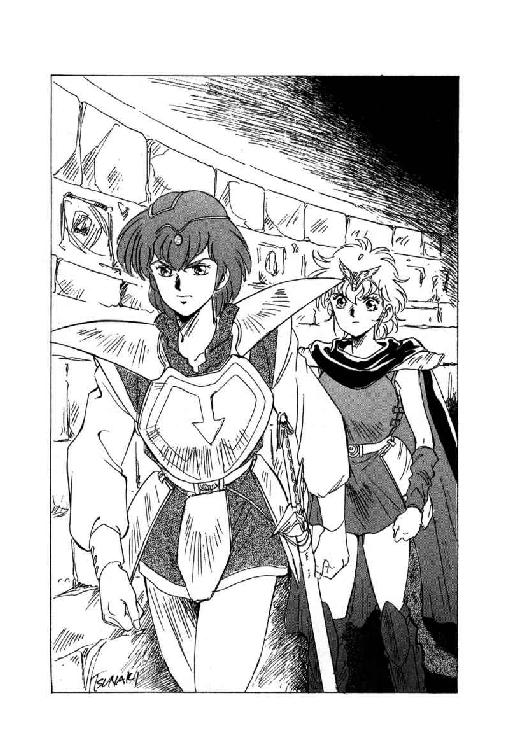
「さあ、着きました。こちらが大集会場です」
やがて、一行の先に立っている影人族の一人、第十六番老人が振り返って告げた。
「足元にお気をつけ下さい。少し、坂になっておりますので」
「はいはい、この程度なら大丈夫......だけど、本当に、ここが大集会場なの？」
目の前に現れた空間を見回して、ルナは多少気抜けしたような声を出した。影人族の大集会場と言うから、ヴェルフレイ神殿の地下広間とか、獣人谷の祭儀場とか、そういう規模の空間を想像していたのだが、通された場所は意外に狭く、装飾らしいものもほとんどない。何だかリムズベル城の地下倉庫みたいな印象ね、と、彼女はわずかに首を傾げる。
「天井も低いなあ。もしもここで魔獣変身したら、ずいぶん窮屈な状態になるわね」
「そうだね。だけど、君が魔獣変身したら、即座に闇の魔獣が出て来るわけだからな。天井や周囲の岩壁なんか、一瞬の内に吹っ飛ばされるかも知れない」
ごく真剣な口調で、強化斬魔獣剣士が小さく呟く。その光景を想像して、魔獣公女もちょっと戦慄気味の表情になった。
「それでは、こちらで少しお待ち下さい」
さほど広くない大集会場の一隅にルナたちの一行を案内すると、上級影人たちは、彼女たちから見てちょうど正面に当たる一隅に座を占めた。それから、黒い布で覆面をした影人族の戦士たちが、次々に大集会場に入って来て、それぞれ壁際に着座する。おそらく、厳密に席次が決まっているのだろう。誰も、どこに座ろうかと逡巡したりせず、入って来るとそのまま自分の場所に直行して座り込む。
と、黒い髪を長く伸ばした、ほっそりした姿の影人女性が大集会場に入って来て、上級影人の間の、族長に近い席に静かに座った。影人族の女性を初めて肉眼で見たルナは、好奇心を起こしてデュークにそっと訊ねる。
「ね、ね、十九。ちょっと訊きたいんだけど、あの女の人は、いったい誰？」
「女の人？ ああ、七十二番ですね。彼女は族長の側近で、特に許しを得てあの席にいるんです」
他に何か気になっている事があるのか、デュークは十九と呼ばれても訂正もせず、ちらっと七十二番を見やって、ごく簡単に説明した。しかし、ルナの好奇心は、その程度では納まらない。
「特に許しを得て、と、いう事は、普通の女性は、この席には出られないの？」
「ええ。影人族では、超能力のない女性は、十歳未満の未成年と同等に扱われます。だから当然、特別に許可を得ない限り、こういう公的な席には出られません」
そう言って、デュークは上級影人たちの席に、ちらりと鋭い目を向けた。
「あの七十二番は、超能力こそありませんが、特に判断力が優れていると族長に認められ、例外的に男性と同等の権利を得ています。しかし、奇妙だな」
「何が？」
竜神公の問いに、混血影人の男は、囁くような声で答える。
「上級影人族の数が、どう考えても足りません。確か、超能力を発揮して上級影人に加えられていた女性も、三人はいたはずなんですが、その連中も姿を見せない。それに、いくら女子供は出席していないといっても、全体の人数がとにかく少な過ぎます」
「この場に来ないで、どこかに集団で身を潜めてるのかな？」
魔獣公女も、思わず声を低くして訊ねる。すると彼は、ごくわずかに首を傾げた。
「可能性としてはあり得ますが、しかし、そんな事をして何か意味があるんでしょうか？」
「さあ......」
意味があるかどうか、あたしに判断できるわけないじゃない、と、ルナは小さく肩をすくめる。と、そこへ、強化斬魔獣剣士が口を挟んだ。
「どうなんだろう？ 姿を現さない人物が、全員族長の腹心だとか、あるいは逆に、特に族長に反抗的だとか、そういう傾向はないのかな？」
「私も考えてはみたが、断言できるほどの傾向はないようだ」
無愛想そのものの口調ではあったが、デュークはとにかく人間に向かって返答する。すると強化斬魔獣剣士は、予想通りだ、と、言いたそうな表情でうなずいた。
「ならば、この欠員は偶然と考えるべきだろう。どこかに派遣されているのか、死んだのか、行方不明になっているのか」
「死んだはずはない。それならば、番号が繰り上がっているはずだ。派遣というのも、無理がある。これから神獣公が乗り込んで来るという時に、一人二人ならとにかく、これだけの人数をどこかに派遣するとは思えない」
デュークが呟いている間に、数人の影人族が立ち上がって、大集会場の扉を閉める。室内にはまだずいぶん空きがあるが、どうやら既に、集まるべき人数は揃ったらしい。ざっと見渡したところ、居合わせている影人族は、総勢百人を少し超える程度だろうか。
「私がいた頃に比べると、約半分か」
「そして、姿を見せない半分は、おそらく闇の魔獣が出現した時に吞まれたんだろう」
強化斬魔獣剣士がぼそっと呟き、ルナも、そしてデュークも、愕然とした表情になって彼を見やった。
「それじゃ、一族の半分を、一瞬で吞まれちゃったって事？」
「影人族としては認め難いだろうけど、僕はそれが一番妥当な解釈だと思う」
そう言って、強化斬魔獣剣士は周囲をゆっくりと見回した。
「多分、闇の魔獣が封印されなければ、次の一瞬で、影人族は全員吞まれていたはずだ。皮肉な話だけど、ここにいる影人族は、崇める相手が封印されたために何とか生き延びることが出来たってわけだな」
「......幸運だったと言うべきなのか」
押し殺した声の奥底に強烈な苦みを籠めて、デュークが呻く。これには、ミル・ユードもルナも返答ができず、そのまま暫時沈黙した。
一方、彼らの想いとは関係なく、影人族は予定通り一族集会を開始する。
まず最初に族長が立ち上がり、竜神公ルナが配下とともに強引に影人族の居住地に侵入して来た経緯と、捕虜の返還と影人族の立ち退きを一方的に求めて来た事実を述べた。
そして、自分としては名誉に懸けても本来人間の竜神公に屈するつもりはないが、相手が相手であるから一族全員に反抗を強要する気はない。しかし、自分単身でも、竜神公に闘いを挑むつもりだ、と宣言する。
「ったく、ものは言いようとは、この事ね」
影人族長の演説を聞いていたルナは、呆れた顔になって呟いた。
「確かに完全な噓は言ってないけど、自分の都合で事実を目いっぱい歪曲しまくってるじゃない」
「いや、彼の主観では、あれこそが揺るぎない事実なんだよ」
穏やかな微笑を浮かべて、強化斬魔獣剣士が首を振る。
「事実も、正義も、それぞれの立場によって変化する。だから、彼の立場から見れば、あれが事実で自分が正義なのさ。もっとも、他人がその事実や正義を認めるかどうかは、全く別の問題になるんだけどね」
「ふうん......」
今一つ納得しきれないような表情で、魔獣公女は首を傾げる。と、その間に影人族長の演説は終わり、この場にいる中では族長に次ぐ序列の、第五番が立ち上がる。
第五番の演説はごく短いもので、自分は闇神公御自身から命令を受けない限り、族長の命令に無条件に従う、という内容だった。そして彼は、族長が竜神公と闘うならば、当然、自分も共に闘う、と、明瞭に宣言し、魔獣公女と強化斬魔獣剣士は思わず顔を見合わせる。
「確認したいんだが、ルナ。影人族長は、一対一の決闘を申し込んできたのかい？」
「えーと、そーは言わなかったけど......」
当惑した表情で返答する恋人を見やって、ミル・ユードは小さく苦笑した。どうやら影人族長は、自分に賛同する影人全員を引き連れて、竜神公を袋叩きにするつもりらしい。思った通りまんまと嵌められてしまったわけだが、なに、それならそれで、竜神公側も同様に助っ人を立てる事ができる。その方が、かえって決着は早くつくかも知れない。
「しかし、最悪の場合、ここにいる影人族全員が族長の共謀者だ。いくらなんでも百人掛りで一斉に包囲攻撃されると、さすがにちょっと苦しいな。何とかして、包囲される前に扉まで到達する方策を考えないと......」
強化斬魔獣剣士が呟いた時、第五番の演説が終わって、続く第七番が立ち上がった。彼は、比較的印象の薄い容貌をした壮年の影人だったが、いざ演説を始めると、二人の上位者とは全く違った内容を滔々と述べ立て、影人族たちの度胆を抜いたのである。
彼はまず竜神公が、闇神公を解放しに来た、と、誓言した事を明らかにした。そして、闇神公の偉大にして強烈な力は、地震や嵐、洪水のように、迂闊に接近する者をすべて破壊する、と、竜神公が指摘した事を述べる。竜神公は影人族に退去を命じているのではなく、避難を勧告しているのだ、と、第七番は説明した。
そして彼は、あまり冴えない外見からは想像もつかない堂々とした声で、百余人の同胞に向かって問いかけた。
「我々は、闇神公の従属種族だ。闇神公が死ねと命じられたら、納得出来ようが出来まいが、即座に死なねばならぬ。それは確かだ。しかし、族長が死ねと命じた時にも、同じように死ななくてはならないのか？ それは否だ。族長に死ねと命じられた時は、納得がいかなければ抗議することができる。族長に抗議する事は、罪ではない。それでは、族長に神獣公と闘えと命じられたら、どうする？ 闇神公に命じられたのではない。族長に命じられたのだぞ。納得ができなくても、闘わなくてはならないのか？」
「否だ！」
期せずして、集まった影人族の中から否定の声が上がった。その声を聞いて、影人族長と強化斬魔獣剣士が、同時に小さく溜息をつく。もちろん、片方は落胆の、もう片方は安堵の溜息である。
そして、第七番に続いて立った第九番も、敢えて竜神公と闘うべきではない、と述べた。もしも影人族が竜神公と闘わねばならないのならば、とうの昔に闇神公から命令が下されているはずではないか。しかし、闇神公の命令は『我を解放せよ』の一点のみ。この命令を実現しに来たと言っている竜神公と、何のために闘わなくてはならないのか。そう言って、第九番は腰を下ろした。
「やーれやれ。どーやら、影人族全員相手に決闘する羽目には陥らずに済みそうね」
第九番に続いて第十二番も、竜神公の勧告に従うべきだ、と、喋り始めるのを聞いて、当の竜神公は心底嬉しそうに、にこっと笑った。
「本当に、一時はどーなる事かと思っちゃった」
「まあ、影人族が一人残らず、文句なしに族長を支持するような状況なら、そもそもこんな集会を開く必要はないからね」
そう言いながらも、強化斬魔獣剣士は、敢えて厳しい表情で恋人を見やった。
「だけど、油断は禁物だよ。全員総掛かりにはならなくても、族長を支持する影人が皆無のはずはないんだから。現に、族長に次ぐ高位者の第五番が、族長と共に君に挑戦するって宣言しているじゃないか」
「確かに、そうでした」
表情を引き締めてうなずくと、彼女はデュークに紺色の目を向けて訊ねた。
「ね、ね、十九。あの第五番っていう奴、どんな術の使い手だかわかる？ あ、それからついでに、族長の使う術も、知ってたら教えてよ」
「第五番の超能力は、空間に断層を生じさせて物質を切断する術です」
淡々とした口調でそう言うと、デュークは両掌を軽く合わせて、すっと小さくずらして見せた。
「まあ、こんな感じですね。空間ごと斬るものですから、どんなに堅い物質でも抵抗できません。それほど大きな断層は作れないらしいですが、人間の首をずらして飛ばすぐらいは朝飯前のはずですよ。竜神公の首は、さすがに斬れないだろうとは思いますが」
「 ーん......斬れなきゃいいけどね」
ーん......斬れなきゃいいけどね」
本当に斬れないか、試してみたいとは思わないなあ、と、呟いて、ルナは無意識に自分の首筋を撫でた。
「それで、族長の術は？」
「族長の超能力は、おそらく感覚欺瞞です。おそらくと言うのは、私には確認が難しい能力ですから」
そう言って、デュークはいささかわざとらしく溜息をついた。
「私の能力が認識攪乱、族長の能力が感覚欺瞞。これが衝突したら、もう、収拾がつきませんからね。ただ、確信を持って言えるのは、私の能力は族長に全く通用しない、という一点だけです。能力の種類がどうとかよりも、おそらく水準が違うんでしょうね」
「なるほど......」
感覚欺瞞って事は、幻覚や幻聴で相手を欺くわけか、と、ルナは小さく呟く。確かに、竜神公には十九の認識攪乱能力は通じなかったけど、水準が違うほど強力な、族長の感覚欺瞞能力も通じないかどうかは、試してみないとわからない。やんなっちゃうなあ、と、彼女は思わず溜息をついた。同時に、強化斬魔獣剣士の表情が、目に見えて厳しくなる。
と、不意に、影人族長の良く通る声が、さほど広くもない大集会場に、強烈な怒気を含んで響き渡る。
「もう充分だ！ 自分は先刻言った通り、たとえ単身でも竜神公に決闘を挑む！ そうでなければ、自分自身が納得できないからだ！ 族長という立場は関係がない！ 単に、気概のある一影人の意地だ！」
そう叫ぶと影人族長は、すっくと立ち上がって大集会場の中央に進み出た。
「これは族長の命令ではない！ 自分と同じ気概、同じ意地のある者のみ前に出ろ！ 誰にも強制はしない！」
「応！」
即座に第五番が立ち上がり、族長の横に進み出る。続いて第二十番、第二十七番の二人が、意を決した表情で前に出る。更に、頭部を黒い布で覆った下級影人が二人、音もなく立ち上がって進み出てきた。
しかし、そこまでだった。その後、大集会場はしんと静まり返り、誰も前に出て来ようとはしない。そして、堪りかねたように一人が立ち上がって前に出ようとした瞬間、族長が鋭い声で叫ぶ。
「お前は来るな！ 女の出る幕ではない！」
「で、でも......」
大集会場にいる唯一の女性影人、七十二番は、理知的な容貌を今にも泣き出しそうに歪め、族長の顔をじっと見据える。
「どうか、お供を......」
「馬鹿を言うな！ それともお前は、私が決闘に女を伴った第一番として、長く笑いの種にされるのを望んでいるのか？」
「そんな......」
他ならぬ族長に容赦の微細片もない言葉を浴びせられ、七十二番はくたくたと座り込んでしくしく泣き出す。しかし、族長は彼女にまったく目もくれず、半分あっけにとられている竜神公に向かって、かなり自己陶酔の混じった口調で挑戦する。
「さあ、どうだ、竜神公殿！ 影人族の身で、人間出身の神獣公から命令を受けるのは潔しとしない勇者が、ここに六人揃った！ そして、私は再び問う！ 貴殿は、我らの挑戦を受けるか！」
「受けてやるわよ」
不意に腹の底から、かっと憤怒がこみ上げてきて、魔獣公女は六人の影人族を見据えてうなずいた。何をいい気になってるのか知らないけど、お前たちみたいに、自己中心的な幼児思考しかできない連中は、あたしがこの手で叩きのめしてやる！
ところが、彼女がうなずいた瞬間、無謀戦士と強化斬魔獣剣士が同時に叫んだ。
「待て！ その挑戦には異議がある！」
「え!?」
思いがけない発言に、ルナも、影人たちも一瞬あっけにとられる。その虚をついて、強化斬魔獣剣士が、一気に言葉を繰り出した。
「影人族の族長が竜神公に決闘を挑むのは、不遜とは言えまだ理解できる。しかし、他の連中は、いったい何者だ！ 畏れ多くも神獣公の一員である竜神公に挑戦する前に、まず、我々と闘って、決闘を挑む資格がある事を証明せよ！」
「ミ、ミル！」
無謀戦士のおっさんならとにかく、あなたがいきなり、いったい何を言い出すのよ、と、ルナは紺色の目を真円に見開いて絶句する。一方、族長を筆頭とする六人の影人は、ある者は口元に嘲笑を浮かべ、ある者は無遠慮に大口を開けて笑いだす。
「まったく、人間如きが何を言い出すかと思えば......」
苦笑混じりに呟くと、影人族長は無雑作にうなずいた。
「よかろう。お前たちを鏖殺すれば、その後、竜神公との対決がどうなろうと、少しは胸が晴れるというものだ」
「ふふん、鏖殺されるのは、どっちかな？」
無謀戦士が、今にも舌なめずりをしそうな表情で挑発する。こ、こりゃあかん、と、ルナは思わず額を押さえた。
３
「ねえ、ミル。やっぱり、止めない？ あたし一人だったら、仮にも神獣公なんだもの、何とかしてみせる自信はあるんだけどな」
不満と心配が混ざったような表情で言い募る恋人に向かって、強化斬魔獣剣士はきっぱりと首を振った。
「心にもない事を言うんじゃない。だいたい、君が魔獣変身しなくちゃならない窮地まで追い詰められたら、すべての苦労は水の泡なんだぞ。今、闇の魔獣が解放されたら、リルは助けられない、影人族は全滅、帝都にだって、まだまだ人が残っているだろう。それをみんな犠牲にしてもいいのかい？」
「それは良くないけど、でも、魔獣変身しないで、あたしが勝てばいいんでしょう？ 相手が五十人、百人っていうならとにかく、従属種族の影人族がたった六人だもの。あたし一人で、充分対応できるわよ」
意図的に軽い口調でそう言って、彼女は何とか恋人を翻意させようとする。しかし、強化斬魔獣剣士は頑として首を縦に振らない。
「たった六人と言っても、問題はその内容だよ。感覚欺瞞能力者に、空間切断能力者、それに冷凍能力者と思念波増幅能力者。そして、超能力のない二人も、体術の達人なんだからね。この六人に巧妙な連携を行なわれたら、はっきり言って、誰も対抗出来ないよ」
「でも、あたしには魔獣誅伐光線があるわ！」
魔獣隠身冠をぴんと指で弾き、魔獣公女は笑顔を作る。
「あれが一発命中すれば、どんな能力を備えていたって、従属種族である以上は絶対に抵抗不能になる......」
「命中すればね。しかし、感覚欺瞞能力者と思念波増幅能力者が組んだら、まず間違いなく神獣公でも騙される、と、十九が断言してる。滅多な事では命中しないと思うよ」
冷静な口調で指摘すると、強化斬魔獣剣士は再び首を振った。
「だから、相手を分散させて各個撃破するのが、最善の策なんだ。幸い影人族長は、君の事は心底警戒しているけど、僕らの事は徹底的に舐めている。こちらが望む組み合わせで対決を行なう条件を、深く考えもせずに承知したのが、何よりの証拠さ。奴に、人間を舐めちゃいけないって事実を、思い知らせてやる」
「だけど、ミル」
恋人の決意が予想よりも遥かに強固な事を知ったルナは、やや躊躇するような表情になりながらも、敢えて彼の懸案事項について訊ねてみる。
「六人が一対一の決闘をするという事は、単純に考えても六倍の時間が必要になるわ。そんな手間をかけていて、カ......」
「それは、既に考えた。考えた上で、決断したんだ」
カルバドクは大丈夫なの、と、言いかかったルナの言葉を、強化斬魔獣剣士は真摯そのものの口調で、きっぱりと遮った。
「何が懸かっているのかは、理解しているつもりだ。だが、今、取るべき方策は、これ以外にない。君に、六対一の決闘は、絶対にさせられない」
「ミル......」
不安と困惑、そして、幾分かの感動を籠めた視線で、ルナは恋人をじっと見詰める。そこまで考えて決断した以上、彼女が今更何を言っても、この青年は絶対に翻意しないだろう。
「だけど、大丈夫かなぁ、みんな......」
溜息混じりに呟くと、ルナは他の同行者を見やった。魔獣公女の説得を最適任者に任せ、彼らは既に、情報通のデュークを中心に、作戦会議に取りかかっている。
「敵の中で、エネルギー的に最強の攻撃力を持っているのは、冷凍能力者の第二十番だ。奴は自分の周囲に、思うがままに氷雪地獄を作りだすことができる」
混血影人の元暗殺者は、ぶっきらぼうな口調で、敵の能力を説明する。
「だから奴と戦う者は、よほど活力に溢れていなければ圧倒される。私の見るところ、可能なのはバト・ロビス、あんただけだな」
「よし、任せろ」
相手が最強というのが気に入ったらしく、無謀戦士は無雑作にうなずく。
「しかし、他の敵はどうする？ 何なら俺が、順次片づけてもいいぞ」
「さすがに、そうはいかない。一人一殺、全員参加が建前だ」
淡々とした口調でデュークが言うと、有翼猫が、はっとしたような声で訊ねる。
「と、いうことは、僕も勘定に入ってるんですかぁ？」
「当然だ。敵は六人、味方も六人。余分もなければ不足もない」
そう言って、デュークは有翼猫と鮫鷲獅子を見やった。
「お前さん方には、八十七番と九十五番を受け持って貰う。八十七番は力自慢だから、鮫鷲獅子が担当。九十五番は身が軽いから、有翼猫が担当だ。相手の得意な分野で、存分に圧倒してやれ」
「承知つかまつりましてございます」
例によって丁重な口調で、鮫鷲獅子が一礼する。しかし有翼猫は、彼ほど悠然とした態度は取れない。
「あ、あ、あのー、どーしても僕が単独で、影人族の戦士を一人、やっつけなくちゃいけないんですかぁ？ いったい、あの、どーしたらいーんでしょー？」
「何を寝言をほざいておる。どうするもこうするも、とにかく思う存分叩きのめしてやれば良いのだ」
無謀戦士が、ますます無雑作な口調で言い放つ。そそそ、そんなぁ、と、彼は思わず半べそをかきそうになったが、相手の次の言葉で、はっと金色の瞳を輝かせた。
「そもそも俺の聞くところでは、影人どもとの因縁の始まりは、お主が奴等に三対一の卑怯な不意討ちを食らって、縞兎娘を拉致された件だと言うではないか。それを思えば、今回はまさにお主の雪辱戦。願い出てでも参加しなくてはならぬ、絶好の機会だぞ。しゃんとせい、しゃんと！」
「はい！」
そうだった、忘れてた、と、彼は声には出さずに呟く。あの時、相手が一人、せめて二人なら、ああも無様には倒されなかった。そして今度は、一対一。なるほど、これは確かに、名誉挽回、雪辱戦の好機だ。
「さて、十九よ。残る敵は空間切断能力者と、思念波増幅能力者、だったな？」
有翼猫が現金なほど元気になったのを見やって、無謀戦士は、はぐれ影人に視線を戻す。もっとも、視線を戻すと言っても、彼の存在はどうも捉えにくい部分がある。
「味方で残っているのが、お主とカルバドク卿の二人だ。どちらをどちらに割り当てるつもりだ？」
「これは決まっている。私が第五番、彼が第二十七番だ」
そう言って、デュークはいささかわざとらしく肩をすくめる。
「死の神獣と渡り合った、バト・ロビス。あんたにだけは、正直な目算を言っておこう。この組み合わせは、一つを除いてすべて、味方が有利に組んである。有利さの度合いはそれぞれ違うが、私としては最善を尽くしたつもりだ」
「それで、有利でない組み合わせとは、どれだ？ 大将戦か？」
無謀戦士が、相変わらずの無雑作な口調で訊ねる。すると元暗殺者は、こちらも無雑作に首を振った。
「竜神公と族長の勝負は、予想がつかない。それに、私がこの組み合わせを選択したわけじゃない」
「ならば、どれだ？」
無雑作を通り越して、もはや半分面倒くさそうに、無謀戦士が訊ねる。
「俺の勝負か？ それとも、お主の勝負か？」
「後者だ」
ぼそりと言い放つと、デュークは小さく苦笑を浮かべる。
「私は以前、今は第五番になっている男に認識攪乱を破られた事がある。その事実は、向こうも覚えているだろう。その後、私の技量も上がったはずだが、奴だって遊んでいたわけじゃない。今度は、どうなるか......」
「俺と相手を替えるか？」
無謀戦士の問いに、デュークは即座に首を振った。
「駄目だ。第二十番は、私にとっては第五番より相性が悪い。第五番が相手なら、認識を攪乱して空間切断の狙いをずらすことができれば、私の勝ちだ。第二十番は、広い範囲を一気に凍らせるから、多少狙いをずらしても意味がない。やはり、死の神獣をも凌ぐあんたのけた桁外れの活力で、叩き潰して貰うしかなかろう」
「わかった。冷凍能力者は、俺が必ず斃す」
唸るような声で言うと、無謀戦士は元暗殺者をしっかと見据える。
「だからお主も、空間切断能力者とやらを、必ず斃せ。有翼猫にも言ったが、一度敗れた相手なら尚の事、追い回してでも斃して雪辱するのが、真の戦士だ。我が一族の家訓では、こう言っておる。『勝つまで、負けるな』とな」
「『勝つまで、負けるな』か」
呟いて、デュークは小さくうなずく。
と、その時、大集会場にみなぎる緊張した雰囲気を、一気にぶち壊すような声が周囲に響き渡った。
「やっほー ルナ、おひさー」
「リル！」
恋人の決意の堅さに、八分通り説得をあきらめかかっていた魔獣公女が、目を丸くして縞兎娘を迎える。
「良かったわ。元気そうで」
「ルナもね」
にこっと笑うと、リルはひょいと身体を伸び上がらせ、ルナの頰にちゅっとキスする。
「きっと助けに来てくれるって、信じてただ 待遇は悪くなかったけど、やっぱ捕虜には違いないもねー」
勝手な事を言いながら、リルはくるっと身を翻し、背後に連れていた数人の影人少女を、ルナの前にひょいと押し出す。
「紹介するね。この子はリンディ、本当は何番だったか、番号があるだけど、覚えにくいからあたいが名前つけたの。それから、こっちの子がフローラ、この子がジャネット、この子がルイーゼ。みな、一生懸命あたいの世話をしてくれた子たちよ。そでもって、この女性がルナ・ド・リムズベル。噂の竜神公で、あたいの保護者なの」
「は、はじめまして、竜神公様。あたしは、リム・リリスさんのお世話係をやらせていただいていた、影人三百五番です」
生まれて初めて本物の神獣公を目の前にしたリンディが、かっちんこちんに緊張して挨拶する。もちろん、他の女の子たちも彼女と同様、今にも失神しそうに緊張しながら、ぎこちなく竜神公に頭を下げる。わあ、みんな初々しくて可愛いなぁ、と、ルナもにこにこしながら、影人族の少女たちに会釈を返す。
だけど、リルったら、こんな純真な女の子たちを容赦なく毒牙にかけるなんて、と、ルナはいささか奇妙な義憤を覚えた。そして彼女は、縞兎娘の額をつんつんと指でつつきながら、小声で囁きかける。
「あんたを救出にここまで来る途中で、魔獣変身する機会が何回かあったのよね。あたし、その度に、あんたが心配で、魔獣遠観力で様子を見てたのよ。そしたらまー、あんた、何してるかと思えば......」
「ぬふふふ、そーか、見てたのかぁ」
呆れた事に、縞兎娘は恐縮するどころか、にまーっと笑って魔獣公女の鼻をつつき返す。
「くぬくぬ、ルナったら、意外とすけべなだからー」
「な、何言ってんのよっ！ 人が心配して、苦心惨憺、助けに来たっていうのに！」
さすがにむっとして、ルナは思わず声を荒くする。しかし、不敵な極道縞兎娘は、けろりとした表情で竜神公の顔を見返す。
「ほーほー、苦心惨憺、あたいを助けに来た、と。それは確かに感謝感激だけど、ルナ、あた途中で、何かとーっても楽しー事、して来たでしょー？」
「ぎくっ！」
な、何でわかるのよ、この子、と、ルナは思わずまじまじと、縞兎娘の顔を見据えてしまった。すると彼女は、にやりと笑って小さくうなずく。
「どーやら図星だったよーね で、相手は誰？ やっぱり、カルバドク卿？」
「ほ、他に、誰がいるって言うのよ！」
頰を真っ赤に染めて、ルナは狼狽気味に恋人の方を振り返る。すると彼は、怪訝そうな表情で彼女たちの方に歩み寄って来た。
「どうしたんだ、ルナ？」
「よーっ、この色男 念願達成、おめでとさーん」
近づいて来た強化斬魔獣剣士に、縞兎娘が能天気な祝福の声をかける。これには彼も泡を食ったと見えて、慌てて走り寄って来て、恋人に小声で訊ねる。
「お、おい、彼女に喋ったのかい？」
「喋ったんじゃないの。あっさり見破られちゃったの」
恥ずかしいとも情けないともつかない声で、ルナが消え入りそうに返答する。強化斬魔獣剣士は、一瞬、目いっぱい複雑な表情になったが、すぐに苦笑を浮かべ、リルに向かって軽く会釈をする。
「まあ、そういうわけです。リル君も無事だったようだし、今後ともよろしく」
もっとも、今後があればの話だけど、と、彼は内心でつけ加えた。影人族長の配下に勝ち、更に闇の魔獣を斃さない限り、彼らにも、世界にも、今後はない。
一方、影人族長は、突然現れた捕虜の獣人族少女と、何のつもりか彼女と一緒に大集会場に入って来た影人の少女たちを見やって、一瞬のうちに憤然とした表情になった。
「何だ、あれは！ 誰が、獣人族の娘を連れて来させたのか！ いったい、何のつもりだ、七十二番！」
捕虜の管理を任せてあった七十二番に、族長は容赦のない怒声を叩きつける。すると、ほとんど虚脱状態になっている彼女に代わって、第七番が穏やかに返答する。
「獣人族の娘を連れて来るように指示したのは、自分です。第一番。おっしゃりたい事があるならば、自分が伺いましょう」
「何だと？ 族長の許可もなしに......」
そう言いかかって、第一番は、あっと大きく目を見開いた。同時に、第七番がゆっくりとうなずく。
「そうです。お察しの通り、この決闘が終わるまでは、族長としての権限はあなたから離れ、次位の者に移ります。本来なら、第五番が次位になるわけですが、第五番もあなた同様、決闘に関与していますから。現在、族長としての権限を持っているのは、自分です」
「わざわざ説明してもらわんでも、わかっている」
極限に近いほど苦い表情で、第一番は低く唸った。
「そしてお主は影人族長として、竜神公に捕虜を返した方がいい、と、判断したわけか」
「いかにも。これは、族長の権限の内です」
印象の薄い外見とは対照的な、自信に満ちた豊かな声で、第七番が返答する。第一番は、ちっと小さく舌打ちして、相手に向かってうなずいた。
「それについては、まったく文句のつけようがない。しかし、捕虜にくっついて来ている、あの女どもは何だ？ あれも、お主が許可したのか？」
「いや、どうやら捕虜の世話係が、勝手について来たようですな。すぐに、外に出させましょう」
そう言って、第七番は素早く身を翻す。実は、世話係が勝手に捕虜について来たわけではなく、捕虜が勝手に世話係を引っ張って来ていたのだが、そんな状況は彼の想像の範囲を越えている。
そして、第七番の背に向かって、臨時とは言え族長でなくなった第一番は、呪いとも嘲りともつかない口調で呟いた。
「第七番よ。決闘が終わるまでの短い時間に、好きなだけ族長の権力を振るうが良い。決闘が終われば、たとえ負けても生命ある限り、族長の座は再び自分に戻って来る。その後で、お主がどうなるか、これは見ものだと思わないのか」
第七番は、竜神公が自分と第五番を殺すのを期待しているのだろうが、そうは行かん、と、第一番は薄く笑った。竜神公の放射する紅の光線は、影人族を悶絶させるが殺しはしない。その事実を、第七番は知らないのだ。
もちろん、竜神公と闘う前に第五番が斃される可能性などは、彼は全く考慮に入れていなかった。
４
「それでは、影人第一番の同志と、竜神公の麾下による、一対一の決闘を開始する」
臨時に影人族長の座についている影人第七番が、厳かな声で宣言する。
「決闘の決着は、相手を殺すか、降伏させるか、完全に失神させて容易に殺せる状態に陥らせるか、どれかである。第三の状態になったかどうかは、族長である自分と、場内すべての同意を必要とする」
そう言って、彼は周囲の影人たちを見回した。
「反則は加勢と逃亡の二種のみであり、これらは死を以て報いられる。それでは、最初の当事者、出ませい！」
第七番の声が響くと同時に、全身を黒衣で包んだ影人戦士と、浅黒い肌の猫少年が、左右からそれぞれゆっくりと進み出る。ミル・ユードから借りた短剣を手にして、金色の瞳の猫少年は、真剣そのものの表情で相手の隙を窺う。どうやら彼は、少なくとも最初は人間態で闘うつもりらしい。
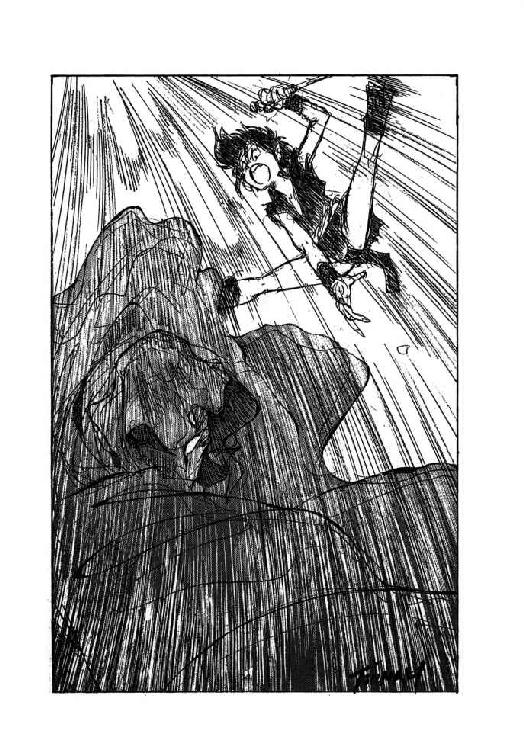
「頑張れーっ、ロコーッ！ そんな黒坊主、ぶっ殺しちゃえーっ!!」
例によって賑やかに、縞兎娘が猫少年に声援を送る。影人第一番に文句をつけられて、世話係の少女たちは全員大集会場の外へ追い出されてしまったが、その程度の事でめげる彼女ではない。
しかし今度は、味方側から文句がついた。デュークがルナの傍に寄って、小声で耳打ちしてきたのである。
「大声で応援するのは、止めさせて下さい。一つ間違うと、加勢と判定されます。声を媒体にして、超能力を発揮する上級影人も存在しますし」
「わかったわ」
うなずいて、ルナはいきなりリルの口をぱっと塞ぐ。
「うぐぐぐぐぐぐぐ......」
「一生懸命に応援してるとこ悪いけど、大きな声援は反則に取られる事があるんだって。そうなったら、あんた、冗談抜きで生命がないのよ。だから、応援してもいいけど、大声は禁止。わかった？ わかんないなら、わかるまで口を塞いどくからね」
相手に何も言わせずに、言いたいだけの事を言うと、ルナはリルの顔をのぞき込んで同意を求める。そして縞兎娘がうなずくと、とりあえず口から手を離す。もちろん、それで大人しく黙っているリルではない。
「ルナ！ あたぁ......」
「大声は禁止って、言ったでしょう？」
抗議しかかった縞兎娘の口を、ルナは再び、ぐいとばかりに塞ぐ。いくらもがもが暴れたところで、この相手に体力で対抗できるわけがない。結局彼女は、猫少年が闘っている間、ずっと魔獣公女に口を塞がれていた。
一方、当然ながらそんな状況は全然知らず、猫少年は黒衣の影人と相対していた。混血影人の話では、この相手は身が軽いのが身上だそうだが、なぜかちっとも動こうとしない。一瞬の隙を狙っているんだろうか、と、いぶかしく思いながらも、彼は相手の動きを注視し、短剣を構えたまま動かない。
実際、いぶかしく思っているのは、当の猫少年ばかりではない。軍師役のデュークも、不動の構えを決めこむ相手に、内心首を傾げていた。
「まさか、消耗を待っているのか？」
彼が小さく呟いた瞬間、影人戦士が不意に動いた。ぐいと腕を伸ばして、無雑作に相手を摑みに出たのである。
その動作を見たとたん、デュークは思わず小さく呻いた。何と、猫少年の相手として出てきたのは、身が軽い九十五番ではなく、力自慢の八十七番だった！ あの腕に摑まれたら、猫少年の華奢な頸骨など、簡単にへし折られてしまう！
「しまった！ 騙された！」
「ええっ!?」
デュークの呻きに、ルナも、強化斬魔獣剣士も、無謀戦士も、鮫鷲獅子さえも一瞬顔色を変える。事情がわからない上に、口まで塞がれている縞兎娘だけが、鮮碧色の目を不審そうに瞬かせる。
しかし、猫少年は軍師の予想以上に機敏だった。相手の腕を素早くかいくぐり、間合いを詰めて短剣を突き出す。影人戦士は後方に跳んで攻撃を躱したが、それこそ猫少年の狙い通りの動作だった。
「しめたっ！」
思わず口走りながら、猫少年は相手よりも大きく空中に跳び上がり、そのままくるっと身体を丸めて有翼猫の姿になる。そして、完全に虚をつかれた相手の無防備な後方に逆落としに回りこみ、鋭い牙でがぶりと首筋に咬みつく。
「ぐわーっ！」
覆面の下で、影人戦士が苦悶の叫びを上げる。しかし叫びながらも、彼は同時に両腕を後頭部に回し、有翼猫の身体を捕まえようとする。その闘志は立派だが、残念な事には動作があまりにも鈍い。
「おっと！」
機敏な有翼猫は、相手の両腕を躱し、頭部を蹴って素早く飛び去る。そして、ばさっと翼を鳴らして、悠々と正面に回りこむ。こうなると、三次元機動のできる飛行生物は、圧倒的に有利だ。
「おのれぃ！」
影人戦士は目を血走らせ、逆上気味に両腕を広げて、何としてでも有翼猫を捕まえようと突っ込んで行く。と、嘲弄するかのようにすぐ目の前をひょいひょいと逃げ回っていた相手が、不意に十本の爪を剝き出して、彼の顔面めがけて飛び込んで来た。
「それーっ！」
「ぎゃあーっ!!」
顔面をめちゃくちゃに搔き毟られ、影人戦士は身の毛もよだつような悲鳴を上げる。ほとんど反射的に、両腕を顔の前でぶんぶん振り回すが、既に有翼猫はさっさと身を躱しており、手ごたえは全くない。
「くそう！ くそう！ くそう！」
口惜しさのあまり涙を流しながら、影人戦士はやたらに両腕を振り回す。顔を搔き毟られたせいか、視覚がほとんど働かない。わかるのは、顔と首筋にだらだらと自分の血が流れ落ちている、という感覚だけだ。
と、不意に喉元にひやりと冷たい感覚が走り、影人戦士は本能的に全身を硬直させた。そして、その不快な感覚に続いて、落ち着いた少年の声が彼の耳に入って来る。
「わかるかな？ 僕はあなたの喉元に、短剣を突きつけています。すぐに降伏しなければ、このまま喉を切り裂きます。どうします？」
「......降伏する」
もしも一瞬の隙を突かれて逆転されたのならば、彼は喉を裂かれても、屈せずに反撃の構えを見せただろう。喉元に短剣を突きつけられた事実よりも、最初から最後まで完全に翻弄されたという敗北感が、誇り高い影人八十七番に降伏を選ばせた。
「ふーっ、よかった」
降伏した影人戦士がそのまま崩れ倒れ、治療士らしい影人たちにあたふたと連れ去られるのを見やって、ルナは大きく溜息をついた。
「十九が、しまった、とか口走り出した時は、本当にどうなる事かと思ったわ」
「正直なところ、幸運でした。彼の戦闘力が私の予想を上回っていたのと、相手が思った以上に鈍重だったから、勝てたようなものです」
そう言って、デュークはふーっと溜息をついた。
「それにしても、決闘者の出場順を入れ替えるとは、姑息な真似をする。上級影人が出場する時には、顔を晒している以上、こんな小細工はできないだろうが......」
「何を仕掛けて来るかわからん、と、いうわけだな」
無謀戦士が、むっつりとした表情で言葉を継ぐ。元暗殺者は小さくうなずき、竜神公に目を向けた。
「竜神公の嗜好には合わないと思いますが、この場合、敵に情けをかけるとろくな事はありません。先刻の場合のように、相手が下っ端で、形勢が完全に決まっているなら、降伏を勧告するのもいいでしょう。しかし、相手が上級影人の場合は、殺せる時に確実に殺さないと、必ず後に禍根を残します」
「そうね。確かにその通りなのよね」
少なくとも、理屈では重々わかってるんだけどね、と、ルナは小さく呟いた。そこへ、まさに得意満面の表情で、猫少年が戻って来る。
「やりましたよ、ルナ様！ リムズベル城で酷い目に遭わされた、雪辱ができました！」
「うん、やったね！ おめでとう、ロコ！」
にこっと笑って、ルナは猫少年の頭に、ぽん、と手を置いた。そのとたん、その手でずーっと口を塞がれていた縞兎娘が、ふーっと大きな溜息をつく。
「あーっ、苦しかった。本っ気で窒息するかと思った。ルナ、あた人妻になったら、いっきなり性格悪くなったじゃない？」
「かもしれないわね」
彼女は、澄ました顔でうなずいた。すると、ちょうどその時、影人第七番が二戦目開始の宣言を始める。
５
「おのれ、怪獣め！」
影人九十五番をあっさりと押さえ込み、降伏させた鮫鷲獅子が、悠々と引き上げて行く姿を見やって、影人第一番は憤怒に満ちた呟きを洩らした。
「いきなり巨大化した上に、翼を出して宙を飛ぶとは、何と非常識な奴だ！ あんな怪獣が決闘者の員数に含まれているとは、人を馬鹿にするにも限度があろうが！」
「御憤慨になられるのは当然ですが、第一番、しょせん五十番以下の下級影人は、消耗品としてしか使えませんよ」
現存する上級影人の中では、第一番の最も強力で忠実な腹心である第五番が、苦笑混じりに首を振る。
「真に影人族と言えるのは、超能力を備えた上級幹部だけです。まずは、第二十七番の活躍を御覧下さい」
そう言って、影人第五番は、大集会場の手前側に目を向けた。そこには、思念波増幅能力者を備えた影人第二十七番が、見事な直立不動の姿勢を取り、第七番の呼び出しを待っている。意志の強そうな四角い顔、広く逞しい肩、まっすぐに伸びた背筋、非の打ち所のない堂堂とした体格。その姿は『整然』とか『剛毅』などという言葉を、そのまま形にしたような印象さえ与える。
一方、竜神公側では、相手方と同様に、強化斬魔獣剣士ミル・ユードが呼び出しを待っていた。もっとも、こちらはあまり整然というわけには行かない。何しろ当の竜神公が、出撃寸前の強化斬魔獣剣士に向かって、まだ何やらぐずぐず言っているのである。
「だって、心配するなって言う方が無理よ！ 魔獣以外の相手には何の効果もないっていう点では、強化斬魔獣剣士は斬魔獣剣と全然変わらないんだから！ 影人族と闘う時には、あてにはできないわ！」
「わかってる。それは僕も、重々わかってるよ」
優しい、と言うより、ほとんど忍耐強い表情で、強化斬魔獣剣士は恋人に向かってうなずき返す。
「わかった上で、充分勝算がある、と、見てるんだ。大丈夫、心配いらないよ」
「だったら、その勝算の根拠を教えてよ！ でないと、あたし、心配で心配で、いても立ってもいられないわ！」
竜神公ともあろう者が、半分逆上状態になって、半分べそをかきながら、青年に向かって訴えかける。しかしミル・ユードは、優しく微笑しながらも、首を横に振る。
「駄目だよ、ルナ。たとえ無二の味方に対してだって、闘う前に手の内を明かす戦士がいるものか。もしも逆手にとられたら最後、本当に生命が危ないんだから」
「......だから、心配してるんだけどなぁ」
ったく、これなら、あたし自身が生命を懸けて闘う方が、よっぽど気が楽だわ、と、魔獣公女は思わず切ない溜息をついた。そこへ、影人第七番が呼び出しの声をかける。
「それでは、次の決闘の当事者、出ませい！」
「さあ、ルナ、席に戻って。でないと、加勢かと思われるぞ」
意図的に軽い口調で言うと、強化斬魔獣剣士は恋人の唇に、素早く自分の唇を重ねた。そして、尚も心配そうなルナに、にこっと微笑みかけると、そのままゆっくりとした足取りで大集会場の中央へと進む。影人第二十七番を見据える彼の目には、もはや優しさや甘さの微細片も残っていない。
開始の合図がかかった後も、強化斬魔獣剣士と上級影人戦士は、しばし動かず睨み合う。影人は胸の前で両手を組み、何やら指で奇怪な形を作っている。一方、ミル・ユードは、強化斬魔獣剣士のに手をかけ、相手に隙があれば抜き打ちにしようという構えだが、その強化斬魔獣剣が通常の武器としては全く役に立たない事を知っているルナとしては、傍から見ていて気が気ではない。
「どうするつもりなのよ、ミル......」
彼女が呟いた瞬間、影人戦士の方が動いた。彼は、胸の前で組んだ両手を、額のところまでゆっくり差し上げたかと思うと、そのまま腕を伸ばして、相手に向かって組んだ両手を突きつける。
「かあああああああああああっ!!」
影人第二十七番の喉から、強烈な気合が発せられる。同時に、気合を浴びた青年の表情が苦悶に歪み、喉からは押し殺したような呻きが洩れる。
「む、むうっ......」
「ミル！」
ルナの顔から血の気が引き、全身から冷たい汗が流れ落ちる。彼女には、愛する人の苦悶する姿を見て興奮する、などという倒錯した感覚は、それこそ微細片ほども備わっていない。
一方、影人第二十七番には、敵の苦悶を見て興奮するという、一概に倒錯とも言いきれないが、あんまり気色の良くない感覚が備わっているらしい。呻き声を上げる相手を見据える彼のいかつい容貌に、にんまりと嬉しそうな笑みが刻まれる。そして再び、その喉から強烈な気合が発せられる。
「かあああああああああああっ!!」
「むむむっ......」
強化斬魔獣剣士は剣のに手をかけたまま、まったく何の方策もなく、敵の気合攻撃に痛めつけられるままになっている。これでは勝負にならないな、と、見物している影人族の大部分が思った。
しかしルナは、強化斬魔獣剣士の周囲に、透き通るような蒼い光輝が淡く揺らいでいるのに気がついた。あれは、強化斬魔獣剣の対魔獣防御障壁に間違いない。
「だけど、どうして......？」
恋人に何か意図があるのはわかるのだが、その狙いがもう一つ読みきれず、魔獣公女はわずかに眉を寄せて状況に見入る。
「かあああああああああああっ!!」
その間にも、影人第二十七番の気合が容赦なく炸裂し、ミル・ユードはついにがくりと片膝を折る。上体も、半ば伏せるように折り曲げられ、表情には苦悶の色が濃い。
「く、くくっ、むむむむっ......」
「ふっふっふっふっふ、そろそろ限界かな？」
残忍な笑みを浮かべて、第二十七番は、一歩、二歩と、ゆっくりと間合いを詰める。彼は以前から、どんなに思念で相手を痛めつけても、最後の止めはできるだけ自分の腕で行なう事に決めている。そうしないと、正直なところ、敵を殺した実感が湧かない。
「では、一思いに楽にして進ぜよう」
相手のすぐ傍まで接近すると、第二十七番は組み合わせた両手を解き、強化斬魔獣剣士の頭部に摑みかかろうとする。と、その瞬間、ミル・ユードの唇から鋭い気合が発せられた。
「てえええいっ！」
「おっと！」
抜き打ちに斬りつけられた強化斬魔獣剣を、しかし、第二十七番は見事に躱す。そして、影人にしては珍しく大哄笑を上げながら、容赦なく思念を叩きつける。
「わっはっはっはっはっはっは！ 力尽きた演技に騙されて、油断するとでも思ったか！ それ、これでも食らえ！ かあああああああああああっ!!」
至近距離で強烈な気合が炸裂し、強化斬魔獣剣士は完全に吹っ飛ばされたかに見えた。しかし、その瞬間、不意に彼の全身から蒼い閃光が放たれ、逆に第二十七番の方が、強烈な衝撃を受けて転倒する。
「なっ、何いっ？」
「済まないが、騙させて貰った」
落ち着いた声が聞こえた、と、思った瞬間、第二十七番の太い頸が、見事な手際ですぱっと刎ね飛ばされる。いつの間にか強化斬魔獣剣を鞘に納めたミル・ユードが、右腰に差していた短剣を振るったのである。
「やった......勝った......」
優雅な動作で返り血を避け、短剣をぴっと払って鞘に納める恋人を見やって、ルナはふーっと大きな溜息をつく。
「いったい、どんな策略を使ったのか知らないけど、とにかく、これで、ミルは自分の割り当てを果たしたわけよね......」
とりあえず、彼が影人に斃される危険性はなくなった、と、彼女は額の汗を拭いながら呟いた。当面は、余計な事を考えずに、その事実を感謝しよう。少なくとも、次の対決が始まるまでは。
６
「要するに、軍師が立てた作戦が見事に的中したんだよ。僕は、単に言われた通りに行動しただけなんだ」
そう言って、強化斬魔獣剣士は恋人に向かって微笑する。
「作戦の基本になったのは、敵の能力分析だからね。他人の思念を増幅して使う超能力者が、一対一で闘う時、いったい誰の思念を利用するか。軍師は、そこに着目したんだ」
「......あ！ そうか！」
不意に納得した表情になって、ルナは大きくうなずいた。
「あいつが使ってたのは、闇の魔獣の思念だったのね！」
「その通り」
うなずき返して、青年は大集会場の内部をぐるりと見回す。
「確かに、この地下構造全体が闇の魔獣の思念に満たされているんだから、利用する気になれば、これほど使いやすい思念はない。力の強大さは保証つきだし、相手が従属種族なら、ほとんど抵抗できないしね。君の魔獣誅伐光線と、同じだな」
「だけど、魔獣の思念は強化斬魔獣剣で防げる！ それに気がつかなかったのが、敵の敗因ってわけね」
きゃっ、と嬉しそうに笑う恋人に、強化斬魔獣剣士は軽い苦笑を向けた。
「気がつかせないようにするのが、こっちの作戦だったんだよ。奴が増幅できる思念は、闇の魔獣の思念だけじゃないからね。攻撃が無効になっている事に気づかれて、別の思念に切り替えられたりしたら、こうも簡単に斃す事はできなかっただろう」
「なーるほど。じゃあ、ミルが奴の思念攻撃で派手に苦悶してみせたのは、絶妙の名演技だったわけか」
貴方もなかなか芝居っ気があるじゃないの、と、ルナが笑いかける。すると彼は、苦笑混じりに肩をすくめた。
「半分は演技だけど、全然苦しくなかったわけじゃないんだ。増幅された闇の魔獣の思念を完全に遮断するためには、強化斬魔獣剣の防御力をかなりの水準まで上げなきゃならない。そうすると、蒼い光輝が派手に出すぎて、防御をしている事が歴然としてしまうんだよ」
「えっ？ それじゃ、完全には防御してなかったの？」
紺色の目を丸くして、ルナが訊ねる。そして、苦笑しながらうなずく恋人に、彼女は半分食ってかかるような口調で言い募った。
「何て危ない真似するの！ 他の思念ならとにかく、増幅された闇の魔獣の思念なんて、迂闊に受けたら一発で正気を失っちゃうわよ！」
「一応、耐えられる範囲内で防御はしたけどね。でも、ルナ。最強の従属種族と称してる影人族や、他ならぬ闇の魔獣相手に、危険を冒さず勝とうとする方が無理だよ。現に、叔父上や十九が勝つために冒そうとしている危険は、僕よりも遥かに大きいんだ」
そう言って強化斬魔獣剣士は、大集会場の中央に目を向けた。ちょうど、無謀戦士と影人第二十番が呼び出されるところである。
影人第二十番は、背が低く瘠せこけた初老の男である。両目を薄く開き、両腕をだらりと垂らし、巨漢の無謀戦士と向き合うと、まさに一捻り、と、いう印象にしかならない。
ところが、開始の声がかかると同時に、第二十番はかっと両眼を見開いた。その両眼には瞳がなく、爛々と白い妖光を発している。
そして、第二十番が瞼を開いたとたん、いきなり彼の周囲に、身も凍るような冷風が渦巻き始めた。空気中の水蒸気が急激に冷やされ、白い靄となって第二十番の身体を包みこむ。
「おのれ、妖怪めが！」
罵声と共に、無謀戦士は斧剣を振りかざして突撃する。すると、彼の真正面から、凄まじい冷気が顔面に吹きつけてきた。
「く、くわっ！ お、おのれっ！」
左腕で顔面を庇いながら、無謀戦士は敵の側面に回りこもうとする。しかし、どの方向に回っても、冷気は的確に彼の真正面から、顔面を襲って来る。腕で庇っても、とうてい庇いきれる状況ではない。たちまち無謀戦士の髪、髭、そして眉や睫毛まで、真っ白く霜がついて凍りつく。
「うぬぬぬぬっ、お、おのれっ......」
無謀戦士はぎりぎりと歯嚙みをするが、これではとても前進できない。このままでは全身が凍りつく、と、判断したのか、不意に彼は、助走もつけずに大きく空中に跳び上がった。
「どおおおおおおおおお、りゃあああああああああっ！！！」
裂帛の気合と共に、無謀戦士は白い靄の上方から、渾身の力を込めて斧剣を打ち下ろした。しかし、同時に靄の中から、圧倒的な冷気が吹き上がり、下方から無謀戦士を直撃する。
「うおおおおおおおおっ!!」
無念の咆哮と共に、無謀戦士の巨体は空中で激しく弾き飛ばされ、したたかに大集会場の床に叩きつけられる。続いて、吹き上がった冷気が大量の靄を巻き込んで白い滝と化し、倒れた無謀戦士に容赦なく襲いかかる。
「ぐおおっ！ ぐっぐぐぐ、ぐううっ......」
冷気に直撃された瞬間、無謀戦士は反射的に咆哮を上げて跳ね起きようとする。しかし、白い靄を吹き上げながら、続けざまに叩きつけられる冷気の凄まじい圧力に、さすがの無謀戦士も起き上がることができず、そのまま床に倒れて動かなくなる。雪崩に吞まれる巨大熊を思わせるその姿を、やがて、渦巻き流れる靄が覆い隠す。
「お、おっさん......」
浸透して来る冷気にがたがたと震えながら、ルナは大きく目を見開いて呻く。魔獣に挑む無謀戦士が、影人なんかに負けるわけはない、と、思いたい、信じたいが、この状況は、あまりにも絶望的だ。
「まさか、やられちゃったの......？」
「そんな馬鹿な......叔父上ともあろう戦士が......」
彼女の傍で、強化斬魔獣剣士が引き攣った声で呟く。こ、これは、もしかして、もしかすると、本気でまずいかも知れない、と、ルナは思わず口元に拳を当てた。しかも、そこへ追い討ちをかけるように、背後のデュークまで小声で唸る。
「......無理だったのか」
「そ、そんなぁ......」
ルナの目の前に、アイーナ夫人の笑顔や、幸福そうに目をうるませるリオネル、生まれたばかりのヴェローナなど、種々の幻がちらつき出す。大声は御法度と戒められた事など完全に忘れて、彼女は思わず有らん限りの声で叫んだ。
「冗談でしょ、おっさん！ 奥さんたちと子供たち残して、こんなところで倒れる気っ!?」
「ルナ様！」
デュークが小声で、しかし鋭く制止する。はっと気がついて、彼女は口を閉じ、ぎゅっと唇を嚙む。
しかし、竜神公の叫びも空しく消え、無謀戦士の雄姿は靄の中に埋もれたまま現れない。一方、影人第二十番の周囲からは靄が消え、その小柄な姿があらわになる。白く輝く両眼を見開いた、妖怪じみた第二十番の容貌を見据え、ルナは小さく呟いた。
「おっさん......仇は、あたしがきっと討つわ」
だけど、あの冷気にどうやって対抗しよう、と、彼女は真剣に方策を考える。相手が靄で姿を隠す前に、魔獣誅伐光線を叩き込むのが最善なのだろうが、そう都合よく行くだろうか。
と、第二十番の両眼から放たれる白い妖光が薄れ、瞼が下りて半眼に閉じられる。同時に、冷気も急速に衰えて、立ち込めていた靄も瞬時に散る。
そして、靄が散った後の大集会場の床には、びっしりと白い霜に覆われた無謀戦士の身体が横たわっていた。最後に視界から消えた時と同様に、身体を丸め、四肢を縮めて伏せた姿勢を取っている。
すると、無謀戦士の身体の傍へ、第二十番がゆっくりと近寄って行った。敵の絶息を確認しようというのか、それとも念の為に首でも折っておくつもりなのか、目を半眼に閉じた表情からは何の感情も窺えない。もはや勝負はついたはずなのに、ルナは何となく緊張して、強化斬魔獣剣士に囁いた。
「あいつ、何をする気なのかしら？」
「さあ......」
首を傾げながらも、彼も第二十番にじっと視線を据えている。何だか奇妙な緊張感が、大集会場全体に立ち込める。
と、不意に第二十番が、大きく後方に跳び退いた。同時に、それまで微動すらしなかった無謀戦士が、ばきばきばきっと凄い音を立てて起き上がる。そして、彼が起き上がるのを見た瞬間、ルナが躍り上がって叫んだ。
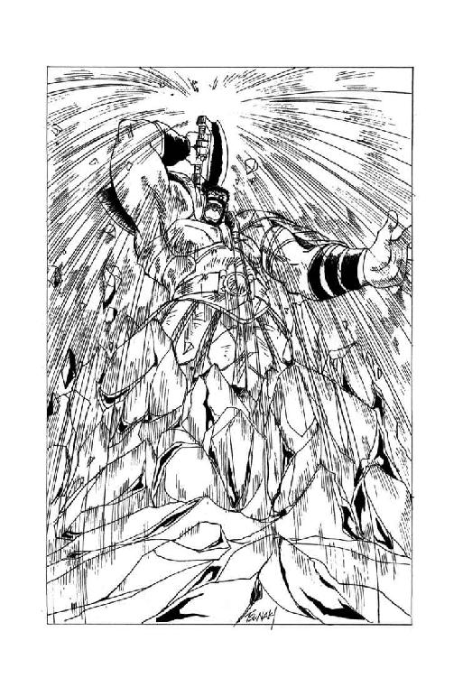
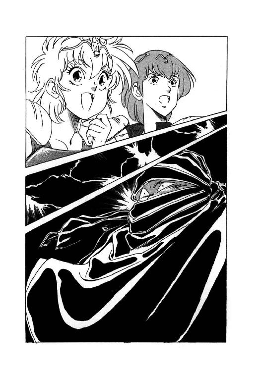
「やったーっ！ やっぱりやったーっ！ やっぱり生きてたーっ！」
「し、信じられん。本当に生きているのか？」
心底呆然とした声で、デュークが呟く。確かに、無謀戦士の全身は霜と氷で覆われ、顔色は血の気がないのを通り越して、まるで青銅仮面のように青黒く、とてもじゃないが生きた人間とは見えない。
しかし、それでも無謀戦士は、ばきっ、ばきっと関節を鳴らしながら、第二十番に向かって歩を進める。その動作のぎこちなさは、どう見ても、あまり上等ではない青銅像戦士か、硬直しかかった生屍人戦士以外の何者でもない。いったんは飛び上がって喜んだルナも、彼の動きのあまりの不気味さに、今は息を吞んで状況を見つめている。
もちろん、生きているのか死んでいるのかわからないが、とにかくひたすら迫って来る無謀戦士の恐怖を、一番切実に味わったのは影人第二十番に違いない。彼はたじたじと後方に退がりながら、両眼を開いて冷気を操ろうとするが、恐怖のためか、それとも既に超能力の限界なのか、冷たい風がさやさやと動く程度の現象しか起きない。両眼の妖光も力がなく、もはや単に白目を剝いているようにしか見えない。
そして、目の前に迫った無謀戦士が、ばきばきばきっと音を立てて斧剣を振りあげた瞬間、影人第二十番は、悲鳴のような声で叫んだ。
「降参する！ 降参するから、助けてくれ！ 儂の前から消えてくれ！」
その声を聞いた瞬間、青銅仮面のように無表情に強張っていた無謀戦士の顔貌に、凄まじい笑みがにやりと刻まれた。そしてそのまま無謀戦士の身体は、呪文が途絶えた彫像戦士のように、勢いよくばったーんと仰向けに倒れる。
「い、生きてるの？ 死んでるの？」
ほとんど夢中で無謀戦士の傍に駆け寄りながら、ルナは、自分と同時に飛び出した強化斬魔獣剣士に訊ねる。すると彼は、苦渋と感嘆を含んだ複雑な表情で即答した。
「それは僕にもわからない。しかし、叔父上が勝った事だけは確かだ」
７
「やりましたぁ！ 蘇生しましたぁ！」
全速力で女主人の前にすっとんできた有翼猫が、弾んだ声で報告する。
「バト・ロビス様、たった今、息を吹き返しましたぁ！」
「やったぁー」
心底安堵した表情で、ルナが叫ぶ。その背後で、デュークが深い息をふーっと吐いた。
影人第二十番と文字通りの死闘を繰り広げた無謀戦士は、相手から降伏を勝ち取った後で倒れたが、その時の状態は、誰が見ても凍死体としか思えなかった。しかし、どうやら医術の心得もあるらしいデュークが、これは仮死状態だと断言し、影人族の臨時族長代理第七番にかけ合って、可能な限りの蘇生処理を施させたのである。
無謀戦士の蘇生処理に立ち会ったのは、強化斬魔獣剣士と有翼猫、それに野次馬の縞兎娘である。本当は、ルナも立ち会いたかったし、デュークも同行させたかったのだが、彼女たちはまだ決闘が終わっていない当事者なので、大集会場から外に出る事を許されなかった。もっとも、何か面倒事があるらしくて、デュークと影人第五番の決闘は、まだ開始されていない。
とにかく無謀戦士は、今度こそ本当に蘇生した。ルナは、デュークに向かって、にっこりと感謝の微笑を浮かべる。
「ありがと、十九。これもみんな、あんたの功績よ」
「過分なお誉めの言葉、真に畏れ入りますが、私の名は十九ではなくてデュークです」
苦笑混じりに訂正しながら、元暗殺者の混血影人は恭しく頭を下げた。そして、あれ、そうだっけ、と、首を傾げる竜神公に向かって、淡々とした口調で告げる。
「しかし、バト・ロビスが蘇生して本当に良かった。もしも第二十番が降伏した時点で、彼が実は死体だったと判定されたら、降伏が無効になる危険性がありましたからね」
「へえ、そうなの？」
きょとんとした表情で訊ね返す竜神公に向かって、デュークは簡単に説明する。
「そうです。決闘の規則では、殺されたら負けですからね。いったん殺された後で相手を降伏させても、既に負けているわけですから、無効です」
「何だか変な話ね」
とりあえず無謀戦士は生きてたんだから、そんな事どうでもいーじゃない、と、ルナは小さく肩をすくめる。するとデュークは、真面目な表情で首を振った。
「変な話では済みませんよ、竜神公様。もしもさっきの降伏が完全に無効になっていたら、あなたが第二十番と闘わなくてはならなかったんですからね。それも、第一番と同時に、二人を一度に相手にするわけですから、凄まじく不利になる瀬戸際だったのですよ」
「あ、そうか......」
ルナは思わず、うそ寒そうな表情になる。第二十番と闘う事になるかも知れないとは思ったけど、第一番と同時だっていうのを忘れてた。確かにこれは、苦戦必至だ。
もっとも、最初はあたし、六対一で闘う気でいたのよね、と、彼女は内心戦慄しながら呟いた。うう、今になって考えてみると、これは完全に無謀だった。とんでもない窮地に陥る寸前だった。上級影人族の実力を、甘く見てたのは間違いない。
と、竜神公が表情を引き攣らせるのを見やって、デュークは小さく苦笑する。
「もっとも、第二十番も、あれだけ明瞭に降伏を口にしましたから、そのまま竜神公の相手はさせられないでしょう。実は、私が最も怖れていたのは、第二十番が私を相手に再戦するよう裁定が下った場合なんです。ああいう、目標を定めずに攻撃のできる能力者は、私にとってはもっとも苦手な相手ですからね」
「なるほどね。だけど、第五番は違うの？」
竜神公の質問に、デュークは穏やかな表情でうなずく。この方に、自分が一度第五番に完敗した事がある、などと明かす必要はない。
「第五番の空間切断能力は、防御方法がほとんどない強力な能力ですが、狙いが外れれば、何の役にも立ちません。私の認識攪乱能力で、奴が空間を切断する狙いを外すことができれば、私の勝ちです」
淡々とした口調で言うと、デュークは針のように細い愛用の短剣を、服の合わせ目からちらりと覗かせた。影人族は一般的に武器の使用を嫌うが、彼にはそんな禁忌はない。
以前、他ならぬミル・ユードの生命を奪いかけた事のある凶器を目にして、ルナはごくわずかに眉を寄せた。しかし、彼女はすぐにデュークの冷静な顔に視線を転じ、真剣そのものの表情で訊ねる。
「もしも、認識を攪乱できなかったら？」
「私の首が飛びます」
当然のような口調で、元暗殺者は返答した。いずれにしろ、竜神公の目には真実の戦闘経過が見えるだろう。そしておそらく、影人第一番の目にも。
しかし、それ以外の大部分の見物人には、何が起こっているのか全く理解できないに違いない。彼が総力を挙げて認識攪乱能力を使用すると、神獣公や影人族上級幹部の一部を除いて、周囲にいるすべての人物が、彼の存在を認識できなくなる。問題は、影人第五番が、除かれる一部の上級影人に含まれるかどうかだが、それは、試してみなければわからない。
竜神公はもう少し、彼に何か訊ねたいように見えた。しかし、その時、大集会場に強化斬魔獣剣士と縞兎娘、それに呆れた事には、蘇生したばかりのはずの無謀戦士が入って来る。
「おお、十九！ もう、勝ったのか？」
入って来るなり、無謀戦士はデュークに無雑作な調子で訊ねた。混血影人は苦笑して、小さく首を横に振る。
「いや、これからだ」
「そうか。とにかく、俺は勝った。あまり誇れるような勝ち方ではなかったらしいが、まあ、勝ちは勝ちだ。だから、お主も勝て」
にこりともせずに言い放つと、無謀戦士は左手にぶら下げた瓶に口をつけ、中の液体をぐいぐいと吞む。そして、デュークに向かって、その瓶をぐいと突きつけた。
「本物の帝国軍用黒芋焼酎だ。お主も吞むか？」
「いや、勝負の前だ」
さすがにいささか辟易した調子で、デュークが断わる。すると無謀戦士は、彼の顔をじろりと見やって首を振る。
「一口や二口、酒を吞んだ程度で、勝負に支障があるようではいかんな。もっとも、俺も他人の事は言えんか。先刻の勝負の前に、この酒をたっぷり吞んでおけば、あんな無様な真似はせずに済んだものを」
いまいましそうに唸りながら、無謀戦士は更にぐいぐいと酒瓶を傾ける。
「まったく、冷凍能力者相手に酒を用意しておく事を思い付かなかったとは、俺の勝負勘も鈍ったものだな。吞酒戦士の奴に、嘲笑されそうだわい」
どうも故郷に帰ると、その後の勝負勘が鈍っていかん、などと勝手な事を言いながら、無謀戦士は更に酒瓶を傾けようとする。しかし、既に酒瓶は空になっており、彼は太い眉をぐいと寄せて怒鳴った。
「酒はまだあるか？ あるなら代わりを出せ！」
「へいへい。まーだまだ、たっぷりありますですよ」
大量の酒瓶を詰め込んだ袋を背負った小柄な影人が、無謀戦士の陰からちょこちょこと進み出て、愛想よく笑いながら新しい酒瓶を渡す。その影人の、半眼に閉じられた目を見て、ルナは一瞬自分の目を疑った。
「あ、あああああ、あんたは！」
「そうなんだ。影人第二十番なんだよ。叔父上が蘇生するが早いか、お仕え申し上げたいと言って押しかけてきたんだ」
強化斬魔獣剣士が、多少疲れたような表情で苦笑する。
「それで叔父上が、今すぐ酒を調達してきたら雇ってやってもいい、と、言ったんだよ。そしたら、いったいどこから持ってきたのか、袋いっぱい酒瓶を担いできてね。後はもう、御覧の通りさ」
「へーえ......」
どこに行っても、つくづく食糧調達役に事欠かない人ね、と、ルナは呆れ返った表情で、無謀戦士と影人第二十番を均等に見やった。だけど、無謀戦士がこーゆー状況を気にしないのはわかるけど、影人の方はどーゆーつもりなのかしら？ まさか、傍近くに仕えて、雪辱の隙を窺ってるわけでもないでしょーに。
と、彼女の目つきで疑問を察したらしく、強化斬魔獣剣士が苦笑混じりに説明する。
「一般の影人戦士ならとにかく、上級影人が決闘で降伏するというのは、滅多にない事なんだそうだ。そして、降伏した上級影人は、自害するか、再び相手に決闘を申し込んで雪辱を果たすか、相手に完全服従するか、どれかを選ばなければならない。普通は、雪辱を狙うものなんだそうだけどね」
「ええ、そうです」
さすがに意外そうな表情で、デュークが軽く肩をすくめる。
「上級影人の降伏を許すと、雪辱を狙ってきて際限がない。だから私は、上級影人と決闘する時には、必ず殺さなくてはなりません、と、竜神公に進言したんですがね」
「雪辱するためには、再度このお方と闘わなくてはならん」
さっそく新しい酒瓶をぐいぐいと傾けている無謀戦士を見やって、影人第二十番が、意外に真面目な口調で呟く。
「勝負の結果がどうなろうと、二度とあんな経験は御免じゃ。考えただけでも、ううう、身震いがするわい」
「ひやー。冷凍能力者に身震いさせるとは、さすが天下の無謀戦士ですねー」
有翼猫が、何だか妙な感心をする。その顔を半眼の目でじろりと見やり、影人第二十番は面白くもなさそうに言葉を継ぐ。
「だから儂は、バト・ロビス様に完全服従して、誠心誠意お仕え申し上げる道を選んだんじゃい。何か文句あっか」
「いや、あんたの気持ちは良くわかる」
真摯そのものの口調で言うと、デュークが大きくうなずいた。そして、第二十番が何か応じようとした時、臨時族長代理の影人第七番が朗々とした声で宣言する。
「これより、決闘を再開する！ 次の当事者は、所定の位置へ！」
８
「まさか俺の相手に、よりにもよってお前を持って来るとはな。要するに、この組み合わせは捨て勝負という事か」
進み出てきたデュークを見やって、影人第五番はあからさまな嘲笑を浮かべる。
「竜神公に仕えても、消耗品扱いは変わらないようだな。え？ 何とか言ったらどうだ、影人五百二十六番」
第五番の露骨な嫌味を、デュークは自分でも意外なほど平静な心境で聞き流す。せいぜい半日前、影人第二十九番にこの番号で呼ばれ、思わず身震いしていたのが、まるで遥か昔のような気がする。
俺は変わった、と、彼は内心呟いた。忠誠を誓ってから、まだ一日足らずだが、竜神公が俺を変えた。たとえここで、この馬鹿者に斃されても、竜神公の配下として死ねるなら悔いはない。
「男子、三日会わざれば、即ち、刮目して見よ」
いつか好機があったら使ってやろうと、前から用意しておいた言葉を、デュークは重々しく第五番に告げた。すると案の定、第五番は当惑したような表情になる。
「何だ、それは？ 何かの呪文か？」
「教養のない貴様などにはわかるまい。竜神公にお仕え申し上げるには、知性と教養が不可欠なのだ」
昂然と言い放って、デュークは鼻先でふふっと嘲笑する。第一番と同様、他人を嘲弄する機会は多くても、自分が嘲弄された経験があまりない第五番は、たちまち憤怒で顔面を紅潮させる。
「貴様ぁっ！ 最下位者の分際で、上級中の上級である、この第五番を侮るか！」
「これから決闘をしようというのに、最下位も上級もあるか。馬鹿」
余裕綽々の態度で、デュークは第五番に挑発の言葉を投げつける。いや、彼にしてみれば、別に挑発しているつもりはない。生まれて初めて、上級影人に対して、思った事を思った通りに口に出しているだけだ。
と、そこへ、第七番の開始の声がかかった。同時にデュークは、認識攪乱能力を全力で発動させる。
以前、デュークがこの男に認識攪乱能力を破られた時には、彼が十二歳、この男が十四歳だった。その時も、彼の番号は五百番台で最下位だったが、相手は、まだ第五番ではなかった。それでも確か、第三十番か第三十二番か何かで、しっかり上級幹部だったのは間違いない。
当時、彼は自分に認識攪乱能力があると知ったばかりだった。混血である以上、序列を上げる希望なんぞは最初から捨てていたが、それだけに、能力を磨いて、一族のために有用な存在になりたかった。序列は低くても、いざと言う時あいつが居ないと困る、と、言われる男になりたかったのである。
そのため、彼は懸命に能力を磨いた。本来、超能力を備えた影人族は上級幹部になるわけだから、その訓練のためにはあらゆる便宜が図られる。しかし当然、彼には誰も便宜を図ってくれなかったし、彼の方も期待はしていなかった。
そして、彼が実行した訓練方法は、認識攪乱に失敗したら生命が危ないような窮地にわざと自分を追い込み、能力の限りを尽くして脱出する、という、極めて無謀な代物だった。その訓練中に、本来立入を禁じられている上級幹部専用の場所に踏み込んだ彼は、今、目の前にいる男の認識を攪乱し損ねて、発見され、捕獲され、死ななかったのが不思議なくらいの過酷な処罰を受けた。
「本当に若かったな、あの頃は」
苦笑しながら、デュークは第五番に歩み寄った。相手の目は、明らかに彼の姿を捉えかねており、ときどき全然見当違いの場所で、空間がばさっと裂ける気配がする。最初は憤慨のため紅潮していた第五番の顔色は、今や、蒼白に近くなっていた。
一方、この決闘を注視している影人第一番の顔色も、第五番本人に劣らず蒼ざめていた。天才的な感覚欺瞞能力者である彼には、デュークが張りめぐらしている認識攪乱の罠が、まさに手に取るようにわかる。しかし、彼のかけがえのない忠実な腹心で、強力な上級影人の第五番には、その罠が全く見えていないらしいのだ。
「馬鹿な！ たかが、五百二十六番、最下位者の、混血影人の張った罠ではないか！ お前ほどの上位者が、なぜそれを見抜けぬ！ あ、あああ、馬鹿、そこじゃない！ それは虚像だというのが、わからぬのか！ 違うーっ！」
こうなると、なまじ見えてしまうのが、かえって不幸としか言いようがない。彼は、今にも正気を失いそうな焦燥感に身悶えしながら、腹心の部下が敵に翻弄される光景を、何もできないままひたすら傍観する。もしも彼が、自分には見えている敵の位置を第五番に教えたりすれば、それは明らかに加勢と判断され、彼自身の生命が奪われる。
そして、第一番が卒倒寸前の形相で見守る中、デュークは慎重に位置を変え、気配を抑え、徐々に間合いを詰めてゆく。その動きは、二十年間の豊富な経験に裏付けられた、熟練した職業暗殺者の動作そのものである。
やがて、手当たり次弟に周囲の空間を切り裂く第五番の絶望的攻撃を、無類の巧妙さでくぐり抜け、デュークは第五番のすぐ傍に立った。彼の手には、針のように細く鋭い短剣がしっかりと握られており、その先端が標的の顳顬に突きつけられる。
その瞬間、影人第一番の、さほど強靭ではない自制心が、音を立ててぶつんと切れた。彼は反射的にすっくと立ち上がり、喉も裂けよと絶叫する。
「危ない！ 躱せ！」
「うっ!?」
これもほとんど反射的に、第五番が前方に身を倒す。同時に彼は、自分が今まで立っていた空間を、思いきり大きく切断した。
「ぐわっ！」
その瞬間、抑えきれない苦悶の叫びが上がり、何もないように見える空間から、ばしゃっと血がこぼれる。やった、殺した、と、第五番は床に伏せたまま、一瞬、目を輝かせた。
だが、更にその次の瞬間、半分振り返った第五番の眉間に、デュークの短剣が深々と突き入れられる。デュークはそのまま表情も変えずに、短剣をぐっと手前に引く。恐怖と驚愕と未練の表情を張りつけた顔面を、眉間から縦にすっぱり両断され、第五番は即座に絶命する。
その光景を、影人第一番は呆然と立ち尽くしたまま眺めていた。もっとも、彼の目には、第五番が最後の攻撃で敵の片腕を切断した瞬間も、片腕を失った混血影人が全く冷静さを失わずに第五番を仕留めた鮮やかな動作も、まるで映っていなかった。いや、目には映っていたのだろうが、脳が理解する能力を失っていたのである。
そして、彼が我に返った時には、切られた片腕に素早く止血処理をしたデュークが、臨時族長代理に向かって、落ち着いた声で糾弾を行なっていた。
「第一番は、自分の能力によって私の隠身を見破り、第五番に対して警告を与えた。これは明らかに、禁止されている加勢に相当する」
「然り」
第七番は、重々しい表情でうなずく。そしてデュークは、淡々とした口調で続ける。
「決闘に際して、意図的に加勢を行なった者は、必ず死を以て報いられる。これが影人族の掟である」
「然り」
再び、第七番がゆっくりとうなずく。するとデュークは、一気に声を高くして鋭く言い放った。
「従って、私は影人族の掟によって、決闘加勢者第一番の死を要求する！」
「おおおおおうっ！」
この場に集まっている影人族の、ほとんど全員が、一斉にどよめく。そして、そのどよめきが納まると同時に、今や臨時でも代理でもなくなった、影人族長第七番が、厳かな声で宣言する。
「要求の内容は、妥当であると認める。従って、速やかに要求の実現を......」
「待て！」
不意に、よく通る声が族長の宣言を遮る。第七番は、露骨に不快そうな表情になって、声の主を見やった。
「今更、何を待てと言うのですか、第一番。貴方の罪状は、闇神公御自身であっても覆い隠せないほど明白だ。栄光ある第一番の称号に恥じぬよう、速やかに身を処して頂きたい」
「それは自分にも、重々わかっている。今更何を言っても無駄だろうし、言う気もない」
ほとんど開き直ったような口調で言い放つと、第一番は竜神公とその一党に、憎悪に満ちた視線を向けた。
「しかし、竜神公との決闘だけは、是非とも実現させてもらいたい。そもそも私はこの決闘で、影人族としての誇りを示して、玉砕するつもりだったのだ。その機会までも奪われては、死んでも死に切れない」
「ふむ......」
影人第七番は、わずかに考え込む様子を見せたが、すぐにルナに視線を向けて訊ねた。
「竜神公殿。もはや、決闘を受けるも受けないも、貴殿の選択にお任せいたします。いかが致しましょうか？」
「受けましょう。最初から、そのつもりだったんですから」
間髪を入れずに竜神公が答え、影人たちは再び大きくどよめいた。
９
「拒絶しても、何の問題もなかったと思うんですがね」
いささか残念そうな表情で、デュークが小さく首を振る。その顔を見やって、ルナは小さく苦笑した。
「今更、言わないでよ。とにかく何だかわからないけど、受けるのが当然みたいな気分になっちゃったんだから」
「お主も結局、根っからの戦士だという事だな。この闘いは無意味だと承知しておっても、本気で挑んで来る敵に対面すると、どういうわけか無視ができん。戦士というのは、そういう生物だ」
そう言って、無謀戦士はまたぐいぐいと酒瓶を傾ける。もっとも彼は、いくら吞んでも酔わないのか、それとも外面に出ないだけか、とにかく通常と少しも変化を見せない。
「まあ、我々は存分に闘っておいて、小娘にだけ止めろというのも、釣り合いが取れまい。思い残す事の無いよう、相手をしてやれ」
「竜神公様の相手には、この後、真の大物が控えているんですよ。従属種族の自己中心的戦士なんか、悠然と無視した方がいいと思うんですけどね」
私がわざわざ第一番を糾弾した意味が、全然ないじゃないですか、と、デュークは再び首を振る。するとルナが、わずかに眉を寄せて彼に訊ねた。
「それはそうと、十九、あんたのその腕、本当にそれで大丈夫なの？」
「ええ、大丈夫です。こうやって固定しておけば、そのうち癒着します」
幅の広い布で何重にも巻いて固定してある腕を見やって、デュークは本当に何でもなさそうな口調で答えた。
「私も含めて、影人族の生命力というのは、普通の人間とは比較になりませんからね。手足を切られても、すぐに固定すれば、こうやって癒着しますし。それどころか、誰でもできるというわけではありませんが、首をすっぱり切られた後、すぐ固定して癒着させたという剛の者も実在します」
「へーっ、それは凄いわね」
ルナが素直に、紺色の目を丸くして驚嘆した。するとデュークは、真面目な表情で竜神公に告げる。
「だから、影人族を殺そうと思ったら、ここまでやるのかと思うぐらい念を入れた方がいいんです。そして、いちばん簡単で確実な方法は、脳を破壊する事です。目や鼻、上顎、眉間の周辺から、後頭部に向かって斜め上に突き上げてぶち抜く。そうすれば脳髄の主要部分を破壊できますから、どんなにしぶとい影人族でも甦ってはきません」
「......わかった。覚えとくわ」
うげー、と、内心いささか辟易しながらも、ルナはとりあえずうなずく。と、傍で聞いていた縞兎娘が、不意に口を抑えて、うぐっと喉を鳴らす。
「あ、あかん。あたい、そーゆー脳味噌ぐちゃぐちゃ引っ搔き回すよーな話は、生理的に苦手なだ」
「あら？ 意外にデリケートなのね」
そー言えばこの子は魔道都市でも、首なし死体と同居は嫌だー、とか騒いで、ファラさんの家から飛び出したんだっけ、と、ルナは小さく苦笑した。
と、影人第七番の声が、大集会場内に朗々と響きわたる。
「それでは、竜神公と影人第一番の決闘の準備を開始する。当事者は、所定の位置へ！」
「さあ、いよいよね」
呟いて、ルナは席から立ち上がり、影人が示す所定の位置に進んだ。その背を見やって、デュークが小さく呟く。
「やっぱり、竜神公様はどうにも素直過ぎる。第一番は、あの方が考えているよりは、遥かに曲者だからな。足元を払われなければいいんだが」
「心配なのは良くわかるが、素直じゃなくなったらルナじゃない。最後に決断するのは、彼女自身の権利だ」
強化斬魔獣剣士が、穏やかな口調で応じる。しかし彼の濃灰色の目は、内心の懸念を正直に表わして、恋人に据えられたまま一瞬といえども離れない。
竜神公が前に進み出ると、影人第七番が型通りの説明を繰り返す。その言葉をぼんやりと聞き流しながら、彼女は正面に出てきた影人第一番を見やった。そして、彼のあまりの変貌に、内心いささか愕然とする。
彼女の目に映った第一番には、もはや端整で高慢な影人族長の面影すらなかった。つい先刻まで君臨していた影人一族から糾弾され、この決闘の結果がどうなろうとも、恥辱に満ちた死を迎えなくてはならない。その無念と未練が彼の容貌を醜く歪ませ、怨念と憎悪が刺すような眼光になって、彼にとっては諸悪の根源の竜神公に向けられる。生きながら悪霊怨霊の類と化したような第一番と至近距離で直面して、ルナはさすがに、少なからず動揺した。
「こ、これって......」
一瞬、棒立ちになったルナの視界の中で、第一番の恨みと呪いに満ちた顔貌が、ぐぐぐぐぐっと大きく膨張する。そして、その口がくわっと開いたかと思うと、凄い勢いで宙を飛び、彼女に襲いかかって来る。
「な、な、何これっ!?」
表情を引き攣らせながら、ルナは反射的に剣を抜いて、襲いかかって来る第一番の顔面を叩き斬った。すると、がしっと重い手応えがあり、奇怪な顔面は見事に真っ二つに裂ける。やった、と、彼女は一瞬、ほっと息をつく。
ところが、裂けた顔面は、空中でそれぞれ一つの顔面に変化し、二つに増えて襲いかかって来る。ルナは半ば夢中で剣を振るうが、その度に、斬られた顔面は数を増やす。やがて、彼女の周囲一面は、恨みの形相も凄まじい影人第一番の顔面に完全包囲される。
これは幻覚だ、と、ルナは四方八方、頭上から足元まで埋め尽くす膨大な顔面群を見回し、声にならない声で呻いた。影人第一番の超能力、感覚欺瞞能力が造りだした幻覚だ。こんな現象が、現実に起こるわけがない。
「幻覚なんか、幻覚とわかってれば、怖くないわよ！」
ルナは剣を構え直し、大きく声に出して言い放つ。動揺気味の自分自身に気合を入れる目的だったのだが、どうも我ながら、ただの空威嚇にしか聞こえない。これじゃいけない、と彼女は懸命に精神を引き締め、気力を奮い起こして顔面群の不気味な凝視に対抗する。
しかし、いくらルナが気合を籠めて睨み返しても、周囲を埋め尽くす顔面群から放射される強烈な怨念を完全に防ぐ事はできない。冷たい戦慄が彼の背筋にじわじわと浸透し、皮膚からは粘っこい脂汗が滲み出る。負けてたまるか、と、気を張りながらも、ふと、長くは耐えられないかも知れない、と、彼女らしくもない弱気が頭をもたげる。構えた剣の先端が、徐々にではあるが、力なく下がってゆく。
「まずい。これは、まずい......」
ゆっくりと、しかし確実に崩れてゆく竜神公の体勢を見やって、デュークが引き攣った声で呻く。強化斬魔獣剣士は、砕けんばかりに奥歯を強く嚙み締めて、恋人の苦悶する表情を無言で見据える。
第一番の感覚欺瞞能力は、完全に竜神公一人に集中されているらしく、外部からは彼女が見せられている幻覚の内容はわからない。しかし、不意に剣を抜いて何もない空間に振り回したかと思うと、防御の構えを取って凝固したように動かなくなり、そして苦しげに体勢を崩してゆくルナの姿を見れば、彼女が完全に第一番の術中に嵌まっている状況は明らかだ。
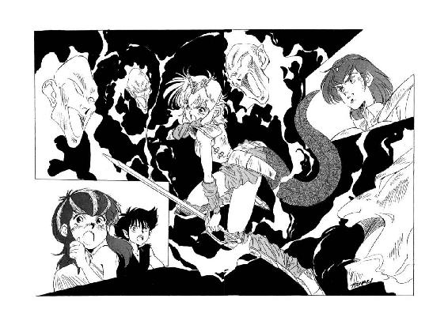
「こうも容易に幻覚に陥るとは、神獣公とは言え、精神は人間のままなのか？」
戦慄に満ちた声で、デュークが呻く。
「だとすると、どうなる？ 人間の精神力など、第一番の能力の前では、砂の城より簡単に崩壊するぞ。すると、まさか、精神が崩壊した神獣公が出現するのか......？」
「そんな事態は、あり得ない！」
強化斬魔獣剣士が、押し殺したような声で唸る。
「どんな凄まじい幻覚に晒されようと、むざむざ精神崩壊するようなルナじゃない！ 必ず、何とかして、絶対に打開するはずだ！」
僕は信じる、彼女を信じる、と、呟きながら、強化斬魔獣剣士は濃灰色の目を憑かれたように光らせ、窮地に立つ恋女を見据える。彼の理知的な瞳が、これほどまでに狂おしい色を帯びる事は滅多にない。
と、不意にルナが、伏せ気味にしていた顔をくいっと持ち上げ、緊張した表情で周囲を見回す。幻覚を破ったのか、と、強化斬魔獣剣士は一瞬目を輝かせたが、彼女の目は相変わらず彼には見えない幻影を見て、彼には聞こえない幻聴を聞いていた。
その時、ルナを取り巻く幻覚世界では、彼女を完全包囲した第一番の顔面群が、いきなり一斉に口を開き、ぞっとするような声で恨みを言い立て始めたのである。
「なぜだ！ なぜお前は人間の分際で、神獣の力を手に入れた！」
「なぜ、お前如きに与えられる神獣の力が、私には与えられないのだ！」
「なぜだ！ 私のどこが、お前に劣るというのだ！」
「私の方が、遥かに優れているのに！」
「私の方が、遥かにふさわしいのに！」
「なぜだ！ なぜ私ではなくお前なのだ！」
「お前のはずがない！ 私でなくてはならない！」
「神獣の力を得るのは、私でなくてはならない！」
「渡せ！ 私に渡せ！ 神獣の力はお前のものではない！」
「神獣の力は、私にこそふさわしい！」
「渡せ！ 私に渡せ！」
「神獣の力は、私のものだ！ 渡せ！」
「渡せ！」
「私のものだ！ 渡せ！」
「それが、お前の本心だったのね......」
渡せ、渡せ、と唱和する顔面群を見回し、ルナは掠れた声で呻いた。
影人第一番が竜神公を憎む根本的な理由は、族長の座を追われたからでも、腹心を殺されたからでもない。彼が心底渇望して得られない神獣の力を、彼女が人間の身で持っている事、それ自体が嫉ましく恨めしく呪わしかったのだ。
「な、なんて、なんて浅ましい......」
半分虚脱したような表情で呟くルナに向かって、顔面群は延々と、呪咀に満ちた唱和を続ける。
「渡せ！ 渡せ！」
「私のものだ！ 渡せ！」
「渡せ！ 渡せ！」
「私こそふさわしい！ 渡せ！」
「......冗談じゃないわ。あんたのどこが、神獣にふさわしいって言うの？」
不意にルナは、精神の奥底に、憤怒の炎が激しく噴き上がってくるのを感じた。影人第一番が、彼を慕う影人女性をないがしろにして、自己陶酔に耽っているのを見た時に感じた、あの強烈な憤怒だ。
「誰が、あたしより優れているですって？ 誰が、あたしよりふさわしいですって？ ふざけるんじゃないわよ！ 族長のくせして、一族の幸福を全然考えもしない奴に、そんな偉そうな口を叩かれる覚えはないわ！」
口早に叫びながら、ルナは再び剣を構え直す。敵の身勝手さに対する憤怒が、彼女の精神に新しい活力を吹き込む。
「あたしが魔獣と合体したのは、故郷を滅亡から救うためよ！ お前みたいな自己中心馬鹿と一緒にしないで！」
「黙れ！ 人間風情が！」
今までまったく一方的に、ルナに呪咀と怨念を吹きつけていた顔面群が、初めて彼女の感情に反応する。
「優れた者が、優れた力を手に入れるのは、当然だ！ 神獣の力を、私に渡せ！」
「渡せ！ 渡せ！」
「神獣の力を、渡せ！」
「お前なんかに、渡せるもんか！」
猛烈な憤怒を籠めて、ルナは顔面群に向かって罵声を叩き返す。
「たとえ魔獣の力が他人に渡せるものでも、お前みたいに自分の事しか考えない馬鹿には、絶対に渡さない！ 人間だろうが、影人族だろうが、自分の事しか考えない奴は、人の上に立つ資格がないんだから！ どんな能力を持っていたって、そんな馬鹿者が優れた者なんて自称するのは、まさしく嘲笑に値するわね！ この、身の程知らず！」
「黙れ！ 黙れ！ 黙れ！」
第一番の顔面群は、一斉に醜く表情を歪めて喚き声を上げる。彼は、自分の作り出した幻覚世界の中でさえ、他人に罵られる状態には耐えられないらしい。
「私の能力に圧倒され、幻覚の中から脱出する事もできないくせに！」
「幻覚を打ち破る力もないくせに！」
「神獣の力を渡さないなら、このまま永久に幻覚の中に閉じ込めてやる！」
「私の力を、思い知らせてやる！」
「身の程知らずはお前の方だ！」
「それを思い知らせてやる！」
「思い知らせてやる！」
「身の程知らずを、思い知らせてやる！ 今更後悔しても、遅いぞ！」
口々に罵る顔面群の両眼から、不意に妖しい光が放たれる。その光を浴びた瞬間、ルナの全身に不快な痛みがびりびりと走る。
「あちちちちっ！」
「どうだ！ 痛いか！ 苦しいだろう！」
「この苦痛に、どこまで耐えられるかな？」
「幻覚の苦痛でも、苦痛は苦痛だ！」
「たかが人間の神経が、いつまで耐えられるか、見ものだな！」
勝ち誇った声で嘲りながら、顔面群は続けざまに怪光を発射する。そのたびに、激痛と言うほど凄まじくはないが、皮膚を内側から引っ搔かれるような嫌らしい痛みが、ルナの身体を容赦なく苛む。四方八方から光線が放たれるため、身を躱そうにも躱しようがない。
「ったくもう、本当にどこまでも陰湿な奴ね！」
苦痛に顔を顰め、ルナは吐き捨てるような調子で唸る。しかし、陰湿だろうと自己中心的だろうと、とにかく彼女が第一番の術中に嵌まり、どうにも打開ができない状態になっているのは間違いない。何とかしないと、いつかは本当に耐えられる限界が来てしまう。
「......こいつだけには、負けたくない！」
ぎりぎりと歯を食いしばりながら、ルナは内心、本当に切実にそう思った。こんな身勝手な奴に屈服したら、彼女が魔獣と合体してから自分に課してきた制約、桁外れの破壊力を濫用しないように守ってきた自戒が、すべて無意味だった事になる。能力のある者、強い力を得た者は、他人を自由に犠牲にしていい事になる。
それは違う、それは絶対に違う、と、ルナは激しく首を振った。
「そんなはずはないわ！ 強い力を備えている者には、相応の自制心が必要なはずよ！ そうじゃないのっ？」
「ソノ通リダ、頭脳体。ソレガ正解ダ」
不意に、まったく不意に、巨竜魔獣の太い声が、周囲を圧倒して殷々と響きわたる。その瞬間、得意顔で怪光を乱射していた第一番の顔面群が、一斉に怯えたような表情になり、攻撃を止め、口を閉ざす。
「ヴァルガー!? ヴァルガーなの!?」
半信半疑、いや、三信七疑ぐらいの口調で、ルナが虚空に向かって呼びかける。だいたい、彼女が魔獣隠身冠を装着している以上、巨竜魔獣の意識は、その能力と共に封じこまれているはずだ。
しかし巨竜魔獣の声は、彼女に取っては馴染み深い、いつもの調子で無雑作に語りかけてくる。
「何ダカ知ランガ、自制心ニ欠ケル馬鹿者ガ、魔獣戦士ノ精神ニマデ踏ミ込ンデ、ギャアギャア騒ギ立テテイルヨウダナ。煩ワシイカラ、サッサト始末ヲツケチマオウゼ」
「そりゃまあ、一刻も早く始末をつけたいけど」
これ、本当に巨竜魔獣が出してる声なの？ まさか、第一番の作った幻覚じゃないでしょうね？ と、わずかに眉を寄せながら、ルナは巨竜魔獣に向かって訊ね返す。
「だけど、どうやったら始末できるの？」
「簡単ダヨ。馬鹿者ハ力ヲ渡セト騒イデルンダカラ、取リアエズ、力ノ片鱗ヲ渡シテヤレバ良イノサ」
ごくあっさりと、巨竜魔獣は返答する。
「ソウスレバ、タトエ片鱗ト言エドモ、奴ニハ巨竜魔獣ノ力ガ重過ギルノガ、即座ニ明確ニナルハズダ。コレコソ正ニ、身ノ程知ラズノ証明ダナ」
「力の片鱗？」
ますます訝しそうに、ルナは眉を寄せて首を傾げる。力を渡せと言うのなら渡してやれば良い、なんて気軽に断言するあたり、この声が第一番の巧妙な罠かも知れない、という疑いは捨てきれない。
しかし、次の巨竜魔獣の言葉で、彼女の疑念は文字通り雲散霧消する。
「ホラ、頭脳体ガ魔獣誅伐光線トカ呼ンデイル、活力ノ微小規模発現ガアルダロウ。アレヲ浴ビセテヤレバ良インダヨ。奴ハ迂闊ニモ、自分ノ超能力デ魔獣戦士ヲ包ミコンデイルカラ、狙イヲ定メル必要ハナイ。全方向ニ一斉放射スレバ、モノノ見事ニ直撃スルハズダ」
「あっ！ そうか！」
どうして今まで魔獣誅伐光線の事を思いださなかったのかしら、と、半分啞然とした表情になって、ルナは大きくうなずく。
「確かに、あれを全方向に一斉放射すれば、この顔面群を吹っ飛ばす程度の事は簡単にできそうね。ありがとう、ヴァルガー。あんたに言われるまで、どういうわけか全然気がつかなかったわ」
「一種ノ心理干渉ダナ。従属種族ニシテハ、ケッコウ強力ナ能力ダ。モットモ、俺ニ影響ヲ及ボス事ハ、不可能ダッタガ」
淡々とした調子で、巨竜魔獣が答える。
「ソモソモ、迂闊ニ奴ガ頭脳体ニ心理干渉シタカラ、結果的ニ俺ノ意識ガ解放サレタンダカラナ。ショセン自分ノ限界ヲ判断デキナイ奴ハ、ドンナニ強力ナ能力ヲ備エテイテモ、身ノ程知ラズト言ウベキダロウナ。生兵法ハ大怪我ノ元、ダヨ」
「そうね」
今度は小さくうなずいて、ルナは周囲の顔面群を見回す。巨竜魔獣の声がしてからずっと、引き攣った表情になって口を閉ざしていた第一番の顔面群が、彼女の視線を受けて、掠れた声で呻く。
「や、やめてくれ......」
「紅の光線を浴びせるのは、やめてくれ......」
「死なずに済んでも、無力になってしまう......」
「何もできないまま、殺されてしまう......」
「やめてくれ......」
「今更怯えるぐらいなら、最初から魔獣の力なんて欲しがらなければ良かったのよ」
もう完全に手遅れだけどね、と、言葉には出さずに呟いて、ルナは魔獣誅伐光線を全方向に一斉発射しようと身構える。ところがその瞬間、彼女は不意に当惑した表情になって、巨竜魔獣に訊ねかけた。
「あ、だけど、この顔面は幻覚なのよね。そうすると、実際に全方向一斉発射を敢行すると、大集会場に集まってる影人族全員を悶絶させる事にならない？」
「ソノ心配ハ当然ダガ、結論トシテハ問題ナイ。魔獣誅伐光線ノ発射モ、幻覚世界内部ノ事項ダカラネ。範囲ハ相応ニ限定サレルヨ」
あっさり答えると、巨竜魔獣はわずかに声の調子を変えた。
「ソウヤッテ、周囲ニ被害ヲ及ボサナイヨウ自ラ配慮スルノガ、頭脳体ノ特長ダナ。魔獣ノ巨大ナ力ヲ制御スル者ニハ、多カレ少ナカレ、ドウシテモ必要ナ思考法ダヨ」
「それが第一番には、理解できなかったのね」
呟くと、ルナは厳粛と表現しても良さそうな口調で宣言する。
「魔獣の力が欲しいのなら、まずはその片鱗を受け取りなさい。力を寄こせなんていう要求をした以上は、たとえ片鱗が支えきれなくても、自分で責任を取って貰うわよ」
「やめろ！」
「やめろ！」
「やめろ！」
「やめてくれーっ！」
顔面群が一斉に悲鳴のような声を上げるが、彼女はゆっくりと首を横に振った。今更、自分の負うべき責任を逃れようとしても、もはや完全に遅過ぎる。
「さあ、行くわよっ！ 魔獣誅伐光線、全方向一斉発射！」
「ぎゃああっ！」
「ぎゃああっ！」
「ぎゃああっ！」
「ぎゃあああああああああっ！」
ルナの全身から紅の閃光がほとばしり、周囲の顔面群を明々と照らし出す。その光を浴びた顔面は、あっという間にぼろぼろどろどろと崩壊しながら、断末魔の悲鳴を上げる。予想以上に凄い効果ね、と、彼女は濃紺色の目を丸くする。
「だけど、まあ、これも幻覚だしね」
半分は魔獣が返答するのを期待して、ルナは小さく声に出して呟いた。しかし、第一番の心理干渉が破れ、魔獣隠身冠の制御効果が戻ったらしく、巨竜魔獣の声はもはや彼女に答えなかった。
そして、何層にも重なっていた顔面群の最後の一つが崩れて消えると、まるで霧が晴れるように、実際の光景がはっきりと見えてきた。ルナが立っている場所は、相変わらず影人族の大集会場の中央付近だったが、いつの間にか方向が入れ替わり、彼女の正面に同行者たちの姿が見える。その中に、見るからに心配そうな表情をした強化斬魔獣剣士を認め、彼女は微笑を浮かべて前に進み出す。
ところが、数歩進んだところで、ルナは黒い襤褸布の塊のような存在が足元に転がっているのに気がついて、はっと顔色を変えた。
「これが......影人第一番？」
どうしてそんな現象が起こったのかわからないが、影人第一番の身体は、まるで乾燥死体のように変化していた。その干からびた顔面には、恐怖と絶望と怨恨の表情が、残留物のように張り付いている。
そして、彼女が息を吞んで見詰める目の前で、影人第一番の死骸は、急速に崩壊して一塊の塵と化した。その後には、ぼろぼろになった黒衣と、なぜかこれだけは華麗な輝きを失わない黄金の冠だけが残る。
「身の程知らず、か......」
黒衣と冠、そして、散っていく塵を見やって、ルナは複雑な表情で呟く。
魔獣にさえ認められるほどの見事な超能力を持ちながら、自制心の欠如と自己認識の甘さ、そして、何よりも他者を思いやる配慮に欠けたため、影人第一番は自らの超能力に滅ぼされるような形で悲惨な最期を遂げた。大きな力を持つ者は、同時に重い責任を負わなくては、自分自身を破滅させる危険がある、という事実が、彼には最後まで理解できなかったのだろう。
そして、もしもルナ自身がその事実を忘れた時には、即座に彼女の上に、影人第一番など比較にならないほどの悲惨な破滅が襲いかかるに違いない。彼女が所有している力は、彼より遥かに大きいのだから。
「力の陰には、必ず災いが潜めり。力、大いなれば、災い、また大いなり。力を持つ者、汝が常に災いを持つ事を、ゆめ、忘れるなかれ」
故郷に伝わる古い箴言を小さく呟くと、ルナは影人第一番の残骸に背を向けて、恋人と同行者たちの方に、しっかりとした足取りで歩いて行った。彼女が近づいてくると、強化斬魔獣剣士が待ちかねたような調子で声をかける。
「ルナ！ 大丈夫かい？ 幻覚の悪影響は、残ってないか？」
「大丈夫よ」
うなずいて、魔獣公女は小さく笑う。
「あたしは、大丈夫。ちょっと危なかったけど、もう大丈夫よ」
自分が背負っているものの大きさに、気がつくことができたから、と、彼女は言葉には出さずにつけ加えた。
10
「それでは、我々は夜明けまでに、この地を離れます」
新たに影人族長となった第七番が、荘厳と称しても良さそうな口調で確認する。
「竜神公殿は、夜明けと同時に闇神公を解放して下さい。もしも何も起こらないようなら、我々は再び、ここに戻ってきますぞ」
「はい、承知しています」
ルナは、真摯な表情でうなずいた。
影人族の上級幹部、第七番や第十六番が、敢えて族長に逆らってまで竜神公に協力してくれたのは、別に好意からではない。彼女が、闇神公こと闇の魔獣の封印を解く、と、誓言を立てて約束したからである。万一、この約束が実行されなかったら、彼らは躊躇なく竜神公の敵に回るに違いない。
だから、夜明けになったら、あたしは間違いなく闇の魔獣の封印を解く、と、ルナは自分自身に確認するような調子で、声には出さずに呟いた。だけど、封印を解いた後で何が起こるかは、全く別問題だ。
そして、第七番が影人族を引き連れ、大集会場から姿を消すのを待って、彼女は無謀戦士に指示を出す。
「そういうわけだから、おっさん、夜明けまでに皇帝宮殿を確実に無人にしておいて。できれば、帝都全体から人間がいなくなってれば、もっといいんだけどね」
「うむ」
あまり気が乗らない表情ではあったが、無謀戦士は一応うなずく。そして彼は、魔獣公女にではなく、その背後に控えている鮫鷲獅子に向かって、いささか未練がましく訊ねた。
「おい。本当に我が老師は、俺が闇の魔獣と闘ってはいかん、と、言われたのか？」
「真に左様でございます、バト・ロビス様」
例によって極めて丁寧な口調で、鮫鷲獅子が返答する。
「私の御主人様、大ザシャム様の予言によりますと、闇の魔獣と闘うよう定められた戦士は、巨竜魔獣公女殿下ルナ・ド・リムズベル様と、強化斬魔獣剣士ミル・ユード様のお二人だけでございます。そして御主人様は、もしもバト・ロビス様が師命を無視して闇の魔獣と闘うのなら、即座に破門に処す、と、はっきりと私におっしゃいました」
「即座に破門か」
破門が怖いわけではないが、あの老師がそこまで断言する以上、闇の魔獣とは闘わん方がいいのかも知れん、と、無謀戦士は渋い表情で唸る。この時、彼の内心に、どうもこのところ勝負勘が鈍っておるし......などという雑念が走ったかどうかは、定かではない。
「やむをえんな。詰まらん役目ではあるが、この俺が帝都を無人にしてやろう」
そう言って、無謀戦士はかなり物騒な呟きを洩らす。
「要するに、帝都から人間がいなくなれば良いのだからな。四の五の言うより、俺の手で帝都を人間の居られぬ状態にするのが、最も手っ取り早いわ」
「ちょ、ちょ、ちょっと、おっさん！ せめて、死者だけは出さないでよ！」
もしかすると、凄く危ない相手に危ない役目を頼んでしまったのかも知れない、と、早くも半分後悔しながら、ルナは無謀戦士に念を押す。するとバト・ロビスは、じろりと彼女を見やって返答した。
「うむ。一応は心得ておく」
「うへー......」
ルナは憮然とした表情で、天井を仰ぐ。そこへ、デュークが冷静な声をかける。
「竜神公様。私を、バト・ロビス殿の補佐に任じていただけませんか？ そうすれば、帝都から人間を避難させる作業が、円滑にできると思いますが」
「補佐などいらん」
無謀戦士が苛立った声で、デュークの言葉を遮る。闇の魔獣と闘えないのが、やっぱり目いっぱい口惜しいらしい。
「帝都を無人にするぐらいの半端仕事、俺一人で充分だ」
「あんたが強力無比なのは重々承知しているが、仮にも帝都という以上は、けっこう面積があるんだろう？ 頼むから、新参者にも仕事を分けてくれよ」
軽妙な口調で言うと、デュークは無謀戦士を片手で拝むような仕草をする。あら、いつの間に、この混血影人、こんな世慣れた喋り方を、しかも人間相手にするようになったのかしら、と、ルナは紺色の目を丸くする。
そして、更に彼女が驚いた事には、見るからに腹立たしげな表情をしながらも、無謀戦士が首を縦に振ったのである。
「お主に頼むと言われては、やむをえん。こき使ってやるから、俺の補佐をせい」
「だけど、あの、十九。腕は大丈夫？」
ルナの問いに、デュークは無雑作にうなずく。
「大丈夫です。もう、ほとんど癒着しかけています。影人族の使う特製の薬物も入手してありますし、何も心配はいりません」
「なるほど。抜かりはないって事ね」
だけど、無謀戦士と元暗殺者の組み合わせって、ますます危険なような気もするけど、と、ルナはぽりぽりと頭を搔いた。まあ、心配してても際限がない。
「えーと、それから、ロコはリルと一緒に避難して。で、充分に距離を取って安全を確保した上で、この後、何が起こるか見届けてちょうだい」
そう言って彼女は、厳しい表情で自分の使い魔を見やった。
「状況によっては、自分の判断で、カルバドク、リムズベル、エリオン、アルタイオ等に急報するように。順序としては、魔道都市が最優先かな」
「わ、わかりました」
有翼猫は、全身に緊張をみなぎらせてうなずく。使い魔としては異例なほどの自己判断能力を備えている彼は、女主人が言う状況というのがどういう代物か、漠然とではあるが理解しているようだ。
「それから鮫鷲獅子さんも、事態を見届けて、貴方の御主人様に伝えて下さい。まだ、カルバドクで御睡眠になってるのかどうか、あたしにはわからないけど」
彼女にしては珍しく、ちょっと皮肉を交えた口調で、ルナは鮫鷲獅子に指示をする。ところが鮫鷲獅子は、鮫の頭を極めて慎み深く横に振った。
「申し訳ございませんが、公女殿下。私はこの事態に関しましては、既に御主人様から命令を受けているのでございます。その命令によりますと、私は公女殿下が御装着になっている魔獣隠身冠、及び、強化斬魔獣剣士様が装備されておられる強化斬魔獣剣、この二点の特製魔道具の機能と使用法に関しまして、適切かつ正確な説明を行なわせて頂く役目を与えられております。つきましては、魔獣公女殿下と強化斬魔獣剣士が闇の魔獣と対決されるまさにその時、私は畏れながら、お二人の傍にお控え申し上げていなくてはならないのでございます」
「な、何よ、それ!?」
意外と憤慨が混ざったような口調で、ルナは鮫鷲獅子に訊ねかける。
「て、ことは、あんたは魔獣隠身冠と強化斬魔獣剣の機能説明役だから、あたしたちと一緒に闇の魔獣と御対面しなきゃならないって言うの？ そんな馬鹿な話ってないわよ。魔道具の機能がどれだけ複雑怪奇か知らないけど、今、ここで、使用者のあたしとミルが納得するまで説明すれば、済む事じゃない！」
「それが、その、誠に申し訳ございませんが、御主人様が施されました特殊な処置によりまして、適切な状況に遭遇しません限り、私には魔道具の機能を説明をする事ができないのでございます」
心もち身を縮めながら、鮫鷲獅子は懸命に説明する。
「いや、できないと申し上げるより、知らないと申し上げた方が正確でありましょう。御主人様が設定なさいました状況が訪れますまでは、私の頭の中には、その知識は存在しないのでございます。適切な状況に遭遇いたしますと、初めて知識が組み込まれまして、御説明申し上げることができるように......」
「あー、わかった、わかった。もう、いーわよ」
いささか腹立たしげな表情になって、ルナは鮫鷲獅子に向かって手を振った。
「要するに、大ザシャム尊師の意向には、どこをどうひっくり返しても逆らえないって事ね。ったく、あの老人ったら、何考えてるか明かさないくせに、自分の考え押しつける時は、問答無用なんだから！」
「そう怒るな。老師のやる事だ。最終的には、辻褄が合うようになっておるはずだ」
老師との関係はルナより遥かに長い無謀戦士が、妙に分別臭い口調で彼女を宥める。やーれやれ、よりにもよって無謀戦士に宥められるとはねー、と、彼女は一気に怒る気をなくしてしまった。
するとそこへ縞兎娘が、にまっと笑って訊ねる。
「あたいの役目は、何かあの？ もっともあたいには、生き延びて人生楽しむ以外、興味は全然ないけど」
「それで充分よ」
ちょっと気の抜けた、しかし妙に実感の籠った調子で、ルナが答える。
「あんたなら、世界がどーなっても、とりあえず生き延びて、楽しく人生送る方法を見つけられるでしょうね。それができれば、何よりだわ」
「了解。そなら任しといて」
笑顔でうなずくと、彼女はくるっとルナに背を向け、すたすたと大集会場から出ていく。なるほど、まずは危地から遠ざかるのが、生き延びる第一歩ってわけね、と、ルナも小さく苦笑する。
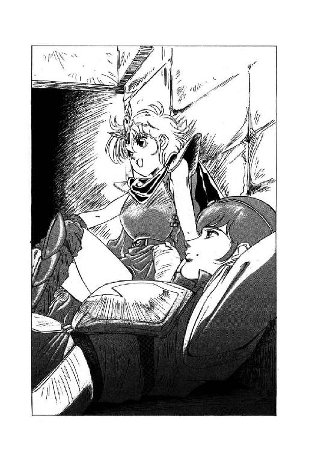
そして、リルが出て行ったのを契機に、他の連中もそれぞれ彼女の前から去ってゆく。残ったのは、強化斬魔獣剣士と鮫鷲獅子だけである。
「予定では、ミルと二人っきりになるはずだったんだけどな」
わざわざ口に出して呟くと、ルナは横目で鮫鷲獅子をちらっと見やった。しかし、あんまり必要ない時に回りくどいほどの丁重さを示すくせに、この肝心な時には、鮫鷲獅子は何の反応も示さない。さすが、相手の心境を考慮しない大魔道士の使い魔、と、彼女は妙なところで納得する。
「それならこっちだって、勝手にするわよ」
呟いて、彼女は鮫鷲獅子から離れ、強化斬魔獣剣士が横臥している一隅へ行った。彼は、影人族が出て行った頃から、疲れたと称して横臥しており、そのまま目を閉じて、身動きもしない。一見、熟睡しているように見えるが、重大事に臨むと思い悩む性癖のある彼は、たぶん眠ってはいないだろう、と、ルナは判断している。
「まあ、明日、何をしなきゃならないかを考えれば、体力回復のために眠るか、寝たふりをしてるのが良策なんでしょうけどね」
呟いて、ルナは恋人の傍に横臥する。
「でも、後悔しない？」
「明日死んだら、後悔するだろうな」
青年が、目を閉じたまま応じる。
「だから後悔しないように、明日は死なないようにしよう」
「変な理屈」
くすっと笑って、ルナは身体を恋人にぎゅっと押し付けた。しかし、それ以上は二人とも何もせずに、そのままじっと夜明けを待つ。
夜明けまでの時間、ミル・ユードが少しでも眠れたかどうかはわからない。だが、一人で思い悩んでいるよりは遥かに良好な状態だったのは、確かだろう。
＜続く＞
電子書籍版あとがき
どうも、秋津です。
昔話、そろそろ大詰です。
一九八八年一月十五日。この日初めて、私は角川書店の編集さん二人、一人は私の担当編集となる方で、もう一人は青帯の編集長さんと会い、打ち合わせをしました。
デビュー前夜の記憶は、今でもけっこう鮮明なのですが、この打ち合わせの前半部分は、よく覚えていません。確か、三巻目までの構成や登場キャラクターについて話した気がするのですが、それが一渡り終わったところで、おもむろに編集長さんが口を開いたのです。
「ところで、この話、ルビが独特で、しかも大量だよね。僕は面白いと思うんだが、通常の版組みでは、さすがに窮屈なんだ」
「はい」
だからルビを削れという話かと私は思ったのですが、編集長さんは予想もしていなかった言葉を続けました。
「だから、一ページの行数を通常より減らして、行間広げようと思うんだけど、そうすると、今ある四百枚の原稿だと、ちょっと厚くなりすぎるんだよね」
そして編集長さんは、私を見据えました。
「今月末までに、一巻目のラスト書き換えて、三百五十枚で区切りにできないかな？」
「ちょっと待ってください、編集長」
私が返事をする前に、担当さんが慌てた声を出しました。
「一巻目のラスト変えたら、二巻目も書き直しでしょう？ 二月末までに、二巻目を書き上げてもらう方が優先じゃないでしょうか」
「無理かな？」
編集長さんは、担当さんの方ではなく、私を見据えたまま尋ねます。私は、答えました。
「今月末までに一巻目区切り直し、来月末までに二巻目完成ですね。やります」
次巻に続く...
ヴァルガーワールド図鑑 武器・物品編
〔攻撃用武器・個人装備〕
剣（長剣）：もっとも一般的な戦士の武器。片手扱。ルナ カーライル他
剣（大剣）：両手で柄を持つ、大きく重い剣。ダス
斧剣：斧と剣を組み合わせた南方特有の武器だが、よほどの修練を積まないと扱いにくいため、あまり一般には使われていない。バト ザグ ノワール他ロビス関係者
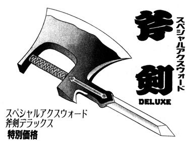
白熱剣：チョーサーの店の商品。念を籠めると白熱する小剣だが、柄まで白熱してしまうため、普通の人には使えない。気合で熱を克服する無謀戦士専用。バト・ロビス
斬魔獣剣：チョーサーの店の商品。魔獣ヴァルガーに対して強力な防御力を持つが、通常の武器としては役に立たない。ミル・ユード
強化斬魔獣剣：斬魔獣剣を大ザシャムが強化したもの。やっぱり通常の武器としては役に立たない、強化斬魔獣剣士ミル・ユード専用。
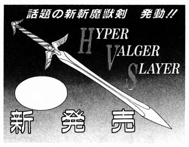
魂喰らい（小型曲刀）：魔道士の脳を特殊加工して造られる闇魂を、武器としてさらに再加工した、グレゴール・クライシスオリジナルの高級魔道具。この剣で傷つけられたものは、たとえかすり傷でも生気を根こそぎ奪い取られ、白蠟屍と化す。火炎に弱い。グレゴール チャフ ザグ
魂喰らい（刺殺針）：破損した魂喰らいの剣を加工し直したもの。生気を吸い取る力は弱くなっているが、やはり恐るべき武器である。チャフ
短剣：もとは船乗りが帆綱を切るために使った大振りの短剣。かなり一般的に使用されている。ミル カーライル ジャツク ロコ 他多数
短剣：超高級暗殺者専用短剣。針の様に細いが、影人族の頭蓋骨を軽々と裂く切れ味を誇る。デューク
ナイフ：大小さまざまある。詳しくは、テック・ハラディまでお問い合わせ下さい。テック チャフ
大鎌：ローラ・パウルの首を一撃で落とした凶器。こんなものが家に常備してあったのは、やっぱりグレゴールならでは。チャフ
細鞭：何条にも分かれて、いくつもの目標を攻撃できる多条鞭。自在に扱うためには、かなりの修練が必要。ロナ家の家伝の武器。レイピア クラウド
細剣：細身の鋭い剣。レイピア・ロナが愛用。彼女に長剣が使えないとは思えないので、やっぱり趣味で使ってるんだろう。レイピア
鞭：しなりのある短い棒。扱いは容易。イン
戦斧：海蛮人特有の武器。斧剣との関係は不明。デンガーン
喋る剣：チョーサーの店の商品。痛みに弱く、やたらに悲鳴を上げてやかましい。切れ味は、通常の剣並み。
大蛸殺し：チョーサーの店の商品。通常の武器としては役に立たないが、大蛸には威力を発揮すると思われる。大蛸魔獣に通用するかどうかは不明。
氷結剣：チョーサーの店の商品。氷でできているため、長時間鞘から出しておくと溶けてしまう。切れ味は、通常の剣並み。
爆裂剣：チョーサーの店の商品。鞘から抜いた瞬間、爆発する。切れ味は不明。
弓：一般的に使われている。南方の弓の方が、頑丈らしい。多数
大弓：遠距離を攻撃できる、強力な弓。吞酒戦士の得意武器。ダス バト
巨大鉄弓：黒竜帝専用の、非常識なほど強力な鋼鉄の弓。黄金飛行竜の首を、一撃ではね飛ばす。もちろん常人には扱えないが、無謀戦士や吞酒戦士に扱えるかどうかはわからない。ノワール
〔攻撃用武器・軍、集団装備〕
攻城弩砲：荷車に、巨大な弩弓を据えつけたもの。ある程度難れた距離から、城壁や城門を攻撃できる。当たり方によっては巨竜魔獣をひっくり返すこともできる、強力な兵器。ダンバス軍
投石機：大石を城壁越しに飛ばす、攻城武器。陸上船に備えられている。陸上海賊
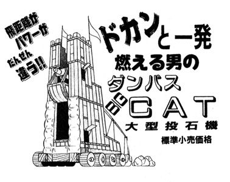
（防具・個人装備）
軽甲冑：甲猪の革で造られた極めて軽く強靱な甲冑。ルナ ミル他多数
重甲冑：甲猪の革を重ね張りしてあり、金属甲冑に比較すれば、遥かに軽い。バト ダス ノワール他多数
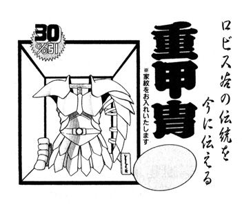
戦闘防具：衣服の上から装着する、簡単な防具。やはり、甲猪の革製。レイピア
頭部防護輪：金属を仕込んだ鉢巻きで、兜の代用品。ルナの髪飾りにも、実は似たような意味がある。カーライル
対魔獣防御冠：魔獣の力から身を守る事のできる、大ザシャム製の魔道具。魔道都市評議長の権威の象徴でもあり、全評議員の魔力結集を行う時にも使われる。力を逆転させて、魔獣を活性化させる事も可能で、応用力は極めて大きい。ファラ 他、歴代魔道都市評議長
魔獣隠身冠：魔獣の力を隠蔽して、強化斬魔獣剣の力と衝突しないように押さえる魔道具。大ザシャム製。ルナ
自爆甲冑：チョーサーの店の商品。損傷を受けると、大爆発を起こす。
磁気健康甲冑：チョーサーの店の商品。磁石が内蔵されていて、血行を促進し、肩こり、筋肉痛に効果がある。
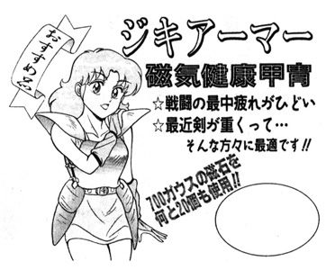
〔その他物品〕
毒針つき指輪：海賊商人の中で、提督級の高位者や、特に密命を帯びたものだけに与えられる、紋章の入った指輪。痺れ薬を仕込んだ針は、必ず装着されている。ジャック
発火油：麻に似た植物『油麻』から採れる、揮発性の油。かなり強い臭気を持つ。ルナ カーライル デイヴィー 他、リムズベル関係者
荷車：牛羚羊に牽かせる。通常の場合、人間の脚より遅い。ミル他多数
四頭駆動羊羚輿：特に訓練した牛羚羊四頭を使い、どんな山の中でもかなりの速度で進むことができる。但し、乗り心地は、馴れない者には地獄。ヴェーダ
陸上船：魔道の力で、陸上を海上と同様に進む帆船。高速で大量の物資を輸送できる、最優秀陸上交通機関。但し、価格は高く、しかも水に沈む。陸上海賊
機動船：速力は帆船に勝るが、居住性、搭載量で大きく劣る。どちらかといえば、戦闘用の船。海蛮人
帆船：ヴァルガーワールドの、主力交通機関。海賊商人 他
動く像：魔道の力で動く、生命のない像。大きさ、形はさまざま。簡単な命令を実行することができる。本場は、東方大陸の魔道都市テム・ノグ。マリオン バラン
鉄鍋：魔獣の攻撃もはね返す。正体不明の肉が出てくる。大ザシヤム製の、何だかよくわからない驚異の魔道具。シェフ
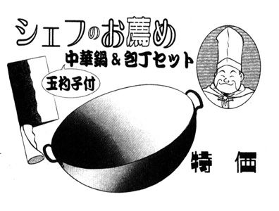
包丁：何でも料理する。魔獣でも料理する。これも、大ザシャム製。 シェフ
魔法のサンダル：一日に五日旅程を歩くことができる。強力な魔道具。サンドゥ以外の人物につかえるのかどうかは、不明。サンドゥ
魔法のフラスコ：アルコールを注ぐと、生物を透視することができる魔道具。魔獣を透視できるんだから、かなり強力に違いない。ヴェーダ
魔法の鏡：画像を送る、投射する、等の使用され方が多い。テオドラ 他、 魔道関係者
魔法の宝玉（死霊術師の宝玉）：死の魔獣の根城、ヴェルフレイ神殿の地下に存在する。死霊術師の素質を持つ者の能力を引き出す。ファルル
魔法の宝玉（魔道士感知の宝石）：大ザシャムが、弟子チョーサーに与えた魔道具。周囲一日旅程内に存在する魔道士を感知し、種別ごとに色違いの光点で表す。チョーサー
杖（蛇神の杖）：蛇神こと黒蛇魔獣の巫女が持つ杖。光を発したり、黒蛇魔獣と交感したりできる。黒蛇魔獣が滅びた現在も能力が発揮できるかどうかは、不明。 リオネル
杖：詳細は全く不明だが、きっと、ただの杖ではあるまい。ザシャム
魔獣戦士ルナ・ヴァルガー
⑪遭遇
発行日 ２０１５年１１月２０日
著者 秋津 透
発行 株式会社クリーク・アンド・リバー社
〒102－0083
東京都千代田区麴町2－10－9
(c) Tôru Akitsu 2015